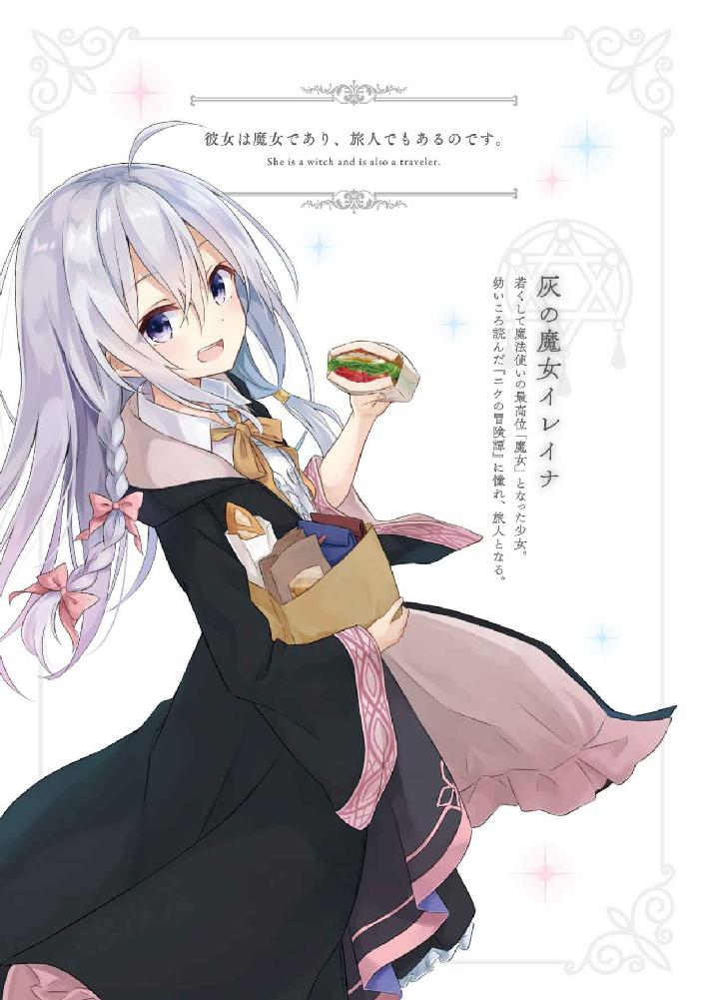
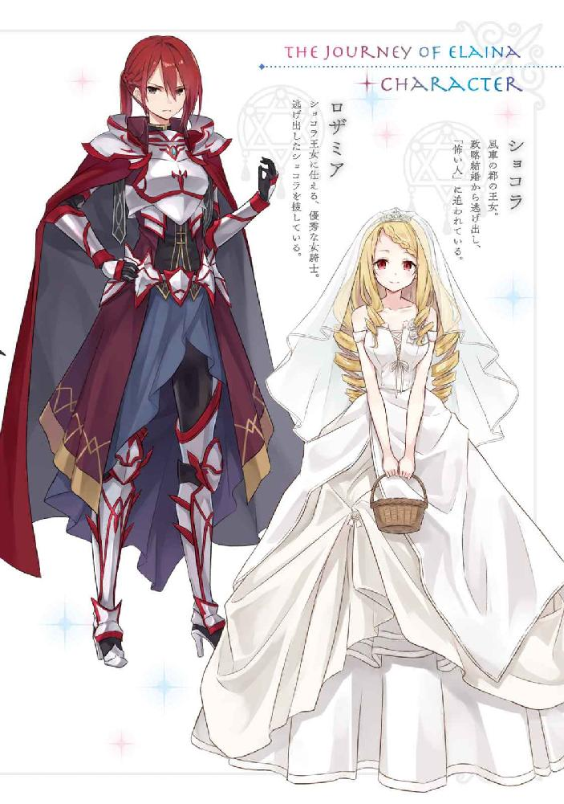
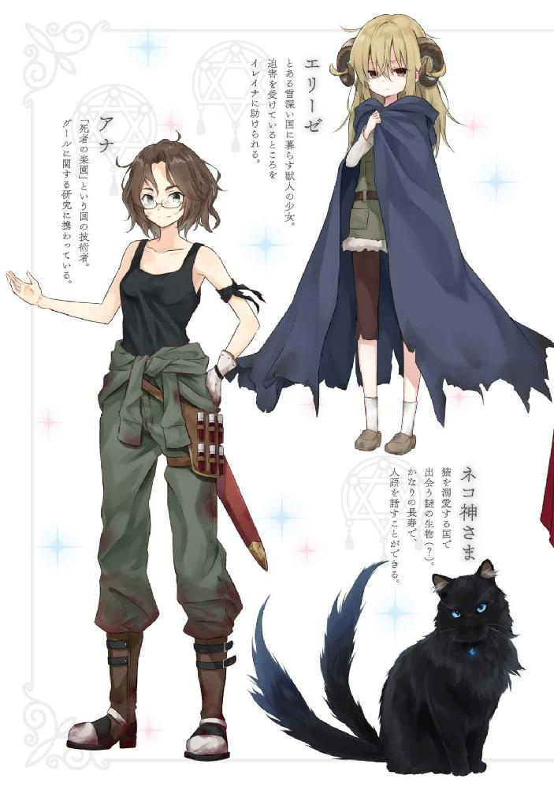
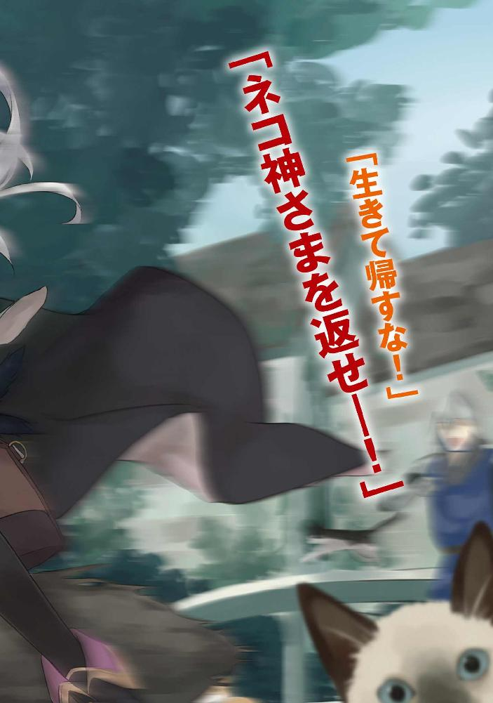
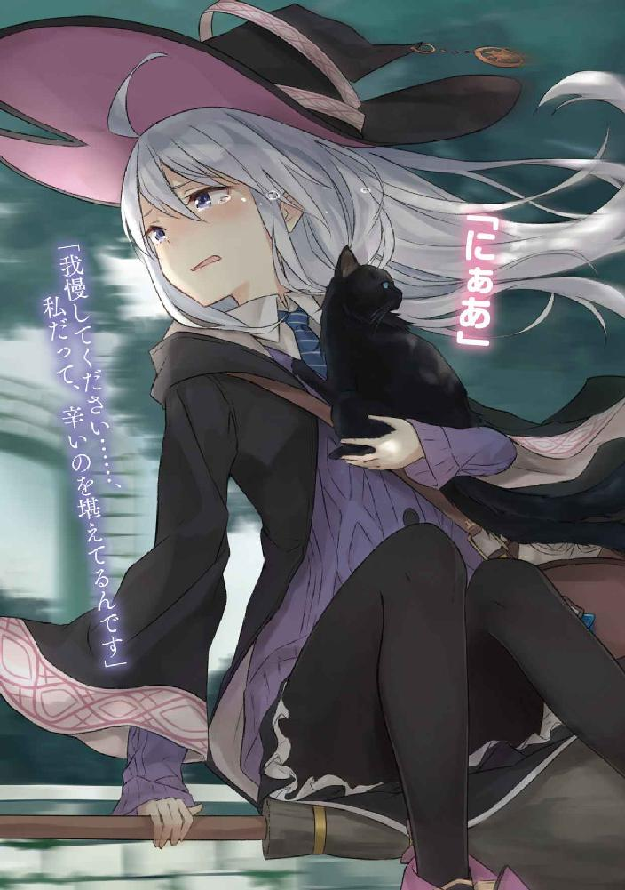
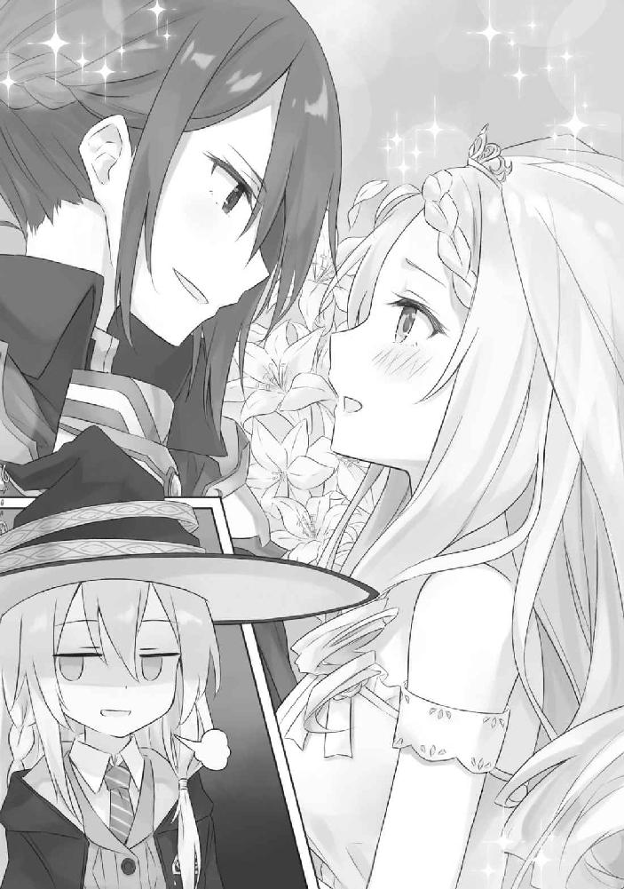
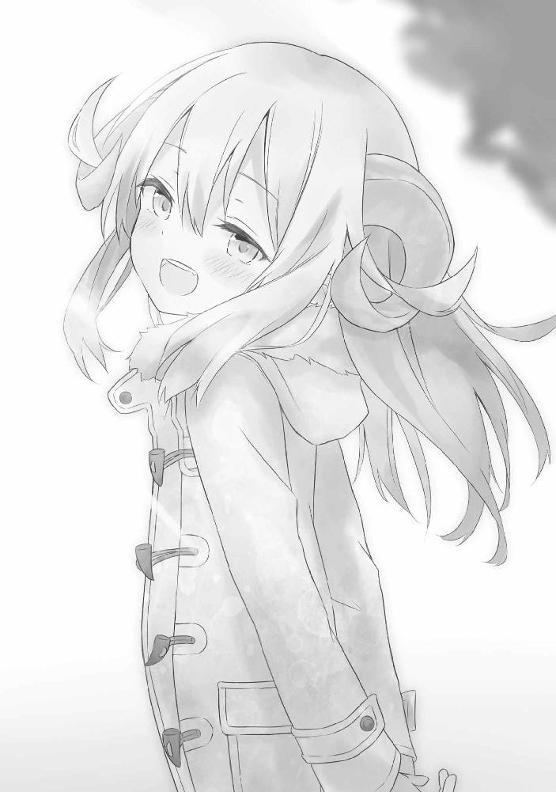
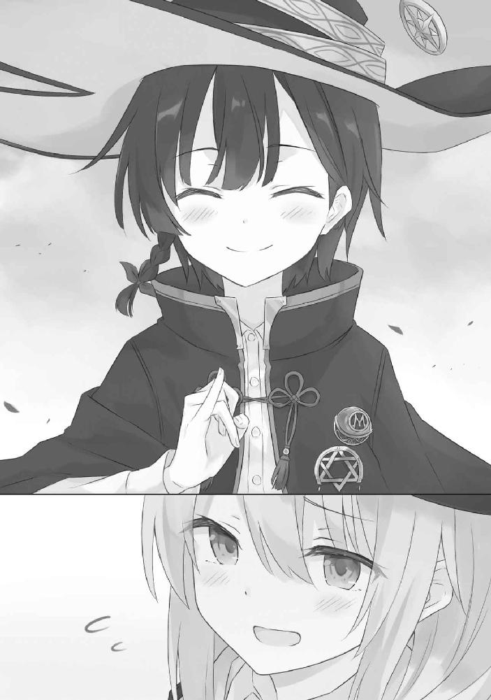
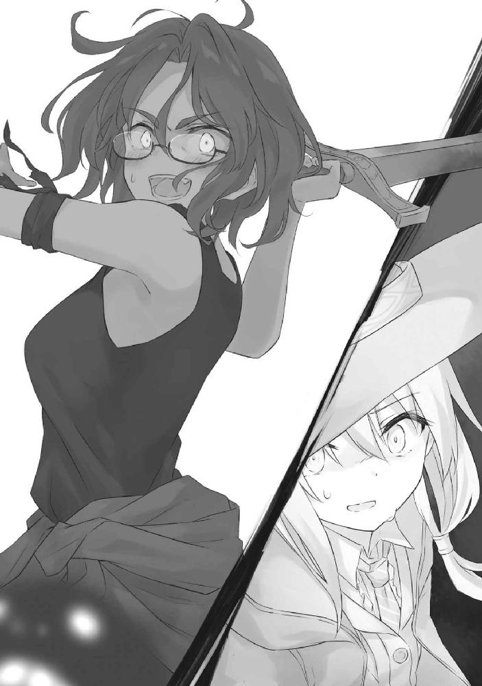
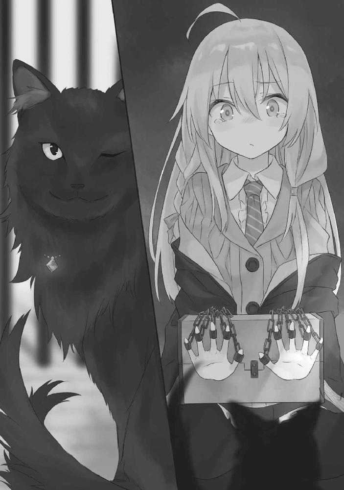

| 魔女の旅々２ (GAノベル) | |
| 白石 定規 | |
| (2016) | |





魔女の旅々２
白石定規
本書に掲載されているコンテンツの著作権等の知的財産権およびその他すべての権利は、ＳＢクリエイティブ株式会社または正当な権利を有する第三者に帰属します。
本書の内容を権利者の許諾なく複製・複写・翻案・放送・出版・データ配信（送信可能化を含む）などすることはできません。
カバー・口絵 本文イラスト
あずーる
春の平原に雨が降り注いでいました。
遠慮がちに静かに音をたてながら空から降ってくる雨粒たちは草原に広がる草花と、なだらかな丘の上に立つ一本の樹の頭を濡らしていました。
「......や、本格的に降り始めてしまいましたか」
その一本の樹の下には若い魔女が一人、灰色になった空をぼんやりと見上げていました。
空に浮かぶ雲のような色合いの髪の毛をさらりと伸ばしており、黒のローブと、黒の三角帽子、それから、魔女の証である星をかたどったブローチをしていました。
傍らにはほうきが立てかけてあり、その真下には、大きな荷物が置かれていました。
彼女は魔女であり、旅人でもあるのです。
「......どうしましょうか」
迷いました。
進むべきか、ここでぼうっと立っているべきか。
彼女は魔女なものですから、その気になれば魔法で雨を退けながらほうきで飛ぶことも、不可能ではないのです。
「............」
しかしながら、しばらく雨を眺めているうちに、そのような手を使う気もうせてしまいました。
遠くの空で、曇り空を割って、線のように細い太陽の光が、カーテンのように降り注いでいるのが見えました。ほの暗かった大地は光を一身に受けて、明るく輝いています。
絶え間なく降り注ぐ雨の雫たちも、その光を映し出していました。きらきらと輝きながら、頭上の空から、落ち続けています。
天気雨です。
「......少し、休んでいきましょうか」
眼前に広がる綺麗な情景に目も心も奪われてしまっていた魔女は、誰か。
そう、私です。
雲の間に開いた空洞から流れ落ちる太陽の光が平原に降り注いでいます。斑点のようになった明るい場所では、そよ風に揺られた草花がまとわりついた雨粒たちをふるい落としていました。
その光の筋の中を通れば、一瞬だけ、暖かい陽気に身体が包まれます。
ああ、暖かい、なんて思った瞬間には、私は再び曇り空の下。追いかけてくれればいいのに、気がつけば明るい大地は手の届かない場所にありました。
雨が上がってしばらく経ちますが、空気は依然としてじめついていて、まだどこかに冷気を隠し持っているよう。
またすぐにでも雲が太陽を全て隠して、冷たい雨粒が落ちてきそうな、そんな雰囲気があります。
「............」
私は雨というものが嫌いです。じめじめしてますし、そこにいるだけで暗い気分になりますし、何より、旅を一時休止しなければなりません。最悪です。でも雨上がりに出来る水溜りをぱしゃぱしゃと踏み潰したりするのは大好きです。雨は嫌いで雨上がりは好き。変な感じです。悩ましい。
しかし雨の気配が近づいているというのなら、急がねばなりませんね。私は少しばかり焦りながら、ほうきを走らせました。
国の姿が見えたのは、それからしばらく飛んだ後のことでした。
門の前にほうきを降ろしてから門兵さんが出てくるまで、さして時間はかかりませんでした。
珍しいことに門兵さんは兵士の装いではなく、三角帽子にローブをまとっていました。
「ようこそわが国へ。魔女様ですか？」
見れば分かるでしょうに。
「ええ。旅の魔女です」
「ははあ、そうですか。魔女様にしては随分とお若いのですね」などと感心したように頷いてから、門兵さんは言葉を続けます。「失礼ですがお名前は？」
「イレイナです」
「イレイナ様。なるほど。失礼ですが恋人は？」
「はい？」
思わず素で聞き返していました。こんなところでいきなりナンパですか？
しかし、事情は別にあったようでした。
門兵さんは軽く首を振ってから、
「失礼。よこしまな気持ちがあって聞いたわけではありません。ただ、魔法使い以下の人間を恋人に持つ方ですと、この国に滞在されると不愉快な思いをされるものですから」
「......？」
「それで、どうでしょう？ 現在、お付き合いされている方はいらっしゃいますか？」
なんだか釈然としませんが、まあ国に入れば分かるでしょう。多分。
「......いえ。まあ、いませんけど」
すると門兵さんは頷き、
「なるほど──では、お入りください」
と、門の前を退きました。
そして、鋼鉄の大きな門が地面を重々しく震わせながら開きました。
「ようこそ。魔法使いのための国へ」
私が足を踏み出すと、門兵さんは深々と頭を下げて、そんなことを言っていました。
○
門を抜ければ、そこは街の大通りでした。大きさも姿形もばらばらな民家や店が道の脇にずらりと並んでいます。
街並みには、魔法使いが溢れていました。誰かと並んで歩いていたり、お買い物をしていたり。立ち並ぶお店に目を向ければ、魔法使いたちがごく普通に生活をしています。
とはいえ、一応、魔法使いでない人たちもいるようです。道の端を歩き、魔法使いとぶつかりそうになれば道を譲り、頭を垂れ──必要以上にへりくだりながら生活をしていました。
服装も随分とみすぼらしいものばかりで、この国には、高そうなローブを着ている人か、もしくは安っぽい布切れを身に纏っている人しかいませんでした。
なんだか少し、様子のおかしな国ですね──そんなことを考えながら、私は歩きました。
そして、しばらく進んで、私は立ち止まります。
変なものがあったのです。
「......なにあれ」
まず最初に出た言葉がそれでした。
見たことのない謎の箱が、敷かれた鉄の棒の上を沿って、走っていたのです。なによりも驚いたのは、その大きな箱の中に人が詰め込まれていることです。
どうやら乗り物らしい、と理解できたのは、その箱が私の目の前で止まったときでした。扉が開くと、人々が雪崩のように降りてきます。そして入れ違いに、また新たに人が吸い込まれていきました。
多くの人が移動手段として利用しているようですね。面白そう。
なんだか面白そう。
乗ってみましょうか。
乗っちゃいましょう。
なんだかよく分からないけれどその場のノリで足を進める私でした。人を避け、流れに逆らいながら、私は箱に近寄ります。
しかし、乗り込もうとしただけで、実際に乗ることはありませんでした──乗る直前に止められてしまったのです。
「駄目よ」
と。
「ぐえっ」
変な声が出ました。背後から、ぐいっ、とローブを引っ張られたのです。
いきなり何をするんですかこのやろう──なんて少々怒りながら殺気を込めて振り向けば、魔女が立っていました。
胡散臭い笑みを浮かべた、奇妙な魔女です。
「なんですかあなた」
「あなた、魔法使いでしょう？ 一番前の車両は駄目よ。乗っちゃ駄目」敵意ばりばりの私を無視しながら魔女はぺらぺらと口を動かします。「あなたはそっちの車両」
言いながら、魔女は私が乗り込もうとしていたものよりも後ろに連なる車両......とやらを指差しました。
しかし、
「......どう見ても人が乗ってないんですけど」
「ええ。乗ってないわ。けれど事情があるのよ。だからこっちに乗りなさいな」
「こっちなら私が乗ってもいいんですか？」
「ええ。勿論──事情はあとで説明してあげる。だから、さあ、おいでなさい」
「......はあ」
わけが分からないです。
○
聞けば、その女性は動く箱物──列車、という乗り物らしいです──を作った発明家であるそうです。
一体どのような仕組みで動いているのかを尋ねれば、彼女は随分と楽しそうに喋ってくれました。
まあ内容は全くといっていいほど理解できなかったんですけどね。
容赦なく浴びせられる専門用語の波に頭が沸騰しそうでした。かろうじて聞き取れた部分があるとするならば、「この列車は魔力を原動力にしている」という仕組みくらいなもので、それ以外はさっぱり。
まあ別に分からなくても問題ないとは思いますけど。
「今ね、この列車に初めて乗った魔法使いに聞き取り調査に行っているのよ」
「はあ、そうなんですか」
列車の中に設置された長い長いソファに座り、足を投げ出し、私は適当に言葉を返していました。
「旅人さん、乗り心地はどうかしら？」
「静かですね」
窓の外に流れるのはごくごくありふれた街の景色。ご大層な箱物のわりには速度は随分と穏やかのようで、私がほうきに乗って飛ぶよりも遅く感じました。
そのおかげか、列車の中は極めて静かでした。乗り心地としては悪くないかもです。
「そうでしょう、そうでしょう。これはね、素敵な情景と面白いものを眺めながら街を遊覧できるように開発した私の自信作なの」
「ほう」
「でも魔法使いにはいまいち評判がよくないのよねぇ......、発表当初は魔法使いたちが多く使ってくれてたんだけど、気がついたら使われなくなってたわ」
「でしょうね」
遅いですし。
「ちなみにあなたは本日一人目のお客様よ。ようこそ私の列車へ」
「一人目......？」
何を言っているのやら、と思いながら、私は身を乗り出しました。列車の進行方向に目を向ければ、人が詰め込まれた車両が見えます。
あんなに人がいるのに、私が一人目？
なにゆえに？
「あら」彼女は私の目を追って、言いました。「そちらの車両に乗っているのはお客様じゃないのよ。気にしないで」
「気にしないでって......、そう言われると余計に気になりますね。お客様じゃないなら彼らは一体何なんです？」
すると彼女は言いました。
「ん？ 人間未満よ。人間じゃないからお客様でもないの」
「............」
「あなたは他所の国から来た人だから分からないのだろうけど──この国では魔法が使えない人間は人間じゃないの。動物と同じなのよ」
「......随分な言い方ですね」
魔法が使えないだけで動物扱いですか。
彼女は前の車両に目をやりながら、
「ねえ見て。惨めだと思わない？ 魔法使いと違って移動手段がないから、彼らはああやってこの列車にこぞって乗りたがるの。面白い光景よね」
「......別に面白いとは思えませんけど」
「そうなの？ けれど、この列車が出来た当初は大人気だったのよ。向こうの車両に人間未満が乗って、こちらの車両で私たちがそれを見物する──彼らのみじめな姿を、私たちは指差して笑う。日々溜まったストレスを発散できるって、好評だったの」
「人間未満、ですか......」
昔、本で読んだことがあります。確か、魔法使いから人間に対して使われる差別用語のことだったはずです。こんな言葉を本当に使ってる国があるとは驚きですね。
「でも、やっぱり流行は冷めるものなのね。今となっては、お客様は他所から来たあなた一人くらいだもの」
「......でしょうねえ」
「どうしたらこの列車に人が戻ってくれると思う？ やっぱり、もっと刺激が必要なのかしら」
「いっそのこと刺激をなくしてはどうです？」
「それじゃあこの列車の存在意義がなくなってしまうわ」
「............」
「で、何か案ないかしら」
「ないですねー」
「どうでもよさそうな返しね」
「まあ、実際どうでもいいですし」
「そう言わずに。何かアイデアが欲しいのよ。このままじゃ列車が撤去されてしまうわ」
「アイデアですか......」
これといってないのですけど。
「何かない？ この列車に乗った感想でも構わないわ」
「......あ、それならありますよ」
「何かしら？」
何を返すべきかは、既に決まりきっていました。
特に代わり映えのない退屈な景色から、薄っぺらい笑みの魔女へと視線を移し──そして、きっぱりと私は言いました。
正直な感想を、端的に。
「不愉快です」
と。
しかし彼女は大して気にするような素振りも見せず、「なるほど......不愉快、ね」と考え込んでしまったのでした。
○
その翌日から激しい雨が降り注ぎました。
国を出ることもままならず、私は暫くの間、宿屋の中だけで生活をしました。いやはや、安宿といえど、生活しようと思えばできるものですね。
しかしやることもなく、じめついた空気の中でいたずらに過ごす日々は思った以上に退屈で、私自身に苔が生えてしまうんじゃないかと心配になったほどです。
結局。
数日待っても一向に雨の止む気配がしなかったため、とうとう私は、雨の中、国を出ることを決めました。
降りしきる大嫌いな雨の中、門へと続く道を傘を差しながら歩いていると、電車が私の横をゆるりと通り過ぎていきました。
私の歩調よりも少しばかり速いだけの列車は、少し先で、ぴたりと止まります。
「むむむ」
そして備え付けられた扉が開き、中から人がたくさん吐き出されたとき。
「あら、この前の魔女さんじゃない。こんにちは。いい天気ね」
例の発明家の魔女さんと遭遇しました。
「これがいい天気ですか」
「いい天気よ。だって私の列車が大活躍しているんだもの。これがいい天気じゃないなら何だと言うの？」
「どうやらあなたとは価値観が合わないようですね」それはさておき。「しかし確かに、随分と繁盛しているみたいですね。今までほとんど乗っていなかったお客さんとやらが戻ってきているようですし」
ちらりと彼女の後ろを窺いながら言いました。
その先は、魔法使いでごった返していました。列車から降りてきたのも、乗っていくのも、同様に魔法使いばかりです。
彼女は私の視線を追いかけて、大いに頷きます。
「ええ！ 魔法使いたちがこんなにも戻ってきたのは、魔女さんのおかげよ！」
「私ですか？」
はて、何かしましたかな？
苦言は呈しましたが、お礼をされる筋合いはまるでありませんね。一体どういうことで？
疑問を傘の下に浮かべていると、彼女は、
「あなたが言った通り、不愉快なものは排除したらね、この通り、お客さんが戻ってきてくれたわ！」
と言ってから、私の前から退き、
「ほら見て。人間未満専用車両を撤廃して、全部、魔法使い専用にしたの」
と笑いました。
「............」
その先には、魔法使いたちがいました。
一番前の車両も、それ以外も、全て、魔法使いたちで埋め尽くされていました。
「やっぱり、人間未満ごときが私たちと同じ列車に乗るのなんておこがましい限りよね。不愉快極まりないわよね。私、それに気づけなかったわ。盲点だったわ。ありがとう、魔女さん」
「............」
「今ね、私の列車、好評なのよ。列車に乗りながら、雨の中、濡れながら歩いている人間未満のみじめな姿を、私たちは指差して笑う。日々溜まったストレスを発散できるってね」
「......そう、ですか」
列車から降りてきた魔法使いたちが、傘を差しながら道に広がっていきます。布切れを傘に見立てたみすぼらしい格好をした人や、前のめりになってお腹に抱えた荷物を守り走っている人たちとすれ違いながら、魔法使いたちは彼らをあざ笑い、街の中に溶け込んでいきます。
「魔女さんもどう？ 列車の中から、惨めな連中を見て回りたくない？」
私はかぶりを振りました。
「私にはそのような陰湿な趣味はありません」
「あら残念。趣味が合わないのね」
これにもまた、私はかぶりを振ります。
ため息を漏らしながら、大嫌いな雨を見上げて、そして言いました。
「価値観が合わないんです」
この国と、そして、あなたと。
「え？ はあ......、槍と盾を最強にしてほしい、ですか......」
「そうなんスよ！ でないと東の村の連中にぶっ殺されちまうんで！」
私の前に集まり、跪いたその村の男性たちは、必死の形相で私を見上げました。
彼らの傍らには木の棒にナイフをくっつけただけのしょぼい槍と、料理の熱しか守れなさそうな鍋の蓋がゴミのように雑に重なっていました。
これを最強に仕上げろと？ ほうほう。
「いやあちょっと厳しいですよ......」
「そこをなんとかお願いしゃす！ 東の村の連中、魔女に頼み込んで武器を最強にしてもらったらしいんすよ！ このままだと俺たち、やられちまうッス！」
事情はよく分かりませんが、どうやらこの西の村はお隣である東の村と大層仲が悪いそうです。それでついに最近、「お？ だったら武力で片付けようじゃねーか」みたいな流れになったそうな。
しかし持ち合わせている武器など大したことがなく、仕方がないので魔女にお頼み申して武力を底上げしてどうにか戦えるようにしようと考えたそうです。
そこに運悪く私が遭遇してしまったと。
そういう流れです。
「うーん......、まあ、不可能ではないですよ？ 武器を強くするくらい」
「強くじゃねぇッス！ 最強にしてほしいッス！」
リーダーらしき人の叫びに同調して、辺りを取り囲む数十人の男たちは鼻息を荒くしながら頷きます。やだ汗臭い。
「武器を最強にするのも簡単ですけど──でも、問題があります」
「なんスか？」
「お金、払えますか？ 作ってあげるのは別に構いませんけど、かなり高くつきますよ？」
「向こうの村に来た人は無料で作ってくれたそうッスよ！ だったら俺たちも──」
「この話、なかったことにしますか？」
「............」
「どうします？」
「......ぐ、具体的には幾らくらいで？」
「............」
私は黙って人差し指を立てました。
「なんと！ 銅貨一枚でいいんスか！ お手ごろ価格ッスね！」
「武器の強化なら金貨一枚でやってあげます」
「金貨一枚で全部やってくれるんスか！ やっぱりお手ごろ価格ッスね！」
「一つにつき金貨一枚です」
「全然お手ごろじゃない......」
「だから高くつくって言ったじゃないですか......」
ゴミの山から目算すると、だいたい武器の強化だけでも金貨八十枚ぶんくらいはあるでしょう。......おや。ゴミが輝かしい金に見えてきました。うふふ。
しかし、やはり、この程度の武装しか揃えられないほどの村というだけあって、経済的にもまるで潤っていないのでしょう。私の周りを取り囲み跪く男たちに絶望が広がっているのが見えました。
「ど、どうにかもっとお安くできないッスか魔女様......」
「いやあ、これ以上は安くできませんね」
「......そ、そうだ！ だったら、後払いにさせてくだせぇ！ 魔女様に武器を最強にしてもらって、その流れで俺たちが東の村から金を強奪するってのはどうッスか！」
「あ、ごめんなさい。武器の強化に際する代金は先払いでお願いします」
「......なぜ？」
「私のモチベーションに関わりますゆえ」
「でも、流石に先払いは無理ッス......」うなだれ、リーダーっぽい人は言います。「金貨の代わりになるもので代用、とかは駄目ッスか？」
「モノによりますね」
「マジすか！ よっしゃあテメエら！ アレ持ってこい！」
へい！ と気前よく切り返した子分っぽい人たちは、そのまま散り散りになって私の前から消えました。
そして、アレとやらを持ってきました。
待っていた私にうやうやしく差し出されたのは、大量の野菜でした。一人ではとても抱えきれないくらいの量です。これだけの量があれば一ヶ月は野菜だけで生きていけそう。
「村で採れた野菜の数々ッス！ これをお納めくだせぇ！」
「......いや、こんなにいっぱい渡されても困るんですけど」途中で腐っちゃう未来しか見えませんが。
「お納めくだせぇ！」
「............」私は嘆息を一つ、吐きました。「この話はなかったことにしましょう。お金も払えない上にこれだけのものしか上納できないのであれば、武器を強化して差し上げる義理がありません」
「──お待ちになって魔女様」
きっぱりと吐き捨てていた私に横から割って入ってきたのは、リーダーっぽい人の奥様でした。
絶望に暮れる男たちに冷めた目を送りながら、彼女は言います。
「魔女様のために特別なお食事会場を用意いたしました。それで今回の件の代金として頂けないでしょうか？」
「ほう」
「いつの間に......！ さすが俺の妻だぜ！」図に乗るリーダーっぽい人。
「............」彼女は彼をきつく睨みつけたのち、私に微笑みました。「如何でしょうか、魔女様」
私は応えます。
「モノによりますね」
とりあえず下見だけ、ということで私は奥様に連れられて村の集会場へと赴きました。外観ぼろぼろのみすぼらしい建物でした。中に入るのが躊躇われたほどです。
しかし奥様は私を逃がしてくれませんでした。「さあどうぞ」と半ば強制的に中へと引きずり込まれました。
「............」
で、中はどうだったかといえば。
それはもう素敵なお食事会場でした。採れたての野菜やら果物がテーブルに並び、かぐわしい香りが建物いっぱいに広がっていました。まだ準備中のようで、たくさんの奥様方が会場内をあくせくと歩き回っておりました。
ぼろぼろの建物を少しでもよく見せようとするために、内側の壁はカーテンで隠されていました。恐らくそれぞれの家庭の奥様方が持ち寄ったであろうカーテンは柄も素材もばらばらで、涙ぐましい努力の跡があったりして同情を誘います。
しかし難点が一つ。
鍋に蓋がないせいで、急がなければ折角の料理が冷めてしまうのです。むしろ私が来たときには既に冷めかけですらありました。なんということか。
というわけで事態は急を要しました。
「とっとと武器を強化してしまいましょう」
彼らのもとに戻った私は、すぐさま作業に取り掛かりました。
喜び、飛び跳ねる男性陣を無視して、私は杖を取り出し、みすぼらしい武器によりできた山に魔法を振りまきます。
効果が現れたのはそれからすぐのことです。きらきらと輝く柔らかい光が武器たちを包み、形状を変化させていきました。
光が完全に消える頃には、それらは新しい形へと生まれ変わっていました。
「こ......これは！ すげえッス魔女様！」
新しくなった武器たちに、男性たちは感動に暮れていました。
木の棒にナイフをくっつけただけの槍は、まるで氷のような美しい矛を持つ長槍へと生まれ変わり。ただの鍋の蓋は、むしろ盾だけでも敵を潰せそうなくらいに凶悪な外見へと進化しました。
そう。
ゴミの山は宝石の山になったのです。感動するのも無理ないですね。
「ちなみに持っていただくと分かりますが、これらは見かけによらずとっても軽くて強いです。けれど難点が一つあって──」
「よっしゃあこれで俺たちの勝ちだあああああああああ！」
あ、全然聞いてない。
「あの」
「野郎共！ 早速、東の村の連中をぶっ叩いて来るぞ！ 俺についてこい！」
そして彼らは武器を取り。
「あのー......」
「とっとと武器を持て！ 魔女様の厚意を無駄にするな！」
と門に立ち。
「............」
「魔女様！ ありがとうございました！ 俺たち、絶対勝って来ますから！」
と私に一礼したのち、東の村へと走っていきました。
「............」
私は一人、その場に置き去りにされるのでした。
想定外の展開でした。
「うーん......」
最強の槍と盾を扱うのであれば、少なくとももう少し慎重に行動していただきたかったのですけど。
このままでは彼らは間違った使い方をしてしまうやもしれません。止めに行ったほうがいいでしょうか。
迷います。
「魔女様。会場の用意できましたよ」
「あ、すぐ行きます」
まあいいや。
あとは放っておいても予想どおりの展開になってくれることでしょう。
○
「魔女様。此度は本当にありがとうございました。これで村は平和になります」
「いえいえ。大したことはしてませんよ」
料理をお皿に載せながら、私はかぶりを振りました。やったことといえば、武器をちょっとアレにしただけですし。
礼には及びません。
「ちなみに謝礼はこちらになります」
言いながらリーダーっぽい人の奥様は、私に包みを渡してきました。
「どうも」
「金貨十枚、入っています。あちらの分を合わせた代金です」
中をちらりと覗きました。確かに金ぴかの硬貨が十枚。うふふ。
三角帽子を脱いで、私は一礼します。
「ありがとうございます」
「お礼を言うのはこちらの方です。これでようやく、二つの村に平穏が戻ります」
「ですねえ」
「さ。どうぞお食べになってください」
「そうですね。──あまり時間はないようですし」
だからこそ本当は彼らに説明してからここに来たかったんですけどね。
まあ、いいでしょう。
私はナイフとフォークを取り、料理を軽く切りました。
彼らが戻ってきたのは、それからしばらくした後──ちょうど満腹になった私が村の集会場から出て、ほうきに乗った直後のことでした。
村を出たときとは明らかに違う様子で、彼らは戻ってきました。
私が作った槍も盾も持たず、ついでに倍くらいの人数になって、ほうきの上で足をふらふら揺らしている私を見上げ、罵りました。
「どういうことですか魔女様！」「槍も盾も全部一回きりでぶっ壊れたじゃねえか！」「ふざけんな！ 詐欺だ！」「金返せ！」「俺たちのナイフと鍋の蓋を返せ！」「あと木の棒も！」「どういうことだ！ 説明しろ！」
おやおや。
「あなた方の要望どおり、私は最強の武器を作って差し上げましたよ。何か不満でも？」
「不満どころの騒ぎじゃねえッスよ！ いざ戦おうと思ったら、東の村も同じ武器を使ってるじゃねえか！」と、こちらの村のリーダーさんは声を張り。
「俺たちを騙したんすか魔女様！ 見てくれがいいだけで脆さハンパなかったっすよ！ 盾と槍が激突した瞬間に粉々に砕けたんすけど！」と向こうの村のリーダーさんも声を張りました。
や、それは大変ですね。
「いやあ強いものほど脆いものですよ？ 宝石だってそうじゃないですか」私は言います。「それに最強の槍と盾が激突したら両方とも砕けるに決まってます。どっちも最強なんですし」
おどけてみせる私に、こちらの村のリーダーさんは、
「だが魔女様は、武器が脆いことを黙ってたじゃねーッスか！」
「いえ、それはあなたたちが早とちりして勝手に行っただけです」
本来なら武器が脆いことを説明した上で二つの村の決戦に導く手はずだったのです。勝手に行ってしまうから私も急いで食事を摂る羽目になりました。どうしてくれる。
「つーか魔女様。東の村で最強の武器を作った魔女様って、あなただったんスね」
「あれ？ 言ってませんでしたっけ」
確かに私は先日、ここと対立している東の村でも同様の手口で同様にゴミだった武器を最強に仕立て上げましたが。
まあ、それはそれということで。
「私に依頼されたお仕事は現時点を以って完璧に終わりました。お礼もきっちり頂きました。というわけで私はもう行きますね」
私はゆっくり、ほうきを進めました。
下から飛んでくる罵詈雑言は更に大きなものになり、石ころを投げてくる者さえいました。当たりませんでしたけど。
「それではさようならー」
実際のところ。
私に依頼されたお仕事は、武器を最強にしてくれ、なんて物騒なお仕事だけではなかったのです。むしろ、それは本来のお仕事を進める上での道筋の一つといっても過言ではないです。
本当のことを言えば、私が依頼されていたお仕事は、『仲の悪い二つの村の男たちから武器を取り除いてほしい』というものでした。
というわけで魔法を使って武器を取り除いて差し上げたということです。
共通の敵ができたことで村の仲も以前よりは悪くなくなったようですし、一石二鳥ですよね。代償としてお金とナイフと鍋の蓋を失いましたけど。
しかし平和的に戦いを終わらせるための犠牲と考えれば安いものでしょう。
徐々に遠のいていく人だかりからは、依然として文句が飛び交っていました。
その向こうで、二つの村の依頼人たちが、集会場の傍から私に手を振ってくれているのが、僅かながらに見えました。
木の葉散る秋の森。鮮やかな紅に染まった葉が穏やかにゆるやかに舞い落ち、国と国を繫ぐ一つの道を真っ赤に染めています。
さながら紅い絨毯のようになった道を歩くのは、一人の少女。
黒のローブに、黒い三角帽子。胸には星をかたどったブローチ。寒い季節ですから、細い脚は黒のタイツで包まれていました。
見るからに魔女な格好をした彼女は、魔女であり、旅人でした。
「......ふう」
彼女は立ち止まり、空を見上げます。澄んだ青空がそこにはありました。
憂いを秘めた瞳でぼんやりと佇む彼女は、誰がどう見ても美少女でした。ここに人が通りかかったのならば、あまりの美しさに卒倒してしまう程度に。恐らく相手が男でも女でも変わらず、彼女の虜になってしまうことでしょう。無差別テロとはこのことか。
そんな殺人級の美しさを秘めた彼女は一体誰か。
そう、私です。
「............」
あ、冗談ですよ？
○
普段ならば国から国へと移動する際は魔女らしくほうきに乗って飛んでいくのですが、今回はそうしませんでした。
とても素晴らしい景観に包まれた道を、ほうきであっさり通り過ぎてしまうのは勿体ないと思ったのです。
寒いので乗りたくなかった、という理由でもありますけれど。
「............」
それに、前回訪れた国──確か、水車の都でしたか。その国から次の国までは、この道を進んでいけばすぐ着けるとのことでしたので。
もうじきに次の国の姿が見えることでしょう。
確か、次の国は──。
「......おや」
私の思考は遮断されました。そして気がつけば、その場に立ち止まってさえいました。
この道の向こうからやってくる人影を見つけたのです。
馬に乗った男でした。馬を歩かせながら、道のど真ん中を悠々と進んでいます。
彼は私の視線に気づき、私に微笑みかけました。金色の髪と青色の瞳。そしていかにも高そうな衣類を身にまとった、心優しそうな青年でした。
それが単に顔立ちがいいだけの平凡たる男であったのならば、私はわざわざ思考と歩みを止めて、その彼に視線を送ってなどいなかったでしょう。風景の一つとして、せいぜい会釈をしてすれ違っていただけです。
「やあ、こんにちは。いい天気だね──なんて、ご挨拶としては面白みに欠けるかな」
しかし私の目の前で馬を止めたのは、見るからにアレな人だったのです。
アレな人というか、明らかに、
「王子様？」
でした。
彼は穏やかな笑顔を貼り付けたまま頷きます。「おや、僕のことを知っているのかい？」
「胸についている紋章、水車の都で見かけました」
「なるほどね──うん。察しのとおり、僕は水車の都の王子だ。名をロベルトという。初めまして、魔女様」
手綱を握っていた片手を放し、彼は私に差し伸べてきました。
握手しろ、ということですね。なるほど。
私は彼の手を握り、「どうも」とだけ言って、放しました。
「しかし、ここですれ違うということは、君はもしかして水車の都から風車の都へと向かう最中ということかな？」
「そうなりますね」私は首肯します。
この道は国と国を繫ぐ一本道。私が先日滞在した水車の都。これから向かう、風車の都。これら二つを繫ぐ貿易路なのです。
「どうだったかな、僕の国は」
「水車がいっぱいありました」
「............」
「............」
「......え？ もしかしてそれだけ？」
「ええ。まあ」
べつだん語るべき出来事もなかったので。
「そ、そうか......、それだけか......」
落ち込む彼を半ば無視するかたちで、私は問いかけます。「ところでロベルト王子、私とすれ違うということは、王子様は風車の都から水車の都へと帰る最中ということですか？」
「え？ ああ......いや、少し違う」
「？ と言うと？」
「僕の婚約者を探しているんだよ」
ほうほう。
「私は旅人なので結婚とかは無理ですよ」
「何を言っているんだ君は......」ロベルト王子は明らかに呆れた様子でした。「僕の婚約者がね、消えてしまったのだよ」
「消えた......ですか」
逃げたではなく？
ロベルト王子は頷き、
「実は僕はもうすぐ結婚する予定だったんだ。けれど相手の女の子は風車の都の王女でね。水車の都で挙式をするために、連れてくる必要があった」
「ほうほう」
お相手は隣国の王女ですか。凄いですねー。
「ところが、僕との結婚をよく思わない連中が向こうにはいたらしくてね、僕が今朝、風車の都に着いたときに、既に別のやつとの結婚式を挙げさせられる直前だったんだ」
「............」
彼は整った顔を歪ませていました。「彼女は泣いていた。望まぬ相手との結婚が嫌で嫌で仕方なかったのだろう。だから僕は、王子としての立場を捨てて強引に彼女を連れ去った」
「はあ......」
なんともまあロマンチックな展開ですこと。
「風車の都から出るときに、僕の馬に繫げたソリに彼女を乗せて、僕は水車の都へと走った」
「ソリて」
荷物ですか。
「ところが、だ。道の途中でふと振り返ったら彼女の姿がなかったんだ。風車の都から一緒に出たときは、たしかにソリの上でクロワッサンを食べていたのに」
「落ちたんじゃないんですか」
「ああ......だから探している」
「なるほどー」
さらわれたのでしょうか、事故でしょうか、それとも逃げ出したのでしょうか。どちらでしょうか？ 彼の話を聞く限りでは、事故でうっかり王女様を乗せたソリごと道に置いてきてしまった、という可能性が高そうですが。
現段階ではなんとも言いがたいですね。
「風車の都の王女は──彼女はウェーブのかかった金色の髪に燃えるような赤色の瞳をした美しい女性なのだけれど......見覚えはあるかい？」
「この道を水車の都からずっと歩いていますが、すれ違ったのは王子様が初めてですよ」
と私は事実を伝えました。
彼は寂しそうにほんの少しだけ眉をひそめてから、
「......そうか」
と言いました。
しかし、なんだか込み入った事情がありそうな予感がしますね。隣国の王女様との結婚だなんて、裏に何かがあるに決まっているでしょう。
たとえば二つの国を繫げるための政略結婚、とか。
「王女様とはどこで出会ったのです？」
私は遠まわしに訊きました。
「ん？ 戦争終結十周年の記念パーティでね、僕が彼女に一目惚れしたのさ」
「ほうほう戦争終結ですか。ほうほう。水車の都と風車の都は戦争をしていたのですか。なるほど」
やはり政略結婚ですか？
「まあ十年以上も前の話さ。水車と風車は、隣りにいる自分と似た存在が互いに気に食わなくてね、戦争になった」
「似た存在なのに、ですか」
「似た存在だから、だよ。自分とよく似た誰かが常にそばにいるなんて気味が悪いだろう？ それが原因で些細なことですぐ喧嘩になって、最終的に戦争になった。......僕たちが今いるこの道は、戦争時代に最も戦火が激しかった場所だ。一時期は兵士たちの血でまみれて、血の貿易路、なんて呼び方もされていたくらいだよ」
「......それはまた随分と趣味の悪い呼び名で」
ふと視線を下げてみれば、真っ赤に染まった貿易路。
ただし染めているのは血ではなく、舞い落ちた木の葉です。
鮮やかで艶やかな、赤でした。
「お互いを認められるまで、随分と時間が掛かってしまったけれど、ようやく平和が訪れた。僕と彼女が結婚すれば、二つの国の友好関係はより深いものになるだろう」
「王女様も納得はしているのですか？」
「当然。でなければ婚約なんてしないよ」
「......ふむ」
そうですか。
私はてっきりロベルト王子が無理やり結婚まで押し通って、そして結婚を嫌がった王女様が逃げ出したのだと思っていたのですけど──違うようですね。
私は頷き、
「どこかで出会ったら、そのときはあなたのことを伝えておきますよ」
と彼を見上げました。
「ああ、頼む。そのときは、水車の都に来るように言っておいてくれ。結婚式を挙げなければならないからね──」そしてロベルト王子は言いました。「そうそう、ちなみに彼女を見つけてくれたら金貨十枚を君にあげよう」
なんと。
「なるほど。全力で探します」
「頼むよ」
「ええ。頼まれました」
お金に目がくらんだのではありません。王子様の助けになりたいと思っただけです。いや本当に。
............。
しかしお金持ちってやり口が汚いですよね。財力という最強の武器がありますから、たいていのことは何とかなるじゃないですか。
優雅に去っていくロベルト王子の背中を見つめながら、私は思いました。
○
ロベルト王子と別れてから少し歩いたところで、別の人影が私の進む先に見えました。
あまりじろじろと見るのも失礼な気がするので、横目でちらちらと、その人に目を向ける私です。
「............」
それは綺麗な女性の方でした。
しかしまず間違いなく、風車の都の王女様ではありません──背格好があまりにも違いすぎます。
真っ直ぐに伸びた髪は燃え盛るような赤。服装は王女様らしいドレスなどではなく、なんとも禍々しい赤の鎧。しかも物騒なことに腰には剣が備えられています。
赤まみれの道の上に赤い鎧を身にまとった赤髪女。
そんな女性が、私の横を通り過ぎていきました。
うーん、物騒ですね。
「貴様」
......と。
突き刺すような鋭い声が響いたのは、私の背中のほうからでした。
私は立ち止まり、振り返ります。「......なにか？」と言いながら。
「今、私のほうを見ていただろう。何か用か」
「いえ、別に──ただ、少し気になったものですから」
「気になっただと。何がだ」
私は少し視線を下げ、彼女の鎧に目を向けました。「そんな物騒な格好をした人が道を普通に歩いていて気にならないと思いますか？」
「気にしなければいい」
「答えになっていませんよ」
「............」
「......何かあったんですか？」
白々しく、私は言いました。
答えなど分かりきっているというのに。
彼女が来たのは風車の都の方角から。そして鎧を身にまとっていることから、放浪する旅人であることは考えにくいでしょう。
そして鎧を着ているということは、何かを守る立場の人間である、という風に考えを巡らせることができます。
要するに、
「実は、我が国の王女が失踪した」
ということですよね。
「失踪ですか。あらら大変ですね」
「何か知っているか？ ウェーブのかかった金髪が特徴的な美女なのだが」
「いえ全く」
そんな女性は見ていませんねえ。......しかし中々の騒動のようで。
これでは風車の都に着いたところで、大人しく羽を休める暇もないのでは。国中がパニックに陥っている可能性すらあります。
女性は眉をひそめて、「......そうか」と口を開きました。
「もしも王女を見つけたら、風車の都まで連れてきてくれ」
おや、ロベルト王子が待っているのとは逆方向ですね。
............。
私は大いに頷いて言いました。「ええ。もちろんそのつもりです──ところで、お名前は？」
「ロザミアだ」
「ではロザミアさんのところまで連れて行きますね、見つけられたら」
「頼む」
「ええ」
多分、ですけどね。
○
お腹が減りました。
もうお昼時でしょうか。
「............」
お腹が減っているときというのは、なぜだか匂いに敏感になるものです。冷めきった鋭い空気の中であっても、食べものの香りが混じっていれば、すぐに気がついてしまいます。
ああ、これはなにやら美味しそうな匂いがするぞ、と。
「............」
というわけで食べ物の香りをどこからともなく嗅ぎつけ、立ち止まった私でした。
匂います。実に美味しそうな香りが。
これは何でしょうか──ああ、パンです。パンの香りです。パン独特の、ほんのり甘くてまろやかな香りが微かに漂っています。
「前も後ろも人の姿はありません......ということは」
私は匂いをたどりながら道を逸れ、茂みの中へと足を踏み入れました。こちら側にパンがあるに違いありません。
歩みを進めるたびにがさがさ、と草が揺れ、匂いはさらに強まります。
そして。
「んむ......っ！」
茂みの中。とある木のふもと。
座り込み、クロワッサンをくわえたまま、こちらを驚きながら見つめている女性がいました。
ひざの上に置かれているのは、クロワッサンが大量に入ったバスケット。高そうな真っ白のウェディングドレスに身を包み、金色の髪はウェーブがかかっています。真っ赤な瞳は、私を見つめたまま止まっていました。
......どうやら。
いい匂いに釣られてやってきたら、驚くべき人物と遭遇してしまったようでした。
「王女様、ですよね。風車の都の」
「............！」
びくっ、と肩を震わせ、彼女は手の中にあったクロワッサンの残りをもぐもぐと食べました。
私に言葉を返すよりもそちらが先ですか。そうですか。
しばらく口をもごもごと動かしていた彼女はやがてクロワッサンを飲み込み、私を睨みました。
「あなたは何者ですの？ 人に名前を尋ねるときは、まず自分から名乗りなさい。失礼ですわ」
名前を尋ねた覚えはありませんが。確認しただけですし。
「......灰の魔女、イレイナ。旅人です」
「そう。イレイナ......、いい名前ですわね。私はショコラ。お察しの通り、風車の都の王女ですわ」
「一国の王女様がこんなところで何をやっているのです？」
「見て分からないの？ ランチタイムよ」
「ところでそのクロワッサン、一つもらっても？」
「あ、どうぞ」
「どうも」
木陰に隠れ、ショコラ王女の横でクロワッサンにかじりつきながら、彼女を取り巻く事情を訊きました。
婚約者であるロベルト王子に出会ったことはひとまず伏せておきます。政略結婚、という線を私はまだ捨て切れていないのです。彼を疑うわけではないのですけれど、二人の真意を聞きだすためにはそれが最善だと私は判断しました。
手始めに、軽い質問から。
「国には戻らないのですか」
「怖い人に追われていますの。戻りたくても戻れませんわ」
「......怖い人、ですか」
「ええ。私の幸せをぶち壊す怖い人ですわ」
ふむ。
これはロベルト王子のお話とも合致するものですね──つまり。
「もしかして、あなたと無理やり結婚をしようとした人ですか？」
「そう、その人ですわ。......知っているの？」
「ええ。まあ──事情はそれなりに聞いています」
「......誰からかしら」
ショコラ王女が微かに身構えたのが分かりました。
彼女が隣国の王子との結婚を望んでいて、しかし同郷の誰か──彼女の言葉を借りるならば、幸せをぶち壊す怖い人──がいるのならば、警戒心も増すものですよね。
同郷、ということは敵は一人ではない可能性だってあるわけですし。
あら大変。
訂正しておきましょう。「ご心配なく。あなたの恋人からですよ」
「あら。それは安心ですわ」
ほっと胸を撫で下ろし、彼女はクロワッサンをひとかじり。私も釣られてひとかじり。
では質問を重ねましょう。
「それで恋人さんのところには行かないのですか？」
「怖い人がこのあたりをうろついているかもしれないでしょう？ だから私、ここで待っていますの」
「クロワッサンを食べて？」
「ええ」
「でも、匂いでばれますよ」
「クロワッサンの匂いを嗅ぎつけられる化け物は私の知る限り恐らくあなたくらいだと思いますわ」
「そんなことありませんよー」失敬な。
「だって、匂い、する？」
そう言ってショコラ王女は食べかけのクロワッサンを私の鼻に近づけてきました。
食べました。
「美味しいです」
「......なぜ私のを食べたのかしら」
「隣の芝は青く見えるものです」
「全く同じ芝のはずですわ」
「ならば尚更ですね」
よく似た隣り合う国が喧嘩をしてしまうように。
私は手の中にあったクロワッサンの残りをかじり、そして立ち上がりました。
「さて、冗談はこれくらいにして、行きましょうか」
ショコラ王女は私を見上げながら、「......どこに？」と不安のこもった瞳を向けました。
「さっきの私の話、聞いていましたの？ 私はこの場で恋人を待つつもりですわ。怖い人には会いたくありませんもの」
「でも、この場にずっといたら件の怖い人があなたを見つけてしまうかもしれませんよ」
「............」
沈黙する彼女に、私は言いました。
「あなたを見つけたら連れてくるように、あなたの恋人から仰せつかっています、王女様」私は彼女に手を差し伸べました。「クロワッサンのお礼です。あなたの護衛になりましょう」
○
ロベルト王子と、ロザミアさん。
この二人の共通点は、いま私の横を歩いている彼女──ショコラ王女を探している、ということ。
これは私の推測ですが、この二人のどちらかが、ショコラ王女のいう『怖い人』の関係者なのでしょう。
だから、二人が呼んでいる国が異なっているのです。
つまり選択を誤れば、ショコラ王女を悪い連中に引き渡してしまう、ということになります。
どちらを信じればいいのか──ショコラ王女の率直な意見と示し合わせてみれば、その答えはおのずと明らかになるものです。
「......あら？ 向かっているのは水車の都？」
「ええ。そちらであなたの恋人が待っています」
考えた結果。
私はロベルト王子が待っているほうへと進みました。
どちらがより信じられるのかといえば、ロベルト王子でした。
ロザミアさんが誰に何を言われてショコラ王女を探しているのかが謎なのです。それに、ショコラ王女を無理やり結婚させようとした怖い人に命じられている可能性も考えられますよね。
二人のどちらかを選ぶのであれば、ロベルト王子を信じたほうがましというものです。たとえかつて戦争をしていた隣国の王子であっても──いえ、そもそも戦争は十数年前に終結して今はそれなりに交易もしているのですから、考慮すべき点ではないですよね。
私はショコラ王女のほうを向き、
「まあ、日が沈むまでには着きますよ。それまで散歩のつもりで私についてきてください」
「ええ......」ショコラ王女の表情は曇っていました。「でも、どうしてかしら」
「どうして、とは？」
「私の恋人はどうして水車の都で待っていますの？」
どうして、と言われましても。
「あなたの幸せをぶち壊す怖い人、とやらが風車の都で待ち構えているかもしれないから、ではないですか？」
それに、水車の都の王子様なのですから、自らの国で待つことはそれほど不自然には思えませんが。
ショコラ王女は俯き、
「せっかく、もう少しで結婚式を挙げられるところだったのに......これでは正式に結婚できるまで随分と時間がかかってしまいますわ」
と愚痴をこぼしていました。
「それならご心配なく。当初の予定通り、水車の都で挙げるそうですよ」
「......？ 何を？」
「何って、結婚式を、ですよ」首をかしげるショコラ王女に、私は言いました。「そもそも、最初から水車の都で結婚式を挙げる予定だったのでしょう？」
と、ここまで私が言ったところで。
ショコラ王女はぴたりと止まりました。
「あなた、何を言っていますの？」
嫌疑の目は私に向けられていました。
変な感覚でした──なにか大きな部分が食い違っているような、変な感じ。
ひとまず、最初に戻りましょう。
「あなたの恋人はロベルト王子ですよね？」
しかし、
「いいえ」
とショコラ王女は首を振ったのです。
そして、こう言い放ちました。
「その人が私の幸せをぶち壊す、怖い人ですわ」
○
既にわけの分からない方向に進んでいた話を更にこじれさせる発言に、私が言葉を返すよりも早く、それは起こりました。
いえ、起こった、というよりは、飛んできた、というべきでしょうか。
「──ぬああああああああああああああああ」
私たちが目指していた水車の都の方から、男が吹っ飛んできました。
金色の髪に、青い瞳。野太い叫び声をあげながら私たちの横を風とともに素通りしていった彼は、やがて私たちが歩いていた道の上を転げ回り、赤い葉を撒き散らしながらゆっくりと静止しました。
その様子はなんだか地面に身体を削られて血を噴き出したようにも見えました。
「大丈夫でしょうか」
「......今の男が、私の幸せをぶち壊す、怖い人なの」
私のローブの裾を握り締めて、彼女は言いました。
もう既に彼自身が肉体的にぶち壊されているような気もしますが。
「しかし、一体誰が......？」
まさかショコラ王女の姿を見かけて水車の都から吹っ飛んできたというわけではないでしょう。
彼が吹っ飛んだということは、吹っ飛ばした人がいるということですよね。
馬にでも蹴られましたか？
私は彼が飛んできた方角──水車の都のほうを向きました。
「......うわ」
そして、後ずさりました。
その向こうにはまさしく鬼が立っていたのです。
「ロザミア......！」
隣でショコラ王女がぼそりと呟きました。
水車の都のほうから、ゆっくりと歩いてきたのは、風車の都の騎士、ロザミアさんでした。どうやら彼女、とてもとても気が荒れているようで、全身から殺気が漏れています。触れただけで首をへし折られそうな雰囲気さえありました。
ついでに丸太を抱えているので、威圧感が倍増でした。近づいただけで頭を潰されそうです。
「ロザミア！ ロザミアなのね！ ああ、よかった──」
「え？ あの、ちょっと、ショコラ王女！」
もはや何が起きているのかさっぱりでした。
明らかに殺人者そのものの雰囲気を醸し出しているロザミアさんに向かって走り出してしまったのです。私の制止など意に介さず、真っ直ぐに。
まるで恋人に再会した乙女のように。
............。
......んん？
嫌な予感がしました──でも、いえいえ、そんなまさか。
「王女様！」
頭の処理がまるで追いつかない私のことなど完全に無視で物語は動き続けます。ロザミアさんは向かい来るショコラさんのために、両手を広げていました。
抱えていた丸太ですか？
投げてましたね。思いっきり。
「王女様！」「ロザミア！」
二人は熱く熱く、抱き合いました。
「ぐへっ」
私の背後で、何かが押しつぶされた音とともに、誰かのうめき声が聞こえたような気がしましたが、怖かったので振り返ることはしませんでした。
「ああ、王女様......！ よかった、よかった......」「ロザミア......！ 怖かったわ......」
............。
わけが分からなすぎて、もう。
考えるのをやめたい気分でした。
○
ショコラ王女とロザミアさんの二人から、念のため事情を聞きました。
とりとめのない二人の話をまとめると、こんな感じになりました。
まず前提として。
風車の都の王女たるショコラさんと、その側近の騎士であるロザミアさんは、恋仲でした。女性同士なのですけど、恋仲でした。
まあ、そういう恋の形もあるということで、ここはひとまず流しましょう。
とにかく、恋仲である二人は、それはもう誰も二人の間に介在できないくらいに熱々だったとか。
しかし一国の王女と、その騎士の結婚ですら反感を買う者がいるというのに、それが同性同士だと知って、風車の都の国王──ショコラ王女のお父さんは、非常に嫌な顔をしました。
娘が同性愛者では子供もできませんからね。
だから国王は、強引に結婚を取り決めてしまったのだそうです。お相手は隣国である水車の都の王子である、ロベルトさん。
知らず知らずのうちに進んでいたロベルトさんとショコラ王女の結婚に、二人は猛反対でした。
「お父様、私は男なんかに興味ありませんわ」
「国王陛下。私は王女様と生涯を共にすると決めております」
「ロザミア......」
「王女様......」
などと国王様の前でやっていたそうな。照れながら二人は話してくれました。
しかし二人の意見など国王様は完全に無視。それどころか、具体的な日時まで決めてしまっていたのです。
「──数日後に、ロベルト王子がお前を迎えに来る。水車の都で結婚式を挙げてきなさい」
と、国王様は言ったそうです。
私が推察するに、そもそもロベルト王子との結婚は随分と前から裏で着々と進められていたような気がしてなりません。
やはり、政略結婚だったのでは、と私は思うのです。
それはさて置くとして、ロベルト王子との結婚式に二人は焦りました。
そして、ある結論に達しました。
「そうだわ！ ロベルト王子との結婚の前に、私たちが結婚してしまえば問題ないわ！」
「さすが王女様！」
というわけで、小さな教会でひっそりと二人は結婚式を挙げることにしました。
式の準備が順調に進行し、ようやく大好きな人と結婚できると涙を流していたショコラ王女。
しかし、彼は現れてしまったのです。
幸せをぶち壊す怖い人──ロベルト王子は、教会の扉を堂々と開き、ショコラ王女を連れ去りました。
そして自らの馬に括り付けられたソリ（クロワッサン付き）の上に乗せ、水車の都に向けて走り出したのです。
ショコラ王女は冷静に対処しました。
ソリと馬を結んでいた紐をごく普通にほどいて、脱出したのです。
そして、森の中でゆっくりとクロワッサンを食べながら、大好きな恋人が助けに来てくれるのを待ち続けていたのでした。
めでたしめでたし。
............。
いや、めでたくないです......。
○
「ロザミアぁ！」「王女様ぁ！」「ロザミア......」「王女様......」「ロザミア......？」「王女様......？」「ロザミア！」「王女様！」
こんなやり取りが何分も何分も続く苦痛が想像できますでしょうか。
ただ名前を呼び合っているだけだというのに、どうしてこんなに恥ずかしいのでしょう。目と耳を塞いでその場に座り込みたくなる程度に気恥ずかしい光景が、そこにはありました。
「ねえ、キスして？」「いけません王女様、人が見ています」「気にしてはいけませんわ」「でも......」「私のこと、嫌い？」「いえ、そんなことは......」「じゃあ、お願い......」「王女様......」「ロザミア......」
............。
見てられませんね。
私はくるりと身体を反転させました。それは彼女たちの変な空気から逃れるためであり、決して、彼を見るためではなかったのですが。
「......やあ、さっきぶりだね」
振り返ったら彼が立っていました。
ロザミアさんがぶん投げた丸太が直撃した彼が、私の真後ろでにこやかな笑みを浮かべていたのです。
服はぼろぼろで、頭から血がだらだらと流れていましたが、見紛うことなく、それは彼でした。
「王子様ですよね」念のため、私は問いました。「生きてますか？」
「いかにも、僕が水車の都の王子だ。そして言うまでもなく、僕は生きている」
「丸太が直撃したので重傷かと思ったのですけど、案外丈夫なんですね」
「あれくらいの攻撃、屁でもないな」

「あなたは何者ですか......」
「水車の都の王子だ」
いえ、そうではなく......ああ、まあいいや。
いちいち突っ込んでいたらきりがありません。
「ところで、あの光景を見てどう思いますか」
盛大に勘違いをしていたロベルト王子に、熱く熱く抱き合っている彼女たちを見せました。
「ああ......なんだかドキドキする......」
「それは頭から血が噴き出ているからではないですか」
「なんだか新しいものに目覚めそうだ......」
「ははあ、やっぱり重症ですねえ」
「ま、冗談はさておき」
「冗談だったんですか」
「......半分くらい本気かな」
「やっぱり重症ですね」
「治るかな」
「手遅れですね」
「............」
「で、何ですか？」
「ああ──あの光景を見せられたら、やはり色々と認めざるを得ないな」
「？ どういうことです？」
ロベルト王子は相変わらず笑顔でした。
「さっきね、丸太で騎士さんにぶん殴られながら、色々と言われたんだ。僕が風車の都の国王に騙されていたこととか、本当に恋人同士なのは僕と王女などではなく、騎士さんと王女だ、とか」
「はあ」
「信じられなかったけど、あの二人を見ていれば分かるよ。どうやら、僕は単なる道化だったようだね」
「............」
まあ、そうですねー。とも言えないので、沈黙しました。
「女の子同士......いいなぁ」
一国の王子が私の横で変なことを口走っていましたが、これに関しても沈黙を貫きました。
しばらくロザミアさんとショコラ王女のわけの分からないやり取りを傍観しながら佇んでいると、ようやくロベルト王子は真面目な話を始めてくれました。「彼女との結婚は諦めることにするよ」
「そうですか。それはそれは」
「──まあ、諦めざるを得ないからでもあるのだけれども」
「............」
ロザミアさん以外に興味なさそうですものね、彼女。
「それに、僕は国に帰ってやらなければならないことができた」
「ほう」
「同性愛を合法にしようと思うんだ」
「あ、そうすか」
「反応が悪いなあ」
「ちょっと引きました」
「......まあ、今はまだ反感を覚える人が多いだろうね。けれど、あの二人のように、性別の垣根を越えて愛し合う人たちは、他にもいると思うんだ。それを国で認めてしまえば、きっと、今よりもっと国が平和になる」
なるほど。
「......本音は？」
「女の子同士......いいなあ」
「............」
私が黙ると、向こう側で二人がきゃあきゃあと騒いでいる声が響きました。まるでそこだけお花畑かのよう。
もしも私が将来、旅をやめてどこかの国に定住することになったとしても、この道の先にある国に住むことはないだろうなと思いました。
「あ、そういえば」
私は歩き出したロベルト王子を呼び止めました。
彼は振り返り、にこやかな笑み（ただし血みどろ）を浮かべています。「何かな？」
「............」私は彼に向かって、手を差し出しました。
「？ 何かな」意図が伝わっていないようで、彼は首を傾げています。
だから私は、笑顔を作って言ったのです。
「金貨十枚、ください」
あなたとの約束どおり、王女様を見つけたので。
と、付け加えて。
○
どこかの国を訪れたとき、ふと、風車の都と水車の都の噂話を耳にしました。
あの後、二つの国は両方とも同性愛を全面的に認める国として、更なる発展を遂げたとか遂げてないとか。
少なくとも、前にも増して国交が豊かになったのは事実だそうです。
特に風車の都は王女が同性と結婚をしているおかげで、今まで隠れて暮らしていた同性愛者たちがやたらと活発になったそうです。
水車の都では、女性同士の結婚を促進させたかったようで、「女性同士で結婚するなら補助金を出すよ！」と王子様が大々的に発表。
その結果、女性同士の結婚を偽造する輩が続出したそうで、相当に痛い目を見たそうです。
こうして、水車あるいは風車があるだけだった国は、変な個性を身に着けたのでした。
訪れる旅人の数は増えたそうです。
ただし人口は減少傾向にあるそうですよ。
なぜでしょうね？
えっと......。
私がその男に出会ったのはいつでしょうか。どこでしょうか。
曖昧です。
定かではありません。
それほどまでにどうでもいい場所で、私は彼と偶然、出会ったのです。いえ、直接会話を交わしたわけではありませんから、すれ違った、というべきですね。
場所は確か、どこかの国とどこかの国を繫ぐ道だったはずです。どのような場所だったかは覚えてませんよ。ただ、道だった、とだけ。
ああ、でも、私はこの門から入ってこの国に入りましたから、きっと門からずっと向こうに続いている道ですれ違ったのだと思います。
よく考えてみれば、確かにあの道を通ってきたような気がします。
時間は......そうですね、夕方でしょうか。いえ、朝方だったような......？ ああ、多分、朝方ですね。
私がこの国に来たのは今日の昼頃です。そして、その男はこの国に向かっている最中の私とすれ違ったのですから、朝方でしょう。
どうです？ 名推理でしょう？ え、どうでもいい？ ああ、そうですか......。
......？ ええ。確かに。そうですよ、その男は確かに、道で私とすれ違いましたよ。いまさら何の確認ですか。訊いてきたのはそちらでしょう。
これからこの国を観光してのんびり過ごすつもりだったのに......。
あなたたちが言った特徴の男なら、確かにあちらの国へ向かいましたよ──あそこ、何の変哲もないただの国でした。
まあ、たまにはただの国もいいですよね。着飾らない感じが素敵でした。もう、本当に「ただの国」って感じで。
でも、この国は違うんですよね？
え？ なんですかその顔。
ふむふむ。
またまた、ご冗談を。
あんな奇抜な格好をした男がいるというのに、ここが普通の国なわけがないでしょう。きっととんでもない秘密を抱えた国なのでしょう？ 心躍りますね。
え？
......ああ、そういえば確かに、あなたたちは普通の格好ですね。なぜです？
あの男が異常なだけ？ はあ、そうですか......。
そして。
目の前の兵隊さんは苦々しい顔をしながら言いました。
「もう一度確認するが......、確かに、この特徴の男に出会ったのだな？ 国の外の道で」
男が私に掲げてきたのは、一枚の絵。私がすれ違った男の奇抜な格好が克明に描かれています。吹き出してしまいそうになるくらいに変な格好です。なんですかこれ。いや本当に。
一体どんな男がこんな格好をして外を出歩けるのでしょう。私だったら恥辱にまみれてそのまま自害してしまいます。末代までの恥さらしですよ、こんな格好。
しかし、肝心の顔は黒く塗りつぶされていて、分かりませんでした。
凝視したところで透けて見えるわけもなく、結局、その男の顔は思い出せませんでした。
私の視線と紙切れを交互に見て兵隊さんは、
「......顔は思い出せるか？」
「いえ、全く」そして私は兵隊さんに問いました。「ところで、この男は一体何をしたのですか？」
「窃盗だよ。この国の富豪たちの金庫という金庫から手当たり次第、金をかっさらっていったんだ」
「こんな格好をした人が、ですか」
「ああ」
「人は見かけによりませんね......」
「見かけというか、格好だがな」
ごもっともで。
そして兵隊さんは「ふう」とため息をつきながら、紙切れを四つ折に畳み、ポケットに仕舞いました。
どうやら聞き込み調査が終わったようです。「ありがとう、お嬢さん」と、兵隊さんは敬礼を私に向けます。
私も彼のポーズを真似て言いました。
「いえ。当然のことをしたまでであります──ところで、参考になりましたか？」
すると彼は、また苦々しい表情に戻ってしまいました。
「いや......どうかな。犯人の行方が分かったのは確かに進展とは言えるけど......」と彼は言葉を濁します。
「どうしたのです？」
敬礼をやめて、彼は言いました。
「目撃情報を集めているのだけれど、残念ながら犯人の顔を覚えている者が一人もいないんだよ」
「............」ああ、なるほど。「ということは、つまり──」
「ああ。みんな犯人の奇抜な格好しか覚えてないんだ」
秋の寂れた空気を切りながらほうきが飛ぶと、地上に広がる白いふわふわの玉をくっつけた植物たちが嫌そうに頭を揺らしました。
「......おっと」
危ない危ない──と、綿畑を荒らさないように、ほうきに乗った彼女は、少しばかり速度を緩めました。
灰色の髪が何よりも特徴的な彼女は魔女であり、旅人でした。黒色のローブと三角帽子、それに魔女の証である星をかたどったブローチを胸にさげながら、いつものように悠々自適にほうきを飛ばします。
さて、ところで、そんな贅沢な自由を好きなほど満喫している魔女とは、一体誰でしょう。
そう、私です。
「............」
綿畑の向こうに見える小さな国を目指しながら、私は胸いっぱいに空気を吸い込みました。
まだほんの少し夏らしさが残る空気は、眼下にゆらめく綿たちのように柔らかく感じられました。
○
あらまあ、様子のおかしい国ですこと。
なんてお上品な反応をしてしまったのは、その国に着いて、歩いて、しばらくした後のことでした。気になりだすと、そればかり目に付いて仕方ありません。
「............」
右も左も、王子と王女ばかり。
金持ちっぽい外見の人間しかいません。
美しいドレスを着飾った王女や、豪華な軍服のような装いをした王子ばかりが、街を歩いていました。
一体なにゆえに？
「あのう、すみません」
私はたまたま近くを通った王子の一人を捕まえ、尋ねました。「私、旅をしている者です。今お時間よろしいですか？」
「え？ あ、僕？」
いかにも気の弱そうな男性は、困惑しながらも立ち止まってくれました。
「ええ。あなたです。あの、この国では今、仮装パーティか何かでもやっているのですか？」
「やってないけど？」
「ではどうして、誰も彼も王族っぽい見かけなのでしょうか」
「王族っぽいかなぁ......、別に普通だと思うけど」
「なるほど」
つまり、このような華美な服装がこの国では普通だということでしょうか。
他の人の意見も聞いたほうがよさそうですね。
適当なところで切り上げてしまいましょう。
「よく分かりましたありがとうございます。それでは」
「あ、うん。どういたしまして」
いまいち状況を飲み込みきれていない王子もどきとあっさり別れた私でした。
街の中央部まで行ってみましたが、やはりそこも王族にまみれていました。
買い物途中の王女たちや、喫茶店で談笑する王子と王女。王子と王女に王子と王女。ああああ目が回りそうです。
視界に逃げ場などはなく、上を向こうものなら、またしても貴族っぽい服を着た人が描かれた看板や広告が、大聖堂のような建物に掲げられています。
国自体は落ち着いた雰囲気なのに、住まう人々のせいでやけに眩しく感じます。視界をいい感じに暗くするメガネがあったら便利そうだなぁと思いました。誰か作ってくれないものでしょうか。
ところで。
広告を見たことで、私はようやくこの国の様子に関して一つの結論を見つけることができました。
「あのう、すみません」
「はい？」
今度は近くを通った王女っぽい格好をした人を呼び止め、尋ねました。
「私、旅の者なのですが──もしかして、この国では、そのような服装が流行しているのですか？」
その女性は怪訝な表情を浮かべながら、
「え？ ええ、そうよ。今の流行ね」
「なるほどー」
だから同じような服装ばかりなのですか。
勝手に納得している私に対して、王女っぽい彼女も勝手に納得がいったように頷いていました。
「やけに妙な格好をしていると思ったら、外から来た人だったのね......ふふっ」
何がどう納得なのでしょうね。どうしてちょっと見下したように笑っているのでしょうね。
「私の格好、何か変ですか？」
「ちょっと変わっているわね」
「もしかしてローブを見るのは初めてですか？」
彼女は首を振りました。「いいえ。でも、この国の魔法使いの人たちはローブを着ないから、そういった意味でちょっと変わっているって言ったのよ」
「ローブ着ないんですか」
「ええ。流行の服を着るわ」
「............」
魔法使いっぽくない......。
「まあ、でも三角帽子は被るけどね。魔法使いって分かるように」
それだと似合わない......。
しかし、言われて見れば確かに王族っぽい服装の人たちの中に、三角帽子を被っている人が混ざっていました。
............。
とてもとても格好悪い魔法使いがいました。
やっぱりすごく似合わない......。
「流行に合わせちゃうんですね......」
「ええ。だって古臭い服は着たくないもの。それに、似合っているでしょう？」
「眩しいです」
「でしょう？」
褒めてはいなかったのですが、彼女は満足気でした。
「ところで、もう一つお聞きしても？」なぜだか上機嫌になっている彼女は、大いに頷いてくれました。結構なことです。「この国での洋服の流行はどこで決められているのですか？」
「？ それは知らないわ。気がついたら流行っているのよ」
「ははあ」
つまり流されているだけということですね。
なるほどなるほど。
「ありがとうございます。勉強になりました」
「ええ──あ、そうだ。最新の流行に興味があるなら、あそこのお店に行くといいわよ、旅人さん」
そう言って、王女のような服装の彼女はご親切にも私が次に行くべき場所を指差して示してくれました。
そこは、私たちのいる場所から大通りを挟んだ先。
たくさんの広告を提げている、大聖堂と見紛うほどに大きな服屋でした。
○
「いらっしゃいませ......まあ。もしかして旅人の方ですか？」
お店に入ると、地味なスーツを着込んだ女性が出迎えてくれました。きっとお店の人なのでしょう。
私が旅人であることを一瞬で決め付けてきたことに関しては目を瞑ってあげることにします。
「ええ、どうも。さっき、このお店がこの国で一番売れているお店だと聞いてきたんです」
「まあ！ そうなのですね。ということは、他所から流行のお洋服を探しに来られたのですか？ でしたらおすすめの商品がありまして──」
他所者と確定した途端、店員さんは目を輝かせ、ぺらぺらと説明を始めました。眩しい眩しい。
ところでこのお店に視界が暗くなるメガネは置いてありますか？ ありませんね。なるほど。
「おや、旅人さんとは珍しいねぇ」
お店の中をされるがままに案内されていると、奥から腰のひん曲がったおばあさんが、杖を突いて出てきました。
「あら店長」と店員さんが声をあげました。
店長と呼ばれたおばあさんは私たちの前へと足と杖を進めながら、
「この国の服をお探しなのかい？」
と。
私は首を振りました。
「いえ全くもって違います。興味本位です」
「そうかい。まあ、確かに気になるだろうねぇ......。この国の服は常に先を行っているからね」
「そですねー」
「ところで、旅人さんから見てどうだい？ この国の服は。これでも外の国に輸出するくらいには余裕があるんだよ」
「まあ、素直に凄いと思います。実際、これだけの服を大量に仕立てるのは相当な腕と素材がなければできないと思いますし」
「そうかい」
「ええ」
まるで王族かのような華美な服が庶民でも簡単に手に入れられるほどに素材があり、裁縫の技術も確実なものである、ということは、国の様子を見るだけでも分かります。平和と暇を持て余すほどの余裕がなければ、服という分野をこれほどのものにまで育てられないはずです。
国の外から来た商人にとっては宝石箱同然かもしれませんね。
「ところで旅人さんはどこから来たんだい？」
「とても遠くからです」
「どれくらい旅をしているんだい？」
「まあ結構長くです」
「ほうほう......それはそれは」おばあさんは私の目を暖かく見つめたまま、「なら、今まで色々な国で、色々な服を見てきたんだよねぇ」と刺すようなことをさらりと言いました。
嫌な予感が微かにしました。
「......いえ、私は別に服の違いを見るために旅をしていたわけではないので、詳しくはないですよ」
おばあさんに気づかれない程度に、後ずさりました。
すると隣にいた店員さんに背後へと回り込まれ、両肩を摑まれました。捕まりました。「でも旅人さん、詳しくなくても、世界中の服を実際に見たことがあるのでしょう？ 羨ましいわぁ」
「............」
おや、雲行きが怪しいような？
退路などは完全になくなっており、目の前のご老体も徐々に私との距離を詰めてきておられます。やだ怖い。
「旅をした国たちの話──ぜひとも聞かせて貰えんかねえ、旅人さん」
いっひっひ、と顔をしわくちゃにしながら、おばあさんは笑いました。
そして、試作品の服が乱雑に散らかっている奥の部屋へと連れて行かれた私は。
「......ふむふむ。ってことは、その服のデザインは大体こんな感じかい？」
「えっと......、はい。まあ、大体」
「なるほどねぇ。──それでそれで？ 東洋の方の国の服はどうだったんだい？ 数年前にうちの国に来た旅人が置いてった東洋人の服があるんだけど......あった、これこれ。こんな感じかい？」
「ええ。そうですね。着物、という服らしいですね」
「中々にいい生地を使っている服でねぇ......この艶やかな感触、綿だとどうしても再現が難しいんだよねぇ。どうやって作るか分かるかい？」
「さあ？」
「ふうん──ところで、隣の国には？」
「行きましたよ」
「流行っていた服はどんなだったか、憶えている限りで教えてくれないもんかねぇ」
「ごめんなさい、知りません。というかそもそも流行っていたも何も、ごく普通の服装しか着ていなかったような──」
「いっひっひ、旅人さん、変なことを言うねえ。ごく普通の服装なんて世の中には存在しないよ。服の世界に普通なんてものはないもんさ。あるのは人の数の個性だけ」
「それはあなたの国が特殊だからでは......？」
「んっ？」
「というかその理屈でいうと、この国の人たちは個性がな──」
「んんっ？」
「ごめんなさい何でもないです」
「それで、試作品の服があるんだけど......、どっちがいいかね」
「真ん中のがいいですね」
「それは私が今着ている服だねぇ」
「ああ、両手に持っている服のことを言っていたんですね。右がいいです」
「そうかい、そうかい。それじゃあ次は──」
そんな感じで延々と語らされました。
普段、特に気に留めていないことを記憶の片隅から搾り出す作業を強いられたため、とてもとても疲れました。頭がちぎれそうです。
その後、特に語るべきことも起きず、日にちは過ぎていきました。
そろそろ次の国に向かおうかな──なんて思いながら朝日を見上げたのは、この国に訪れて五日目のことでしょうか。
歯を磨いて、朝食を食べて、私は出発の支度を済ませました。
宿屋の受付まで降りて鍵を返します。出る直前に、店番をしていたおばさんに、
「あら、お客さん、お洒落な格好ね。さすが旅人ですわ」
とおかしなことを言われたのが妙でした。
昨日までは道行く人たちに妙な格好だと嘲笑されたのに。
○
宿屋を出るときに感じた疑問はすぐに解消されることとなりました。
昨日、来た道を戻り、宿屋から例の服屋のある大通りまで戻ったところで、相変わらずの王族たちと混ざって、私がいたからです。
私というか、私と同じような格好の人たち。
見上げれば、看板や広告も微妙に変わっており、「次の流行はこれ！」と私と同じようなローブを着た私のような女性が描かれています。
............。
「この前の旅人さんは私たちよりも先を行っていたということだったのね......くっ」と、なぜか悔しがる女性がいたり。
「かわいいなあ」と打ち立てられた広告をしみじみと眺めている男性がいたり。
「言われてみれば、あの服のほうが機能性に優れている気がするわ......！」とお店に駆け出す人がいたり。
「やったわ！ 新発売の服を手に入れたわ！」と、はしゃぎながら店から出てくるローブ姿の人がいたり。
その他諸々。
眩しすぎる絢爛な格好が減ってくれるのは喜ばしいことのような気がしますが、私のような服装はちょっと......、目を覆いたくなってしまいます。
というか一体全体どういうことなのでしょうか。
意味が分かりません。
「いっひっひ」
気がつけば、私の横に件のおばあさん。優しい瞳で大盛況となっているお店を眺めています。
「あらどうも。お店はいいんですか」
「いいのいいの。数日間張り切って仕事したからねぇ、朝くらいは休ませてほしいもんさ」
「ははあ、お疲れ様です」ねぎらうのも程ほどに、本題へと入らせてもらいましょう。「で、なぜです？」
「なぜって何がだい？」
「次の流行の服、明らかに私だと思うんですけど」
「気のせい気のせい」
ひっひっひ。とはぐらかされました。
「............」
「まあ、半分偶然、半分気まぐれってところだね。最初からああいう服にしようとは思っていたんだけど──旅人さんの服が案外よかったからねぇ、ちょっとデザインを近づかせてもらったんさ」
「......私の服のデザイン使用料をいただいてもいいですか」
「服の製作者があんただって証明できるんならね。......まあ、勝手に広告にしたのは悪かったね。代わりにほれ、これをやるよ」
言って、おばあさんは指の上で金色の何かを弾きました。ぴかぴかに光る平べったいものは、広げた私の両手の中に、吸い込まれるように落ちてきます。
金貨でした。
「むしろ広告に描いていただけて光栄です」
「じゃろう？」
手の中にある金貨を大事に財布に仕舞いながら、私は頷きました。
「でも、あれだけのものをよく数日で作り上げましたね」
「うちの国は魔法使いがそれなりの数いるからねえ」
「なるほど」
魔法で大量に服を製造したり、言われるがまま絵の具を走らせる魔法使いたちの姿が容易に思い浮かべられました。
その魔法使いたちも今は私と同じような格好にまみれてるんですよね......、ちょっとホラーです。
「しかし、妙なもんだよねぇ」
お店の周りにできている喧騒を眺めながら、おばあさんは言いました。
優しそうな瞳の中に、どこか憂いを込めながら。
「この国がどこよりも服の文化が進んでいるようにしたいと思っているのに、新しい服を作って売り出す度、重い足枷をつけられるような気持ちになる。どこより新しいはずなのに、どこより遅れている気分がするんよ」
「............」
「まあ、何がどう間違っているか、なんてものはもう分かりきっているんだけどねぇ」
服なんて、着たいものを着ればいいのです。私だって、母親のお下がりがお気に入りですから、何度も繰り返し着ています。
おばあさんの言うとおり、人の数だけ服があるというのならば、洋服のセンスはいわば性格でしょうか。周囲から妙だと指差し笑われても、それがその人ならば仕方ないのです。
おばあさんが言いたかったことは、つまりそういうことなのかもしれません。
そして、だからこそ、この国の人々が着たいものが新しい流行ばかりだから、おばあさんは不安なのでしょう。
それはつまり、個性と呼べるものが何一つとしてないのに等しい。
あまりにも虚しいことです。
「やり方、変えるべきだと思うかい？ 旅人さん」
「おばあさんはこの国の服の文化とこの国の人たちの個性、どちらが大事なんですか？」
「文化に決まっているだろう」
「なら、変えないべきでしょう」
「だろうねえ」
いっひっひ──と、おばあさんは私に笑いかけました。
さて。
この国の新しい流行は、一体あとどれほど保てることでしょうか。残念ながら、流行が移り変わる頃、私はこの国にいません。
けれど、きっと代わりに新しい旅人が、この国の流行を塗り替えてくれることでしょう。
流行から流行へと。
期せずして、古くから変わらぬ、この国の文化を存続させるために。
寒い冬の日のことでした。
雪が降りしきる路地には様々な人が行き交っていました。その中を、みすぼらしいフードを被った一人の少女が、うつむきながら通ります。
「......寒い」
彼女の名はエリーゼ。金色の髪を伸ばし、肌は雪のように白い、可愛らしい少女です。
歳は十二。
まだ子供です。
「............」
しばらく歩くと、彼女はパン屋にたどり着きました。
閑散としている店内には、新聞を読んでいる店主のおじさんと、並べられたパンを眺めながら幸せそうな顔をしている若い魔女が一人いるだけでした。
エリーゼはそそくさとパンを手に取り、すぐさまカウンターに持っていき、お金を出しました。
「おじさん。これでおねがい」
するとおじさんは新聞を畳みながらそれをちらりと見て、その後でエリーゼに迷惑そうな顔を向けました。
「お前さん、また来たのか。......悪いが、お前さんにはパンは売れない。とっとと帰んな」
「何で？ お金あるじゃん。パン売ってよ。妹に美味しいものを食べさせあげたいの」
「こんなどこで盗んできたかも分からない金、受け取るわけにはいかん」
店主は置かれたお金の上に手のひらを置き、エリーゼのほうに押し戻しました。
「......パン売ってよ」
「しつこいぞ。お前さんみたいな化け物には売らんと言っておるだろう」
「......っ」
結局、彼女は何も買えずにお店から出て行ってしまいました。
「............？」
そのやりとりを、若い魔女はとても不思議そうに眺めていました。
パン屋から拒絶されたエリーゼはやがて、小さな露店に辿り着きました。
「............」
そこは無人の販売所でした。
店主はおらず、お金を入れる箱が一つ、置いてあるだけ。『リンゴ一つ銅貨一枚です。買ったぶんだけ、お入れください』と書いてありました。
どのお店も食べ物を売ってくれないため、最近の彼女の食事はいつもこのリンゴだけでした。
──たまには妹にリンゴ以外の食べ物もあげたいのに。
そう思いながら、エリーゼは袋にリンゴを詰め込み、買ったぶんだけのお金を箱に入れました。
しかし。
「おい、お前。何やってるんだ」
声がして、彼女の手は摑まれました。びっくりしながら見上げると、そこには怖い顔をした男が一人。
「これは俺が人間のために用意した箱だ。お前みたいなのに売るために用意したものじゃない──そのリンゴ、返してもらおうか」
「でも、お金もう入れちゃったし......」
「関係ない。お前には売りたくないんだよ」
「............っ」
「ほら、それ返せよ。化け物」
そして男は、彼女の手を握る力を強めました。
このままでは食べられるものがなくなってしまう。冬を越せなくなってしまう。もしかしたら妹が死んでしまうかも──一瞬の沈黙の中で思考を重ね、危惧したエリーゼは、とっさに、突飛な行動に出ました。
男の手に思いっきり嚙み付いたのです。
がぶり、と。
「いってえ！ 何しやがるこのガキ！」
男が一瞬ひるんだ隙にエリーゼは手を振り払い、リンゴを抱えたまま逃げました。
走り続けた彼女は、きょろきょろと周りを窺いながら、自らの家へと辿り着きました。
屋根は半分以上が火事の跡と共に崩れ落ち、かろうじて屋根がある部分も床が抜けていたり、壁に穴が開いていたりで、雨風と雪をまるで防げないはりぼて。
彼女はそれを家と呼んでいました。
「............」
家の前。
両手の平に載せるとちょうどよさそうな一つの小さな包みが置いてありました。朝と昼、それと夜になるといつも家の前に置かれているものです。
もしかしたら、今日は違うものが入っているかもしれない──少しばかり期待しながら、彼女はその場にしゃがみこんで、包みに手をかけました。
そして中を開き、
「っ！ ひどい！」
すぐにエリーゼはそれを投げ捨てました。勢いに任せて飛ばされた包みが近所の家の壁にぶつかって、中に詰め込まれていたネズミの死骸と、動かなくなった数匹の虫を吐き出してから、雪の上に落ちるのが見えました。
泥のような色の液体が、じわりと雪に染み込んでいきます。
「......あらやだ。折角作ったのに」「勿体ないことをするのねえ」「ひどいわあ」
彼女のその様子を眺めながら言葉を交わしている近所の人たちの姿が見えました。
エリーゼはその人たちを睨みつけてから、自らの家の中へと消えたのでした。
「おかえりなさい、お姉ちゃん」
家の隅から飛んできた声がエリーゼの耳に入りました。少し進むと、色々な布を継ぎ接ぎして出来ている布団にくるまっている少女が、微笑んでいるのが見えました。
その姿はエリーゼそっくりで、金色の髪と、白い肌をしていました。
彼女はエリーゼと二つ歳の離れた妹です。
名をミリーナといいます。
「ただいまミリーナ──はい、これ、お土産」
エリーゼは妹の隣に寄り添って、一緒に布団にくるまってから、鮮やかな緑のリンゴを紙袋から取り出して渡しました。
「わあ！ 凄い。どうしたの？」
「ミリーナに早く元気になってほしいからね、買ってきたの。いっぱい食べなよ？」
「うん！ ありがとう！」
笑顔を咲かせてリンゴにかじりつくミリーナを見て、エリーゼの表情も少しほぐれました。
「具合はどう？」
「リンゴ食べたらよくなった！」
「そう？ それはよかった」露店の前で腕を摑まれたことを思い出して、少し彼女の胸がちくりと痛みました。「......でも、いつもごめんね」
「どうして謝るの？」
「同じのばかりだと、つまらないでしょ？」
「うーん......？ でもわたし、リンゴ好きだよ？ 毎日食べても平気！」
「......そっか」
ならよかった──と、エリーゼは袋に手を突っ込み、自分のぶんのリンゴを取り出します。
これが全てなくなったとき、今度こそ、食べるものがなくなってしまいます。今まで頼りにしていたものは、ついさっき駄目になってしまいました。
進むべき先を埋め尽くす暗い未来に落ち込みながらリンゴをかじり、エリーゼはフードを脱ぎました。家の中なら、頭に生えているものを隠す必要もありませんから。
「......はあ」
窮屈なフードの中から現れたのは、二本のねじれた羊の角。
彼女は人と似たような姿をした獣人でした。
悲しいことに、彼女がとってきたリンゴは一日と少ししかもちませんでした。エリーゼは食べるものがなくなった日の朝、ミリーナが起きないようにゆっくりと布団から抜け出し、街の大通りへと──リンゴを置いている屋台へと向かいました。
店主が近くにいないことを確認してから、エリーゼはリンゴを幾つか手に取り、袋に入れました。
そして袋がいっぱいになった後、ポケットからお金を出して、箱に──。
「......もう、いいよね。入れなくても」
箱に、入れることはありませんでした。
どうせ、お金を入れても入れなくても、結果は変わらないのだから。だったら、好きなだけ盗んでしまおう。これはきっと悪いことではない。私は悪くない。
心の中で何度も言い訳をしながら、彼女は店から離れようとしました。
そのときでした。
ぽん、とエリーゼの肩に触れる手がありました。
びっくりしながら見上げると、そこには魔女が一人。
「いけませんよ。お金はきちんと払わないと」
一昨日、パン屋で見かけた若い魔女でした。
お金を入れる箱に何枚かの銀貨を投げ込んで、彼女は言いました。
「少し、お話をしましょうか」
灰色の髪をゆるく揺らし、柔らかく微笑みながら。
○
ぼんやり旅をしていた私に、この国の役人さんからお呼び出しがかかったのは、滞在初日にパン屋で買い物をした直後のことでした。
魔女という身分を持っていると、国の面倒ごとを解決するために呼び出されることがしばしばあるのです。
「そちらにお掛けください、イレイナ様」
応接間に案内された私は、会釈を返しながら、テーブルを中心に向き合っているソファの片割れに腰を下ろします。
「それで、依頼とは何でしょう？ あ、パンいります？」
「いえ、結構」
「そうですか。......食べながら訊いても？」
「......どうぞ」
「どうも」
先ほどパン屋で買ったばかりのパンを袋から一つ取り出して、私はくわえました。
役人さんは、ため息をついてから話を切り出します。
「この国は今、少し問題を抱えていまして......、今回、魔女様にはそれを解決して頂きたいのです」
「ふむふむ」
もぐもぐ。
「............」役人さんは微妙な表情を浮かべてから、「今回、依頼したいのは、この獣人に関することです」と、一枚のスケッチをこちらに寄こします。
そこには、不思議な姿をした人間......のようなものが描かれていました。何よりも特徴的なのが頭の上に生えている二本の角。羊についているものと同じようにくるりとねじれています。
「実はこの獣人、現在我が国に住んでいるのですが、問題がありまして......平たく言えば、国民とこの獣人の間に、溝が出来ているのです。ですから、この獣人を一旦、国から出して頂きたい──」
そして彼は依頼の全容を語りました。
ひどい国と、人と、可哀想な少女の物語を。
「............」
全て、最後まで訊き終えた私は、一体どんな表情をしていたことでしょうか。
きっと、あまりいい顔はしていなかったと思います。
それどころか、軽蔑さえしていました。怒ってすらいました。
「......そんな理由で、その子をここから追い出せというんですか？」
私の言葉に、彼はこぶしを強く握り、ゆっくり頷きました。
「私としても心苦しくて仕方ありません──しかし、ここまで事態がこじれてしまった今、こうするほかに方法がないのです」
そして、とても暗くて辛そうな顔色を浮かべながら、
「お願いします。どうか、彼女を救っていただけないでしょうか......」
と、彼は言ったのでした。
役人さんに話を伺っただけでは依頼を受けるかどうか決めたくありませんでした。ので、私は丸一日かけて様子を見ることにしました。
役人さんから渡された地図に記されている場所──獣人が現在住んでいる場所に行ってみると、そこには半分以上崩れてしまっている廃屋がありました。
「......あら」
中で生活している女の子を見つけて、私はとてもびっくりしたものです。
その子は、先日パン屋で見かけた女の子だったのです。
「............」
そして、だから私は、依頼を受けることを決めたのでした。
その日のうちは、獣人の子と直接会うことはしませんでした。先だって聞き込み調査を行ったのです。先日のパン屋さんや、大通りに並ぶお店の店主さん、それと道行く人々や近所の人に、獣人の子のことを訊いて回りました。
どなたも、大体同じようなことを仰っていました。
翌日。
崩れた家の傍で朝から張り込みをしていると、その女の子が家から出て行くのが見えました。
彼女が向かったのは、大通りにある屋台。無人で販売しているところのようで、お金を入れる箱が置いてありました。
そこで彼女は、よくないことをしていました。
だから私は、すぐに止めに入ったのでした。
「いけませんよ、お金はきちんと払わないと」
ぽん、と彼女の肩に手を置きながら。
○
彼女を連れてやってきたのは、街角にあるレストラン。早朝ということもあり、店内の人はまばらです。
そのお店の窓際で、私たちは向かい合っていました。
「............」
「あ、ご心配なく。私の奢りです」
テーブルに並べられた美味しそうな料理たちを前にして俯く彼女に一言そういってあげたものですが、相変わらず表情は浮かないまま。
緊張しているのでしょうか。それとも店内にいる人たちからいやな注目を集めているのが気になるのでしょうか。
「あなた、お名前は？」
「......エリーゼ」
「エリーゼさんですか。私はイレイナといいます。旅の魔女です」
「............」
「で、さっきは一体何をしていたんです？」
言葉を投げると、彼女はびくりと反応してから、深く被ったフードをつまみ、更に視線を下げてしまいました。
「......あの、お願い。さっきの、誰にも言わないで」
「あなたを脅すために訊いたわけじゃありませんよ。単純に興味があったから訊いたんです。確か、一昨日もパン屋で会いましたよね？ そのときも様子が変だったから、気になってたんです」
「............」
「だから、よかったら話してくれませんか、あなたのこと」
と伺いを立てると、エリーゼさんはようやくまともに口を開きました。
「......私のことを話したら、きっと気持ち悪いと思うよ？」
「頭に角が生えてるからですか？」
「えっ」
「いえ、さっきからフードの隙間から見えるんですけど。羊みたいにくるくるした可愛い角」
はっとして、エリーゼさんは窓に目をやります。
外の景色をぼんやり映し出している窓に映りこんだ彼女のフードの隙間からは、土色の角がのぞいていました。
「私は旅人です。今までに色々な人を見てきました。偏見も差別も特にしません。あなたのような人を見ても、気持ち悪いだなんて感じませんよ」
むしろ可愛いとさえ思うくらいです──なんて言ったところで、彼女はようやく、こちらに向き直りました。
そして、観念したように少しずつ、語り始めたのでした。
「あの、これも誰にも言わないでほしいんだけど......」
曰く。
エリーゼさんは以前、ご家族と一緒に、人里から離れた山で静かに暮らしていたそうな。
父と母が山の動物を弓矢で狩り、捌き、持ち帰った獲物を、病弱な妹と一緒に料理する。そんな平穏な日々を、彼女たちは過ごしていました。
今から一ヶ月ほど前の、とある日のこと。
「帰ったらお前に弓を教えてやる」
そう言って、父は母と一緒にいつものように狩りに出ました。エリーゼさんは妹と共に二人の帰りを待ちながら、やっと一人前になれる──と浮き足立っていました。
ところが、いつになっても両親は帰ってきません。狩りに手こずっているのかな？ なんて首をかしげながら、何時間も何時間も、二人は待ち続けましたが、やはり両親は帰りませんでした。
翌日のことです。
知らない人たちが、大きな馬車を引いて、彼女たちの家へ訪れました。自らをこの国の役人と名乗る人が一人。それと、商人が三人。
突然現れた大人たちは、馬車から大きな袋を二つ降ろして、彼女たちに悲しい事実を告げました。
エリーゼさんたちのご両親は、狩りの途中で崖から落ちてしまい、死んでしまったらしい。国の商人たちが山を通っているときに、遺体を見つけた、と。
袋を開き、ぼろぼろになってしまった両親を見せながら、役人さんがそのように語りました。
二人は泣きました。亡骸にしがみついて、大声をあげて泣きました。しかしご両親の身体は、とうの昔に冷たくなっていました。
支えであった両親を失った彼女たちに、国の役人さんは、ある提案をしました。
「君たちをこのまま放っておくわけにはいかない。我々の国で保護させてほしい」
そして役人さんは、遺体を見つけたという商人たちにご両親のお墓を作らせたあとで、呆然とする二人の手を取りました。
現実を受け止める間もなく、彼女たちは、別の場所へと連れて行かれたのでした。
この国に着くと、二人のために住む家が用意されました。
「これから毎日、この家の前に食事を置くから、食べてね。それと、これは生活費に」
役人さんは食事と、数日過ごせるだけのお金をエリーゼさんに握らせて、「お金はこれから定期的に持ってくるよ。好きに使ってくれて構わないからね。なくなったらすぐに知らせてくれよ」と言いました。
傷を癒すまで、この国が君たちの面倒を見よう──とも、言ってくれました。
この国は彼女たちを迎え入れたのです。
「──でも国に住む人たちは、そうじゃなかったみたい」
エリーゼさんは、一呼吸置いてから、言いました。
「この国で住むようになった直後にね、私たちに用意された家は、燃やされたの」
「............」
私は彼女が今現在住んでいる場所のことを思い出していました。
ぼろぼろで、半分以上が瓦礫となった、家だったもの。
「国の人たちからの嫌がらせは、家が燃やされた後も当然のように続いたよ。すれ違うたびに化け物扱いされるし、お金はあるのに何一つ買わせてくれないし、役人さんが持ってくる食事とお金だって、駄目にされた」
「............」
「だから、一昨日までは無人の露店にあるリンゴを食べて生きてたんだけど──」
それも駄目になった、と。
なるほど。
「......事情は分かりました」
要するに。「このままだと餓えて死んじゃう可能性が非常に高くてヤバイってことでいいです？」
「......うん。まあ、そんなとこ、かな」
「なるほどなるほど。概ね把握しました」私は何度か頷いてから言います。「ところで一つ、お願いがあるんですけど、訊いてくれません？」
「？ なに？」
「お願いを訊いてくれたらこの料理を食べてもいいですよ。お持ち帰りも可です」
「さっき奢りって言ってなかったっけ......？」
「あ、じゃあさっきのなしで」
「............」
「どうです？」
「......なに？ お願いって」
警戒心をまとわせながら、彼女はじっと私を見つめます。
たっぷり間を置いたのち。
私は彼女を真っ直ぐに見つめ返し、一言、お願いをしたのでした。
「私にあなたを助けさせてください」
と。
そんなことを言われると思っていなかったのか、エリーゼさんは私を見つめたまま、ただきょとんとしていました。
彼女の返事を待ちながら、私はナイフとフォークに触れます。
用意された料理たちは、長話のせいですっかり冷めきっていました。
○
現段階において彼女に選択肢があったのかといえば、皆無でした。お金を使うことも許されず、物を手に入れることすら叶わず、国の誰にも頼ることができないと言うのなら、残された道は私のような余所者と手を組むこと以外にはないのです。
その機会をみすみす手放すほど、彼女は夢見がちな子でもありませんでした。
「............。ねえ、そのお願い、断ったら、どうなるの？」
「あなたが露店でしようとしていたことを国の人に吹聴して回ります」
「......ずるい。さっきは脅さないって言ってたのに」
「あ、じゃあそれもなしで」
「............」
「で、どうです？ 私のお願い、聞き入れてもらえますか？」
「......いいの？ 私、イレイナさんに何もお返しできること、ないよ？」
「べつにいいですよ。私、どうせいつも暇ですし。それに──」
「......？」
「あんな話を訊いておいて無視できるほど、冷めた人間でもないんですよ、私」
というわけで。
そんな流れで。
私はエリーゼさんの手助けをすることになったのでした。
しかし当日にいきなり何かをするのは面倒くさ......でなく、準備時間が必要でしたので、ひとまずその日は解散。
そして翌日の朝。
私たちは、国の外──門のそばにて待ち合わせをしました。
「......寒い！」
などと荷物を抱えながら足踏みをして、待つこと十数分。
彼女は昨日と同じ格好で門をくぐり、とてとてと小走りでやって来ました。
「ごめん。遅くなっちゃった......って、なにそれ」
エリーゼさんの視線は私の手にあるものに注がれました。
「あ、これですか？ 弓矢です」
私は弓の弦を引っ張ってみょんみょんと鳴らして遊びながら、説明を加えます。「これからエリーゼさんには、弓矢の扱い方を学んでもらおうと思うんです」
「なんで？」
「自分で食べるものを自分で狩ることができるようになれば、国の人にわざわざ頼む必要もなくなるでしょう？」
というわけで昨日のうちに弓矢とか諸々、今後に必要そうなものを取り揃えてきた私でした。
「魔女さん、弓矢できるの？」
「人の頭の上に置かれたリンゴを射抜くことができる程度には上手いですよ」
「え、何その状況......」
「『余興にあの扇を射抜いて見せろよ』とか命じられて船の上で揺れてる扇を渋々射抜く程度には名手ともいえます」
「だから何なのその状況......」
訝しむ彼女の手を引いて、私は白に染まった森の中へと足を進めました。
背の高い木々が並ぶ森の中、手作り感満載の射的場が私たちを待っていました。表面が平らに削られた木が、丸い的を刻んでいます。その木から少し離れた位置には看板が置いてあり、『ここから的を狙ってみてください（真ん中に当たったらご褒美あり）』と書いてあります。ちなみに私の字です。
「いきなり動物を襲ってもどうせ当たらないので、しばらくの間はここで練習に励みましょう」
そこは昨日のうちに私がこっそり用意した場所でした。
「ご褒美ってなに？」
「ふふふ。それは当ててからのお楽しみということで」
そして私は、エリーゼさんの横に立ち、正しい構え方や、的に当てるコツなどを実演を交えて教えました。
「とりあえず一発やってみてください」
「うん。......えい」
そして彼女が矢を放ち、かと思ったらそのまま落ちました。
「......もしかして的が雪の下に埋まっていると勘違いなさってます？」
「............」
修行の日々というものは、そんな感じに幕を開けました。
毎日のように朝早くに国を出て、森の中でひたすらに矢を放ち、昼になれば寒さに震えながら国に戻ってレストランに行って、満腹になったらまた森へ。
まともに飛ばなかったエリーゼさんの矢が的に当たるようになるまで、さほど時間はかかりませんでした。
というか三日もしないうちに綺麗に飛ぶようになってました。驚きの早さです。いえ、もしかしたら私が教えるのが上手いのでしょうか？ もしかして私、先生とか向いてたりしますかね？
「あ、やったあ！ 見てイレイナさん！ 中心に当たったよ！」
と。
すこーん、という音ののち、エリーゼさんのはしゃぐ声が聞こえたのは、修行開始から五日が経った頃でした。
「ねえ、ご褒美って、何をくれるの？」
やや興奮しながら、こちらに駆け寄って、エリーゼさんは笑みを浮かべました。
だから私は、少し勿体つけてから、言いました。
「好きな服を好きなだけ買ってあげます。それがご褒美です」
喜ばれるかと思いましたが、彼女は難しい顔をしました。
「......それって、私のぶんだけ、だよね？」
「というと？」
「えっと......妹のぶんも買ってあげたいなって思うんだけど」
「............」
私はエリーゼさんの頭を、軽く撫でました。
「あなたがほしいと思うものなら何でも幾らでもいいですよ」
ごわごわとした布の感触と角の感触に触れていると、彼女は目を細めながら、「わあい」と笑みをこぼしました。
○
新しい服を手に入れたところで、彼女の修行は新しい段階になりました。
雪にまみれた森の中、可愛らしい足跡が波を作りながら、伸びています。その先で一匹の真っ白のウサギが、雪に紛れながら跳ね、鼻や耳をひくひくとさせながら、どこかに向かっていました。
今度の標的はぼうっと立ち止まっている的ではなく、生きた動物です。
「今回もご褒美みたいのある？」
「あれに当たったら私の手料理を食べさせてあげますよ」
「......それ、いつも行ってるレストランのよりも美味しい？」
「素人とプロを同列に扱うのは失礼ですよ」
「......別の景品がいいなー」
「クソ正直ですねエリーゼさん」
「えへへ」
「ところで無駄話ばかりしてるとウサギが逃げますよ」
言うと、思い出したように弓を構え、エリーゼさんは鋭い眼差しをウサギに向けます。
そして彼女は、白い息をひとつ吐いたのち、指を離しました。
矢はすとん、と雪の中に埋まりました。
「......もしかしてウサギが雪の下で冬眠でもしてると勘違いなさってます？」
それからというもの。
今までと同じように、国の外とレストランを往復する日々を、私たちは過ごしました。
「──いやあ、今日も食べきれない量を注文してしまいましたね。失敗です。これ、お土産です。帰って食べてください」
そして私はレストランで、いつものようにエリーゼさんに食べ残した料理を渡します。
「いつもありがと、イレイナさん」
両手で大事そうに受け取りながら、エリーゼさんはほのかに笑います。
辛気臭い顔ばかり浮かべていた彼女は、気づけば、暖かくて、柔らかい顔で、幸せそうに笑みを浮かべるようになっている──ように見えました。
私の思い込みでしょうか。自惚れでしょうか。
けれど私は、少しずつ物語がいい方向に進んでいってくれているように感じていました。
──この調子なら、もしかすれば、依頼を私なりのやり方で完遂できるかもしれない。
彼女がウサギを仕留めたのは、そう思い至った日の、午後のこと。
雪が止み、すっかり晴れた日でした。
「ねえ見てイレイナさん！ やった！ やったよ、ほら！」
陽の光を受けてきらきらと輝く雪の上で、小さな野ウサギが横たわっていました。首に突き刺さった矢から逃れるように手足を小刻みに痙攣させながら、雪の上に赤い染みを広げていきます。
「ようやくですね。美味しそうです」
私はウサギの命が止まるのを待たずに、矢を持ち上げました。それなりの重さと一緒に、ぐったりとしたウサギがついてきます。
「......ねえ、そういえばイレイナさんが言ってたご褒美って」
「ええ。手料理ですね」
「もしかして、これ？」
「そうですが」
「捌けるの？」
「こう見えても私、ウサギを捌くことに関しては一流ですよ。あまりに上手すぎてウサギが震えるくらいです」
「......ウサギっていつも震えてるよね？」
「あと、これはご褒美ではないんですけど、一つ提案が」
「？ 何？」
私は血がついていない綺麗な雪の上に動かなくなったウサギを置きました。ぼす、と音が鳴って、ウサギの真下にあった雪が弾けるように退きました。
「あなたが昔住んでいた家がありますよね。そこにもう一度住む気はありませんか？」
「家に？ でも──」
「あなたは一人で狩りをできるようになりました。もうあの国にこだわる理由はないんですよ。だから、どうですか？ もう一度、ご両親と一緒に住んでいた家に戻る気はないですか？」
「............」
彼女は沈黙しました。
「もちろん、無理にとは言いませんけど」
彼女が再び口を開くのを、私は首を長くして待ちました。
そして森に静寂が舞い降りて、しばらく経ったあと。
思い出したように、エリーゼさんは頷くのでした。
「そう......だよね。うん。行きたい。もう、あの国から離れてもいいかも」
その言葉に、私は安堵していました。
これできっと、彼女は救われるはず──そう思い込んでいました。
○
仕留めたウサギをその場で血抜きをしたのち、紐でくくって、国へと舞い戻りました。
私たちが帰った頃はちょうど昼前で、大通りには結構な人の数がありました。すれ違うたびに、おかしなものを見るような目を向けられて、その度にエリーザさんは萎縮してしまいました。
「もう気にすることはありませんよ」
そう言って肩に触れると、力なく、彼女は微笑むのでした。
彼女としても、この国から──火事で崩れた家らしき何かから離れられることはそれなりに嬉しいことのようで、家に着くなり、エリーゼさんは荷物を取りに走ってしまいました。
私に依頼をしてきた役人さんが現れたのは、ちょうどその頃でした。
「......イレイナ様。依頼のほうはどうですか？」手に小さな包みを持っている彼は、私に軽く礼をくれました。
「順調ですよ。もうじき、あなた方のお望み通りの展開になるかと思いますが」
「......そうですか。それはよかった」
「その割には随分と浮かない顔をしていますね」
「望んだ結末が我々にとって常に最善とは限らないものです」
「............」ひとときだけ沈黙してから、私は言います。「私は私なりに、彼女のために最善を尽くしたつもりです。たった今からその包みを置かなくて済むようになる程度には、頑張りましたよ」
役人さんが包みを握る力を強めたのが、ここからでも分かりました。
「......ありがとうございます。我々のことに巻き込んでしまって申し訳ありませんでした」深く深く、頭を下げてから、役人さんは私に背を向けます。「差し出がましいようですが、もう一つだけ、依頼があるのです。イレイナ様」
「内容によっては追加料金頂きますけどいいですか？」
彼は私の言葉には答えませんでした。
ただ一言、
「機会があれば、我々の本当の気持ちを、どうか彼女に伝えていただきたく思います」
とだけ語って、そのまま、歩いていってしまいました。
私がその言葉に応えることはありませんでした。
こなせるかどうか、分からなかったものですから。
「............」
彼が去ってからしばらくして、エリーゼさんが戻ってきました。
沢山の荷物を両手に抱えて。
「おまたせー。妹を起こしてたら、時間かかっちゃった」
背中に、妹さんを抱えて。
「イレイナさんには紹介してなかったよね。この子が妹のミリーナだよ」
彼らの本当の気持ちを伝えなければならない機会とやらは、どうやら直ぐ傍まで迫ってきているようでした。
歩きながら、ゆっくりと。
しかしながら、着実に。
○
「ただいま」
そんな場所に足を踏み入れ、玄関先で靴についた雪を軽く落としながら、エリーゼさんは一言。ミリーナさんを抱えたまま、中へと歩き出しました。
「............」
彼女に倣って私も雪を落とし、玄関先から床の上で伸びている雪の跡を追います。
雪でできた小さな足跡はダイニングまで伸びていました。
キッチンの手前に、椅子二つずつを向かい合わせに置いたテーブルがあります。以前は家族四人で使っていたものでしょう。
椅子は一つだけ、引かれています。
そこには妹さんが座らされていました。
「ねえイレイナさん。そのウサギを使って何を作るの？」エリーゼさんの視線が、私の手に向けられました。
「......クリームシチューとかどうですか？」
「やったぁ！ ミリーナの好物だよ！」
彼女は妹さんの肩を後ろから抱き、喜んでいました。
返事はありませんでした。
「......うん！ 楽しみだね」
なのに、彼女は嬉しそうな顔をしながら、妹さんに頷いたのでした。
「............」私は言います。「料理、作りますから、エリーゼさんは待っていてください」
「じゃあ、妹とここで待ってるね」
笑顔を咲かせながら、エリーゼさんは妹さんの隣に座ります。
「......ええ」
私の声は、虚しく響きました。
料理を作る最中、私の耳には彼女の楽しげな声が流れてきます。
「──ね、なんだか懐かしいよね」
「これからはお姉ちゃんがお父さんとお母さんの代わりをするからね。あ、でも、料理もしなきゃいけないから、お父さんたちよりも仕事が多いかも」
「ううん。大丈夫。きっと上手くやるから」
ここに来るまでの道中でも、ずっとそうでした。エリーゼさんが妹さんを抱えながら国を出るまでの間だって、ひどいものでした。
ずっと彼女は、私には聞こえない妹さんの声を、嬉しそうな顔をしながら聞いているのです。
「............」
ぐつぐつと煮こまれる鍋から、いい香りが漂いました。
むせ返るような空気の中、ようやく、私は思いっきり息を吸うことができました。深く深呼吸をしてから、鍋をかき回します。
白く濁ったクリームの中をにんじんやイモ、うさぎ肉などが香りを立たせながら漂います。
「............」
この国に来て私がずっとやって来たことは、何の意味も成さなかったようです。
役人さんの依頼に頷いて、ひどい国から彼女を出して、自由にさせるために画策して、それと同時に、一人で生きていけるように狩りが出来る環境を与えて。それから、この家に戻ってこられるようにやってきたのに。
ここまですれば──国から出してあげて、人から離れることができれば、可哀想な少女は正気になってくれるだろうと思ったのに。
駄目ですね。
結局、それは私の単なる願望だったようです。
彼女にへばりついた悲しいものは、その程度ではとけてくれませんでした。
私はキッチンから振り返り、彼女を見ました。
妹さんに向けていた笑顔が、こちらに気づきます。
「あ、イレイナさん。もう終わったの？」
「あとは煮込むだけです」
「そうなんだ！ じゃあもうすぐだね」
「............」
「？ どうしたの？」
「......いえ」
「......？」彼女は言いました。「ねえ、なんだかずっと変だよ、イレイナさん。ここに来るまでも殆ど喋らなかったし、ここに来てからも、ほとんど無言じゃない」
「............」
「それに、妹ともまともに喋ってもくれないし......、ねえ、本当に変だよ。おかしいよ」
「......私がおかしい、ですか」
「うん」
「............」
私が黙ると、
「──ね。やっぱり変だよね」
エリーゼさんは、聞こえない声に頷きました。
そして私を置いてけぼりしたまま、妹さんとの楽しいおしゃべりの中に、戻ってしまうのでした。
「──具合が悪いのかな。そうかもしれないね」
「──あはは。そうだね。シチュー食べれば元気出るかも」
「──だね。今度はお礼に私が料理を作ってあげなきゃね」
ずっとずっと、楽しそうな顔を、妹さんに向けました。
「............」それはもはや私には耐え切れない光景でした。「──エリーゼさん」
「？ なあに？」
笑顔を容赦なく向けられて、私は少し、たじろぎました。私はいつしか、彼女の笑顔を怖いと感じるようになっていたようです。
私は彼女から視線を逸らしながら、
「......エリーゼさん、もう、やめてください」
そして言いました。
ただ一つ、私に見えている光景を、伝えました。
「妹さんは死んでいるんです」
四つある椅子のうち、一つに彼女は座らされていました。
エリーゼさんと同じようなロングコートを着込んでいて、フードの隙間から金色の綺麗な髪の毛を垂らした、女の子。
それは、むせ返るような異臭を放っている死体でした。
○
「今より一ヶ月前。我が国の商人の一部が、大きな過ちを犯しました」
「ふむ」
その日、向かい側に座る役人さんから語られたものは、あまりにもひどく、悲しい物語でした。
「我が国の直ぐ近くに、獣人の一家が住んでいるのですが──商人たちは、その獣人を捕らえ、売ろうと画策をしてしまったのです。金に困っていたから、と彼らは語っていました。
商人たちはまず、狩りに出ている夫婦を捕まえようとしました。道に迷ったと噓を吐き、その男女に近寄り、隙をついて、その夫婦を攫おうとしました。
無論、その獣人の夫婦もそう簡単に捕まるわけがありませんでした。商人たちに取り囲まれながら、二人は激しく抵抗したそうです。
そして安定しない山の斜面でもみ合いになった彼らは、不幸にも、ここで足を滑らせてしまいました。
生き残った商人たちが下まで様子を見に行きましたが、全員、事切れていたようです。罪のない獣人の夫婦は、ここで、悪い商人に巻き込まれ、亡くなってしまったのです。
これがすべての元凶でした。
生き残った商人は三名。彼らは遺体を我が国まで持ち帰り、私に事情を話しました。残念なことに、彼らはそこで、噓をつきました。
『商人三名と、近郊に住む獣人が二名が、事故により命を落とした』
と彼らは語ったのです。彼らの言葉を信じてしまった私は、獣人が夫婦であることから、彼らに子供がいる可能性を考えました。もしかしたら、今も両親の帰りを待っているかもしれない──そう思い、私は商人たちを連れて、山へ入りました。そして彼らの住処を見つけたのです」
それから彼が語ったことは、概ね、エリーゼさんの話の展開と重なっていました。
エリーゼさんたちのもとに訪れた役人さんは、事故で両親が亡くなってしまったと語り、二人の娘を国へと迎え入れた──と。
しかしながら。
ここから先に関しては、エリーゼさんの話と役人さんの言葉では、徹底的な部分で食い違っていました。
「彼女たちがこの国を訪れて数日が経った頃のことです。事件が起こりました」
そして彼は真相を語ります。
「生き残った商人たちは、金と報復のために、今度は娘を狙ったのです。夜、たいまつとナイフを手に彼女たちの家に忍び込みました。
三人の商人は、まず最初に姉のほうを見つけました。
姉は──エリーゼは両親と同じように、大人たちに囲まれてもひるみませんでした。暴れ続けました。
しかし彼女はまだ子ども。体格には大きな差があります。
彼女は直ぐに商人たちによって抑え付けられました。
そこから商人たちの復讐が始まりました。
男たちはナイフを置いて、彼女を殴りました。蹴りました。彼女がうずくまっても、許しを乞うても、涙を流しても止めることはありませんでした。
死なない程度に痛めつけて、そのあとで攫うつもりだったのでしょう。
その男の背中に、置いたはずのナイフが刺さったのは、そのときでした。
男が振り返ると、エリーゼよりも少し幼い女の子がいました。一方的な暴力を受け続けていた姉を、妹のミリーナが救おうとしたのです。
その男は言葉にならない言葉をあげながら姉を離すと、手にしていたたいまつで殴りました。そして、たいまつをすぐに投げ捨てて、落ちていたナイフを拾いました。それから顔を覆って呻いているミリーナを何度も何度も、息絶えるまで、刺し続けました。
さすがに不味い。そう思った残りの二人は、男を止めようとしました。ところが、足を動かした直後に、妹に馬乗りになっていた男は、動けなくなりました。
床に落ちていた三つめのナイフを使って、エリーゼが男を殺してしまったのです。
呆然とその場にエリーゼが立ち尽くす中、捨てられたたいまつから火が昇り、揺れながら家の中を蝕む火の手は、みるみるうちに大きくなっていきました。
生き残った二人の商人は、慌ててその場から逃げてしまいました。
近隣の住民から火事の知らせを受けて私が彼女たちの家にたどり着いた頃には、炎は家の外にまで漏れていました。我々はすぐに消火にあたりましたが、それでも家の半分は駄目になりました。
火事が起きた原因はすぐに判明しました。現場にあった三本のナイフと、焼死体となった商人、そして、近隣住民の目撃情報。それらを証拠として、我々は二人の商人を疑い、捕まえました。
そして、詰問ののち、二人はとうとう、我々に真実を語りました。
しかし真実が分かったところで、最早事態は手遅れでした。
エリーゼは火事が起きた日から、変わってしまいました。
妹さんの亡骸を離そうとしないのです。それどころか、彼女はその亡骸がまるで生きているかのように振舞うのです。食事を与え、服を着せ、寄り添いながら寝るようになってしまいました。
この国の商人たちと、私の誤った判断のせいで、可哀想にも彼女は正気を失うことになってしまったのです。
二人の商人が全て自白したことで、彼女のしたことは国の人々に広まりました。人々は彼女を哀れみながらも、畏怖し、避けるようになりました。
そして彼女もまた、この国の人々の言葉に耳を傾けなくなりました。それどころか、恐ろしいものを見るような目で、避けるようになりました。
もはや我々にはどうしようもなくなってしまったのです」
役人さんは、語りました。
肝心な部分を霧に巻いたまま。
「......要するに」私はため息交じりに、応えました。「可哀想な子を引き取ったはいいけど、問題を起こしたから追い出したい。けれど、こちらの言葉が通じなくなってるから、追い出そうにも追い出せない。手荒な真似をすれば何をされるか分からない。だから部外者にやらせよう、ということですか？」
「............」
卑怯にも沈黙を返してみせた彼に、私は重ねて、言いました。
「......そんな理由で、その子をここから追い出せというんですか？」
依頼を受けるかどうか迷いながら半壊になった家へと向かい、エリーゼさんを見たとき、私はとても驚きました。
そして依頼を受けることを決めました。あなたとはパン屋で一度会っていましたから。
リンゴを置いていた露店であなたと会う一日前、私は国の中で聞き込み調査を行いました。そこで、国の人々は口を揃えて、あなたのことを、こう呼んでいました。
「可哀想な子」
街を歩く人たちも、言っていました。
「本当に可哀想だ」「悪い連中のせいであんなにされてしまうなんて......嘆かわしい」
あなたの家の近所に住む主婦の人たちも眉をひそめて言っていました。
「悪い大人のせいで、こんな場所に住むようになっちゃって......ねえ」「ええ......可哀想だわ。あの子、役人さんが置いていったお弁当にも手をつけないのよ」「ほら見て。あそこの壁のところに捨てられている弁当があるでしょう？ あの子、いつもああやって、壁に投げて捨てているのよ。お金も食べ物も、お構いなしに」
露店の男性も、包帯を巻いた手をさすりながら言っていました。
「随分前からうちでリンゴを盗んでたみたいだね。まあ、あの子の境遇は知っているし、べつに咎める気はなかったんだけど──リンゴばかりじゃ味気ないし、他のものも食べさせてやろうと思ってな、どこかお店にでも入れてやろうとしたんだよ。そしたらわけの分からないことをわめかれてな......、まあ、この有様だよ」
そしてパン屋のご主人も。
「ああ魔女さん。あんたも見ただろ？ あの子はいつも、あんなものでパンを買おうとするんだ。可哀想な子なのは分かるが──うちも商売だからな、対応に困ってるんだよ」
あなたを初めて見た日、パン屋で私はおかしなものを目にしました。
深くフードを被った女の子が、ポケットから大量の死んだ虫を取り出して、パンを買おうとしている、変な光景です。
女の子は死骸を「お金」と呼びました。
困ったような顔をしながら、虫の死骸では買えないと優しい口調で説明するご主人と幾つかやり取りを交わしたあと、女の子はひどくショックを受けたような顔をして、店から飛び出してしまったのです。
見送った私は、首をかしげていました。
そして、それがあなたであると、その翌日に知りました。
だからこそ、私はあなたのために依頼を受けようと思ったのです。
○
「噓」
私が見聞きしてきたことを全て明かした直後に、エリーゼさんはまず一言だけ呟き。
ミリーナさんの横で、顔を上げました。
「噓だよそんなの──全部噓。どうして？ どうしてイレイナさんまで私を苦しめようとするの？」
「誰かにそうやって言えって命令されたの？ イレイナさんだって今まで見てきたでしょう？ 国の連中は、ひどいやつばっかりなんだよ」
「国の連中は私を化け物みたいに扱ったの。家も燃やされた。でも、妹は死んでない。私の隣で、ちゃんと生きてるもん」
「だから噓だよ。そんな話、でたらめだよ」
そして彼女はミリーナさんの肩をゆさぶります。とうの昔に命を失った少女の頭が、不自然にゆらめきます。
「ねえ、見て。ほら、生きてるじゃない。妹は、死んでなんか──」
しかし。
彼女の言葉を遮るように、裏切るように、乱暴にゆさぶられたその身体は椅子の上から落ちました。
ごとん、と重たい音と共に、ミリーナさんだったものが床に転がります。
「あ──」そのとき、彼女は何かに気づいたようでした。「ち、違う......、私の妹は、ミリーナは、生きて──」
立ち上がり、その遺体へと中途半端に手を伸ばしたまま、彼女は止まりました。指先だけがひどく震えています。
その姿は、あまりにも哀れでした。
「エリーゼさん」
「違う。違う、違う、違う......！ 嫌だ嫌だ嫌だ嫌だ！ ミリーナは、だって、ずっと私と一緒に住んでたんだもん。死んでなんか......！」
「............」
彼女の視界を遮るように、私は彼女を抱きしめました。冬の空気で冷え切ったロングコートの感触が指先に触れました。
「イレイナさん......違うよ。ミリーナは......」
「......エリーゼさん」私は、手に込めた力を強めていました。「駄目ですよ。これ以上逃げては駄目です」
「逃げてなんか──」
「あなたに降りかかった不幸は間違いなく理不尽なものです。逃げたくなる気持ちだって分かります。けれど駄目です。あなたがこのまま目を背け続ければ、現実はいつか手が届かなくなるくらい遠くへ行ってしまうから」
「............っ」
「折角仲良くなったのに、理不尽な境遇に押しつぶされるあなたなんて、私は見たくないんです」
「............」
「戻ってきてください」
そして私は言いました。
「私にあなたを助けさせてください」
その言葉に返事はありませんでした。
ただ声にならない声だけが漏れるばかり。彼女の震えた指先は、私のローブをぎゅっと握りしめていました。
違う、違う、噓だ、やめて。
そんな言葉を、うわごとのように呟きながら。
やがて声は慟哭へと変わり、私にすがりつくように、彼女は涙を落とし続けました。
その涙が止むまで、私は彼女を離すことをしませんでした。
○
「どうも」
「ああ、イレイナ様。どうも......ってまたパンを食べてるんですね」
「ええ。気に入ったんです──とはいえ、食べるのはこれで最後でしょうけど」
「......？」
「あなたに依頼されていた仕事が無事に終わりましたよ、と言ったんです。今日中にこの国を出たら、もうこの辺りには戻らないつもりです」
「......そうですか」
「相変わらず浮かない顔ですね」
「前にも言ったでしょう。我々は望んで彼女を追い出したわけではないのです。ただ、それしか方法がなかったのです」
「どちらにせよ途中で放り投げたことに変わりはありませんよ──で、ところで報酬の話なんですけど」
「......ああ、ええ。そうでした。えっと──」
「私の報酬はいらないので、彼女の家に届けてくれませんか？」
「はい？」
「二度は言いませんからね」
「いえ、しかし──」
「とにかく私は受け取らないという話です。ただそれだけです」
「......イレイナ様、彼女の様子はどうですか。よくなりましたか」
「さあ？ どうでしょうね。私からは何とも言えません」
「そうですか......」
「ええ。それではもう行きますね」
「......どうかお気をつけて」
「あ、そうそう。一つ言い忘れていたことがありました」
「？ 何でしょう」
「彼女がまたここに来たとき、そのときは──くれぐれもそんな顔をしないでくださいね？」
○
私はしばらくの間、彼女と一緒の時間を過ごしました。
晴れた日の雪景色の中を走り、彼女が狩りをして、二人で料理をして。その繰り返しです。
心地よく流れる時間の中を、私は過ごしました。
そして、エリーゼさんは一人での狩りを完全に覚えたところで、ふと、口を開くのでした。
「私、もう一人前だよ」
家族三人が眠るお墓の前で、その言葉を誰かに向けていました。
「じゃあ私はもうお役ご免ですね」
「お役ご免ってわけじゃないけど......でも、今までありがとう。イレイナさん」
「礼には及びませんよ──私ができる最善をしたまでです」
「これからどうするの？」
「私の旅に戻ります」
「......寂しくなるなあ」
「......そうですね」
「もしアレなら旅についていってあげてもいいよ」
「あ、それはちょっと」
「クソ正直だねイレイナさん」
「エリーゼさんはこれからどうするつもりですか？」
言うと、彼女は被っていたフードをとって、空を見上げました。済んだ寒空に向かって、煙のような息が昇って、消えます。
空に浮かんでいる太陽からは少しの熱が降りてきていました。今は冷めた風にかき消されてしまう程度の弱さしかありませんけど。
「私ね、しばらくしたら、またあの国に戻ってみようと思うの」
エリーゼさんはこちらに顔を向けていました。
「......嫌な思い出しかないのに、ですか？」
「うん。でも、今行ったら、また別の思い出ができそうな気がするから」彼女は言います。「それに、あの国の人たちには悪いことしちゃったから、一度は謝りたいの」
「............」
「といっても、まだそんな決心ついてないんだけどね。ただ、そうしたいなって思ってるだけで」
「そうですか」
いいと思いますよ──と私は頷きました。
「まあどちらにしても、行くのは、心を決めて、みんなにちゃんとお別れを済ませてから。せめて、あとしばらく──雪がとけるまではここで住み続けるよ」
そのとき、後ろの森の中で、ばさばさと音がしました。
振り向くと、木の枝に乗っかっていた雪が地面にふるい落とされていました。真っ白に染まった世界の中に、軽く頭を揺らしながら、緑が戻ってきました。
これから少しずつ、雪は見えなくなっていきそうです。
けれど。
「まだ時間はかかりそうですね」
私の言葉にゆるりとかぶりを振り、彼女は微笑みました。
「もうすぐだよ」

とある街を観光していたある日。
突然、変な男に話しかけられました。
「なあ！ あんた、魔女なんだろ？ ってことは、ほうきにも乗れちゃうわけ？」
なんと頭の悪そうな発言か。
「そりゃあ魔女ですし、旅人ですし、乗れますけど」
乗れなきゃ旅人なんてやってらんねーですよ。
男は満足げに頷くと、
「そいつはいい！ なあなあ、ちょっと頼みたいことがあるんだけど」有無を言わさず、彼は地図を取り出し、続けざまに喋ってきます。「この地図のこの辺りに俺を送ってほしいんだよ！ ここに用事があってだな」
「はあ」
やや興奮気味に彼が指すのは、どう見てもただの森。こんな場所に用事ですか？ 何をするつもりなのやら。まあどうでもよいですが。
私は、
「別に送り届けるのは構いませんけど......、お金払って貰いますよ？」
「その点については心配ねーぜ！ ちゃんと払うから安心しな！」
「なら別に構いませんけど」
「そいつぁよかった──あ、でも、支払いは後払いになるけど、いいか？ へへっ」
「えっ。先払いがいいです」
なんか信用ならなそうですし。送らせるだけ送らせておいて、そのままトンズラこきそうな雰囲気が言動からふつふつと感じられます。
「まあ待てって！ そう慌てなさんな！ 無事に送り届けてもらったら、ちゃんと払うぜ。俺は金を取りにそこまで行くんだから」
「ほう。そんな森の中まで、ですか。......取りに行くのは埋蔵金か何かですか？」私は冗談めかして、そんな風に言っていました。
しかし彼は、私の言葉に大いに頷いてきたのです。
そして、その上で、
「その通り！ 俺の父親の遺産がこの場所に埋まっているんだよ」
なんて言ってくるのですから、びっくりしますよね。
○
地図と道を交互に見ながら、私は森の中をひたすら進みました。
ほうきの柄には紐が括りつけられており、その先に繫がれたソリに、彼を乗せながら、私は示された埋蔵金の在り処まで飛ばしました。
「ああああああああああああああああああああっ！」
進むたびに後ろから斯様な叫び声が聞こえましたが、特に気にはしませんでした。よもやほうきに乗り始めてからゆうに一時間は経過しているのです。乗せ始めた直後は「おい何でソリなんだよ。後ろに乗せろよ」などと文句を垂れる彼に「後ろに乗るつもりならこの場で置いていきますよ」なんて親切に返してあげていたものですが。
しかし時間が経つにつれてそれすらも面倒になりました。
如何せん彼はとにかく喋るのがお好きな人のようでした。
ソリに繫がれた彼はなぜか今までの武勇伝をぺらぺらと喋ってきました。
曰く。
彼は伝説のギャンブラーの息子のそこそこ稼いでいるギャンブラーだそうな。亡き父の跡を継ぎ、数年前まではギャンブルで荒稼ぎしていたそうです。
しかし最近ではめっきり勝てなくなり、落ち目になっていました。「勝ったら必ず返すから」「絶対返すから」そんな言葉を吐きながら友人に借金を重ね、ギャンブルを続けるも、焦る彼をあざ笑うように、金と運は湯水のように消えていきました。
おまけに友人、知人からはことごとく愛想をつかされ、父を知っている人からは、「恵まれた親から酷い子が生まれたものだ」とまで罵られる始末。
このままでは多額の借金を抱えたまま野垂れ死んでしまう──そんな不安を抱いていた彼が、父の埋蔵金が隠されている地図を実家で偶然見つけたのは、つい最近のこと。
なんと。神は俺を見捨てていなかった！ と彼は舞い踊ったそうです。
そして旅人である私を捕まえ、案内役に使ったというわけですね。
いやあギャンブラーの血が騒ぐのでしょうか。
私にはまるで理解できませんけど、ともかく、そういう境遇らしいです。
「俺を馬鹿にしてきた連中を見返してやるんだ！ カエルの子はカエルだと分からせてやる！」
カエルの子はカエルという言葉はそもそも凡人の子は努力しても凡人にしかならないという身も蓋もない意味を持つ言葉なのですけど......まあいいや。スルーしました。
その後もぺらぺらと今までの人生について勝手に語ってくれました。一日で稼いだ最高額とか、美女との熱愛とか、その他諸々。
最初は相づちを返していた私ですが、徐々に面倒くさくなりました。
というわけでわざと乱暴な運転に切り替えたというわけです。
「ああああああああああああああああああああっ！」
いやあ快適。
目的地に到着しました。
「オエエエエエエエエエエエエエエエ！」
ほどなくして彼は吐きました。太い樹に手をつきながら、びちゃびちゃと。
うわあ。
「大丈夫ですか？」
「問題ないっ！ 親父の遺産が目の前にあるんだから別にこれくらい大したことねーぜ！」
「ところで遺産はどこに？」
「えっと......」口を拭き、彼は地図に目を向けます。「こっちかな？ あ、違う......、じゃあ、こっちか？ いや、こうでもない。えっと......」
地図を手に持ってぐるぐると彼は回ります。
このままではまた吐いてしまうのでは？ と危惧する私をよそに、彼は回りつづけ、そして。
「お。この樹だ。この樹の下に遺産が埋まってるっぽい」
と、一本の太い樹を指差しました。
「............」
「............」
吐いたところの真下でした。
「......なんかごめんなさい」
「......あ、いや。うん、気にすんな......」
○
私の仕事は終わりましたので、もちろん掘り返すお手伝いなどしませんでした。面倒くさいですし。
スコップで樹の根の辺りを掘り返す彼の背中をぼんやり眺めながら、ただただ時間が来るのを待ちました。
「埋蔵金......！ 埋蔵金......！ 埋蔵金......！」
その様子は盗人そのものでした。
そして、退屈な時間が過ぎていき。
ざくざくと土を掘り返し続け、穴の傍に山ができた辺りで、彼のスコップは、がこーん、と鈍い金属音を響かせました。
音に反応して立ち上がった私に、彼は振り向き、親指を立てました。
「見つかったぜ！ ほれ見ろ！ 埋蔵金だ！」
彼はスコップでそれを持ち上げ、こちらに放り投げてきました。硬い大地の上でブリキのケースが転がります。
「ほうほう。これに入ってるわけですか」
「おうよ！ 開けてみようぜ！」
私が頷いたのを確認してから、彼はケースを開けました。
そして、中を覗き込み、
「へへへ......、これで俺も金持ちに返り咲け......んん？」
彼の笑顔は一瞬で怪訝な顔へと変わり、やがてその顔すら、真っ青になりました。
「......？ 何が入ってたんです？」
横から、私はその中身を覗き込みます。
そして、中に閉じ込められていたものを見てしまいました。
中にはお金など一切入っていませんでした。
ただ、大量の紙切れが詰め込まれていたのです。
友人、親戚、宿屋から酒場、肉屋から青果店まで。ありとあらゆる人に彼の父が借りたお金の詳細と、返済期日、父が返せなかった場合の保証人の名前まで、きっちり書かれた紙が、ごっそり詰め込まれていました。
『息子よ、代わりに払ってくれ。父より』
などというメモと共に。
「馬鹿な......そんな......！ こんなの噓だろ......！ 親父いいいいいいいいいいっ！」
そして彼は箱に入っていたものを片っ端から引きずり出しては投げました。請求書が次から次へと飛んでいきます。
その中の一つに、手紙がありました。彼は気づかずに投げ捨ててしまったようです──。
このように書かれていました。
『すまん。埋蔵金とか噓だ。そもそも私は伝説のギャンブラーでも何でもない。最初の頃は調子がよかったけど時が経つにつれ勝てなくなって、借金しまくった最悪の父親だ。どうかこんな父親を許してほしい。ついでに借金も返してほしい。借りた連中にはしっかり話を通してある。きっとお前が準備するまで待ってくれるはずだ。頼んだぞ』
見事なまでの投げっぷりでした。いっそのこと清々しく感じられてしまうくらいの下衆っぷりでした。
「親父いいいいいいいいいいいいいいいいいいいいっ！」
叫ぶ男性の後ろで、私は彼を哀れみながら、一つだけ、思うのでした。
なるほど確かにカエルの子はカエルです。
「......正直者の国？」
海沿いにある小さな国の門前に立った私は、門兵さんの口から出た妙な国名に、首をひねりました。
「そうなのです！ 我が国は『正直者の国』といいまして、その名のとおり、この国には噓つきというものが存在していないのです！ クソみたいな国です！」
「......はあ」
「我が国の門をくぐり、領土に入った瞬間から、どんな人でも、魔女様でさえ、噓がつけない身体になります」
不覚にもちょっと興味が湧いた私でした。
「一体どんな原理でそうなるんですか？」
「我が国の王が持つ剣には不思議な力がありまして、この国の全域に、噓がつけない結界を張り巡らせているのだそうです。いやはや全くもって胡散臭いことこの上ないのですが、どうやらそういう原理だそうです」
「............」
「それで魔女様、いかがなさいますか？ 我が国に入国されますか？」
その言葉に、私は応えます。
○
二泊三日の滞在を申請して、私は門をくぐりました。
国の中では、涼しい初夏の風が潮の香りをわずかに乗せて流れていました。
海辺の街並みはやたらとカラフルで、路地に並ぶ家々は青、赤、黄、緑、紫、その他諸々、とにかく鮮やかな色合いで染められています。統一感皆無です。しかしその色合いのちぐはぐさが中々にいい感じ。
この国の雰囲気は、いい感じ。
「魔女さん！ うちのパン買って行ってよ！ そこまで美味しくないし時間経ちまくって硬くてしょうがないし、むしろ店頭に置いてるのは一昨日くらいの売れ残りだけど定価で売るよ！ 買いな！」
「......いや、そんなゴミ誰が買うんですか」
通りかかった露店から信じがたい声が飛んできて、思わず突っ込んでしまった私でした。
なぜだか私の口の悪さもいつもの二割増しくらいになってました。噓がつけないからでしょうか？
「何言ってんだい！ 長時間外に放置してたんだから味も質も悪くなるに決まってるだろーが！ でも食えないもんじゃないよ！ 買いな！」
「............」
噓偽りがないって罪ですね。
入国した直後に露店のおばさんから妙な絡まれ方をされてしまい、もしや、と思いましたが、やはりこの国の人々は、往々にしてそのような絡み方をしてくるようでした。
「あら魔女さん！ 可愛いわね！ むかつくわ！ ところで最近、うちで新しい香水を作ったんだけど、買っていかない？ あんたみたいに可愛い小娘には売りたくないけどこっちも商売だからね」
「やあこんにちは。正直言ってあまり僕のタイプじゃないし幼すぎるし胸も貧相で最悪だけど今ちょっと女に飢えているんだ。よかったらそこでお茶していかな──あ、無理？」
はっきり申し上げて馬鹿なんじゃないかと罵りたくなるほどに、皆さん正直なのでした。
もちろん、余計なことばかり言っているものですから、すれ違う人々は剣呑な雰囲気にまみれていました。
「お前相変わらずハゲだな」「そういうお前は相変わらずデブだな」「前から思ってたけどお前、口臭いぞ」「そういうお前は腋臭が凄いぞ」「......はっはっは」「......はっはっは」
人々の攻撃的な本性は、包み隠すことなくありありとむき出しにされていました。
......一体国王様は何を考えてこのような国に変えたのでしょうか？
街を進んでいくと、王宮がありました。
「我が国から噓が消えて今日で半年になる！ 皆の者よ、どうだ！ 噓がない国というのは素晴らしいだろう！」
ちょうどそこでは、若い王様が絶賛演説中でした。
手には奇抜すぎるデザインの剣が握られていました。感想を聞かれたらうっかり「あ、趣味悪いですね」と漏らしてしまいそうなほどに奇抜でした。
王宮の前に集った民衆は雄たけびをあげながら、『王様最高！』『噓がない素敵な国をありがとう！』『王様のおかげで彼女ができました！』『王様、万歳！』などと看板をかかげています。まともな声を上げている人は誰一人としておらず、わーわーきゃーきゃーと淡白すぎる言葉だけが歓声に乗って飛び交います。
国民たちの様子に王様は満足げに頷くと、剣を天に向けました。
「噓は悪である！ 唾棄すべきものである！ この剣に誓って、我が国は今後も一切、噓偽りのない清く正しい国でありつづける！」
『一生ついていきます！』『王様愛してる！』『素敵！ 抱いて！』『王様、万歳！』『万歳！』
正直者たちからの賞賛がよほど心地よいらしく、王様の声は更に大きくなります。
「噓偽りのない言葉から、誤魔化しのない真意から本当の信頼関係というものは生まれる！ 本音と本音をぶつけ合うことで、共に国を正しい方向に導こうではないか！」
............。
奇妙な光景になんとも言いがたい気持ちを抱えながら遠巻きに演説を眺めていると、ふと、私の肩が叩かれました。
振り返ると土色のローブと三角帽子をした魔女が一人。二十代前半くらいのその女性は、くせのある茶色の髪をしていました。
「......何か？」
すると女性は、
『あなたが魔法統括協会から派遣された魔女様ね？』
などと書かれたスケッチブックを、得意げな表情を浮かべながら無言で掲げてきました。
「............？」私は首を振ります。「いえ、違いますけど」
ちなみに魔法統括協会とは、魔女見習いになるための試験を執り行ったり、魔法によって引き起こされた事件を解決したり、あるいは新たな魔法の研究を行ったりしている──簡単に言ってしまえば魔法と名の付くものにとにかく関わりたがる謎組織のことです。
「ちなみに魔法統括協会に所属している人は、胸に月をかたどったブローチをしているんですよ」
私の胸元には魔女の証である、星をかたどったブローチしかありません。
そこまでご丁寧に説明して差し上げたところで、女性は間違いに気づいたようです──恥ずかしそうに頰を朱に染め、あわあわと慌てながら、ペンを走らせ始めました。そして、
『ごめんなさい人違いでした今のは忘れて！』
と、また私にスケッチブックを掲げ、何度かお辞儀をくれたのち、走っていってしまいました。
一体何だったというのか。
「......む？」
そういえば、紙で書いた場合はどうなのでしょう？ 同様に正直者となってしまうのでしょうか？
なぜか喋らなかった変な魔女さんと、王宮前に集まった人だかりに目を向けながら、ふと疑問が浮かんだ私でした。
結論から言うと、紙面の上においても、この国では噓をつくことはできないようでした。
たとえばお菓子屋さんの新作スイーツとやらには、
『新作できました！』という言葉のあとに、『本当は前からあったものに新しい要素を加えただけです』と、付け足されておられますし、他のお店──菓子店やら喫茶店やら本屋やらなにやら、ともかく並べられている文字は酷い有様でした。
『店長おすすめの新商品！ 美味しいよ！ 噓です。ゴミです。くそです。食べたら死にます』
『新人作家が織り成すミステリー！ あのベストセラー作家も驚愕！（あまりのできの悪さに）』
『この新商品は今までの四割増しの効果が出ます！ 出るような気がするだけです』
などなど。
どのお店にある文字も、後半の単なる誹謗中傷とも取れる言葉は最初からあったものではないようで、後から付け足されたものばかりでした。それに加えて、どの煽りも看板も消されたような跡やらあえて汚されたような跡があったりして、読みづらくて仕方なかったです。
駄々漏れの本音にまみれた街並みにうんざりしながら、私は、
『激安宿屋！ 安いけど滅茶苦茶綺麗です』
と、汚れて文字がかすれている看板が立っている宿屋へと足を踏み入れました。正直者の国ですからね、看板の言葉に偽りはないはず。
「............」
しかし用意された部屋はおよそ美しさとは程遠いものでした。ゴミでした。最悪でした。住んだら死にそう。
宿屋の店主から見たら綺麗ということでしょうか......？ どうやら目が曇っておられる様子。
非情な現実にがっかりしながら部屋に閉じこもった私は、バッグからメモ帳とペンを引っこ抜きました。
「......何を書きましょうか」
噓を書くことができない、という状態がどんなものなのか、試してみようと思ったのです。
しばし口元にペンを添えて唸った私は、そうだこの一日の間に起こったことを綴ってみようと思い至りました。
なので書きました。悩みながら、思い出しながら、とりあえずペンを走らせました。
なるほどどうやら噓を書こうとすると手が勝手に真実を綴ってしまう仕様になっているようです。適当な噓を並べてしまおうと思っていたのですが、私がペンを走らせた跡には、真実しか書いていませんでした。
例えば、『実は私は男です』と噓を書こうとすれば、紙には私の意志と反した文字が並べられますし、口に出して噓をつこうとしても「実は私は女です」と、なんとも普通に真実を語ってしまっているのです。
あとから修正も利かないようで、『さっきのは噓です』と言おうとしても、書こうとしても、目と耳に流れてきたのは、「さっきのは本当です」という、しょうもない言葉だけ。
紙を変えても、言い回しを工夫しても、どう足搔いても、言葉を単純に扱うだけでは噓がつけない仕様になっているようでした。
「......むむむ」
なんだか変な感覚でした。
その感覚がちょっと癖になってしまった私は、それからしばらく、私の意思に従わない私の身体で遊び倒しました。
「......あれ？」
そしてひとしきり書いたあとです。
私は、おかしなことに気がつきました。
正直者になったこの国の人々が口をつぐんでいる暗黙の了解に、気づいてしまいました。
○
翌日も街を散策しました。
やたらとカラフルな街並みを行きながら、露店で「これ美味しいですか？ できたてですか？」と質問をして正直に白状させ、紛れもなくできたてで美味しい食べ物を買いまくり、鼻歌を鳴らしました。
海辺の国ということもあって、街の端は海に面していました。買い食いしながら歩いていると、穏やかな波の音色が流れているのが聞こえました。
いい気分です。
やはりこの国の雰囲気は、いい感じです。
「てめえ！ ぶっ殺してやる！ このハゲが！ 口臭いんだよ！」「うっせぇデブ！ 腋臭のくせに！」「死ね！」「お前が死ね！」
............。
いい気分はすぐにぶち壊しになりました。
目を向けた先──進行方向で、男が二人、取っ組み合いの喧嘩をしながら互いを罵り合っているのが見えました。針で突いたらいい感じに破裂しそうなデブさんと、頭のあたりでまばゆい輝きを生み出しているハゲさんの二人でした。ちなみに腋臭と口臭にも悩まされているそうです。
......というか昨日見かけた二人でした。
「......わあ」
激しく争う二人は、周囲から注目を集めていることなどお構いなしでした。周囲にいる人たちも、ただ傍観するばかりで二人を止めようとする様子はありません。
まあ私もなんですけど。
「止めなくていいんですか？」
私の近くにいた男性を捕まえ、尋ねました。止めたほうがいいのは分かっているけれど自分がやるのは嫌なので他人に丸投げするというスタンスです。
しかし、
「ん？ 魔女さん、もしかして他所から来た人かな？」
私が頷くと、男性は笑いました。
「俺たちの国では、こんないさかい、日常茶飯事だよ。でも、争い合ってる連中を見るのはいいストレス発散になるからね、誰も止めやしないさ」
「............」
「馬鹿な国王のせいで俺たちはイライラが溜まってるからな、いい暇つぶしになるよ、これは」
それはどうにもおかしい言葉でした。
ぶつかり合うことから正しい信頼関係が生まれる──という王様の言葉と、民たちの間には、どうしようもなく深い溝があるように見えました。
「はい、やめてくださああああああああああああああああい！」
耳を覆いたくなるような大声がびりびりと路上に響いたのは、そのときでした。
見れば、取っ組み合いをしていた二人の男の傍に、一人の若い魔女が杖を握りながら──魔法を使って、二人が互いに拳をぶつける直前のところで強引に止めながら、立っていました。
黒のローブに、星と月のブローチをつけた魔女の年齢は、私より少し下くらい。短く切り揃えられた艶のある黒髪を揺らし、喧嘩していた二人を睨みつけました。
「真昼間から下らない理由で殴り合いの喧嘩なんてやめてくださいよ。周りの人に迷惑じゃないですか」
その子は、見覚えのある顔と、三角帽子をしていました。「周りの人も、見てる暇があるなら止めましょうよ。どうしてこの国の人間でも何でもないぼくが止めに入ってるんですか」
彼女はぷんぷん怒っておいででした。
「............」
随分前に、私が三角帽子を譲り渡した少女が、そこにはいました。
「......こんなところで何やってるんですか、サヤさん」
私は人ごみから抜け出し、彼女の前に立っていました。
彼女もまた、私を見つけて、
「えっ......イレイナさん......？」
と、目を丸くしながら、口をぽかんと開けて驚いていました。
その驚きは随分なものであったようで、杖を握る手から力が抜け、二人の男を止めていた魔法が消えてしまったほどでした。
突然魔法から解放された男たちは、そのまま勢いに乗って、互いの拳を互いの頰にぶつけ、両者共々倒れました。
「あっ、ごめんなさい」
とてもとても薄っぺらい謝罪がその場に響きました。
○
「まさかこんなところでイレイナさんと会えるなんて！ これって運命ですか？ 運命ですよね。これもう結婚するしかないですね」
気絶した男二人をその場にいた民衆に丸投げしたのち、街を歩きながら、私たちはしばらくぶりに言葉を交わしました。
「本当に久しぶりですね。元気にしてましたか？」妄言は聞こえなかったことにしておきました。
「この帽子のおかげですこぶる元気ですよ！ 無事に魔女にもなれましたし」
サヤさんは三角帽子に優しく触れて、言いました。
気に入ってくれているようで何よりです。
「魔女名は何になりました？」
「炭の魔女ですよ」
「へえ......、私のと似てますね......」
私は灰の魔女です。なんだかそっくり。
「先生に頼んで、灰に近い感じの言葉を選んでもらったんですよ」
言いながら、彼女は胸を張ります。胸元に提げられた二つのブローチがその拍子にぶつかって、ちゃりん、と鳴りました。
星をかたどったブローチと、月をかたどったブローチの二つ。
「魔法統括協会に入ってるんですか」
彼女は頷きました。
「ええ。旅をしながらお金を稼ぐにはこれが一番手っ取り早い方法かなって思いまして」
魔法統括協会の名簿に登録すると月をかたどったブローチを与えられ、旅先で訪れた支部からの依頼を受けることができるのですが、どうやら彼女はそのようにしてある程度安定した収入を得ているようです。
なるほどつまり、
「今日は仕事のためにこの国に来たということですか」
「そですね。ですから、この国のことを少し教えていただけると有り難いです。ぼく、この国のことよく知らないので」
「よく知らないのに依頼を受けて入ってきたんですか......？」
お馬鹿な方ですかな？
「いやあ、ちょっと今、高い買い物したせいで金欠でして......。今回の依頼、やたらと報酬が高いんですよ。だからやって来ました」
「............」サヤさんの迂闊さと計画性のなさに嘆息が漏れてしまいました。「その報酬とやらが虚偽だったらどうするんですか」
「でも、ここ、正直者の国ですよね？ 噓なんてつけないでしょう」
「それが、そうでもないみたいなんですよ」
「どういう意味です？」
「サヤさん、要らない紙あります？」
「ありますけど......」
「貸してください」
「......？」不思議そうに首をかしげながら、彼女はポケットから一枚の厚紙を引っこ抜き、私に差し出してきました。「じゃあ、これどうぞー」
渡された厚紙はどう見てもこの国から送られてきた依頼書でした。
「......こんなものに落書きしたら駄目に決まっているでしょうに」
しかもびっしりと綺麗な文字が綴られていて、とても落書きができそうな雰囲気はありません。
ちなみに依頼の全容は、このようなものでした。
『魔法統括協会さま。依頼があります。我が国は現在、国王が持つ剣に与えられた力により、噓がつけない国となってしまっています。噓がつけないことは悪いことではないのですが、しかし、そのせいで我々国民は非常に困っております。どうか我が国に来て、この問題を解決しては頂けないでしょうか？ 謝礼は以下の通り、お支払い致します──』
まじまじと依頼書を見つめる私の横で、サヤさんは頰をふくらませました。
「この依頼、謝礼が高いのはいいんですけど、依頼主の名前も住んでいる場所も、何も書いてないんです。おかげでぼく、依頼主を探すところから始めないといけないんですよ。つまりその紙から得られる情報は何もないってことです。で、だからその紙、重要そうに見えますけど、本当に要らないんです。煮るなり焼くなり食べるなり好きにしてください」
「私をヤギか何かと勘違いしてませんか」
ぷんぷん怒るサヤさんに嘆息を返してから、私は今一度、手元の紙を見つめました。
なんだか、どこかで見たような気がします。厚紙はスケッチブックに使われているものと同じであるようですし、綴られた文字は、見覚えのある綺麗な文字をしています。
............。
おや。
「この依頼を出した人、私、知っているかもしれません」
「えっ！ 本当ですか！」
「私たちが今どの国にいるかご存じですか」
厚紙を彼女の手に返しながら、私は言いました。
○
王宮の近くまでやって来ました。昨日とは異なり、人だかりと呼べそうなものはなく、広場は人が行き交うだけでした。
「............」「............」
お目当ての魔女さんはすぐに見つかりました。
『魔法統括協会から派遣された魔女さんのことをご存じの方はいらっしゃらない？ 月をかたどったブローチをしてるんですけど』
と、文字を連ねたスケッチブックを、通りがかる人々の視界にねじ込みながら、おろおろとしておられました。とっても挙動不審です。とっても目立ってます。
「こらぁ！ また貴様か！ 王宮から追放された分際でこの辺りをうろつくんじゃない！ この能なし魔女が！」
『ひいい！ ごめんなさい！ ごめんなさい！』
しかも兵士さんに追い掛け回されてさえいました。
「......あの変な人ですか？」「あの変な人です」
訝しむサヤさんに、私は頷きました。
そして私たちは、逃げる魔女さんを追うのでした。
『ひどい目に遭ったわ......』
ひたすら走り回った魔女さんは、路地裏でスケッチブックを抱えながら縮こまっていました。涙目でした。
私は路地裏から通りへと顔を出し、近くに兵士さんがいないことを確認したのち、
「どうもこんにちは。昨日ぶりですね」
と、その魔女さんの目の前に立ちます。
彼女はびっくりしていました。
『昨日の魔女さん！ どうしたの？』
「確か、魔法統括協会から派遣された魔女さんをお探しなんですよね？」
『ええ、そうだけど......』
「紹介します。私の友人のサヤさんです。魔法統括協会から派遣された魔女だそうです」
私はサヤさんの肩に手を置き、もう片方の手で胸元のあたりを示しながら言いました。
「あ、どうもー」なんともテキトーな感じであいさつをしてみせたサヤさんでした。
彼女はまたもびっくりしていました。
『そのブローチ！ あなたが派遣された魔女さんですか！ なるほど......。わたくし、流砂の魔女のエイヘミアといいます。魔法統括協会に依頼を出したのはわたくしよ』
サヤさんは一枚の厚紙を取り出しました。「その依頼書って、これのことです？」
エイヘミアさんは何度も頷きながらスケッチブックをめくり、『ＹＥＳ』と掲げたのち、再びめくり、新しいページに、『ごめんなさい。とっても焦っていたから、ついうっかり名前とか待ち合わせ場所とか書くの忘れちゃった。てへっ』と書き、釈明しました。
簡単な言葉はあらかじめ用意されているようです。
というか、
「あの、喋れないんですか？ あなた」
『ＹＥＳ』
「なぜ？」
『口は災いのもとなので』
「真面目に答えてくれません？」
『......これには少しばかり事情があるの』彼女は書きました。『その事情というのも、この国の現状に深く関係するものよ。依頼ついでに、聞いて頂戴な』
「ふむ」「あ、待ってくださいメモ用意するんで」
頷く私と、紙切れとペンを用意するサヤさん。その様子はまさしく働き始めでやたらと意識が高い新人のそれでした。
そして、エイヘミアさんは私たちを交互に見つめてから、ペンを走らせます。
『実は、国王様が持っている剣は、わたくしが作ったものなのよ』
なぜかちょっと誇らしげでした。
半年と少し前のことです。
王宮で働くエイヘミアさんは、国王様に、こんな依頼をされました。
「この国から噓つきを消し去ってくれ。我は本音で語り合える人間だけを傍におきたい」
事情を聞くと、どうやら家臣に噓をつかれ、裏切られたのが我慢ならなかったようでした。ならば噓つきを全て排除してやろうと考えたそうです。
国王様を心から尊敬しており、一方的に愛してもいたエイヘミアさんは、二つ返事で了承し、すぐに噓つきを排除するための策を考えました。
そして閃きました。
「そうだわ！ 噓がつけなくなる結界を張ればいいんだわ！」
しかし結界を作るためには膨大な魔力が必要になります。なのでエイヘミアさん自らの声を犠牲にして、膨大な魔力を生み出しました。ところが声だけでは足りませんでした。なので彼女は迷った挙句、魔法使いとしての力を丸ごと注ぐことにしました。
結果として、彼女は魔法が使えなくなり、声も出なくなりましたが、剣は完成しました。
ところでなぜ声を犠牲にしようと思ったのでしょう？ 話の途中で私が尋ねると、彼女は頰を染めながら、『噓がつけなくなったら国王様への気持ちを喋っちゃいそうだったから......』と書きました。
彼女はわりとシャイなのでした。
できあがった剣はすぐに国王様のもとへ持っていったそうです。
『国王様。この剣は、国王様が利き手に握るとたちまち国全体が噓をつけなくなる剣でございます。ちなみに手を離したり、利き腕以外で持つと効果が消えます。どうぞ』
こうすればエイヘミアさんがプレゼントしたものを国王様が肌身離さず持ってくれるという寸法でした。まさに策士。
「......何故利き手でなければならんのだ？」
『そのほうが効果が高いからです』
噓です。本当は利き腕が使えなくなった国王様の身の回りのお世話をするためです。
「ふむ......して、お主はどうして喋らんのだ？」不思議に思う国王様に事情を全て打ち明けると、彼は嘆きました。「我の命令のためにそこまでするとは......、お主のような忠義を皆が持っていてくれれば、我もこのような真似をせずに済んだのだがな......」
『勿体ないお言葉でございます』
そして国王様は剣を受け取ると、
「しかしなんだこのくそダサい剣は。趣味が悪いな。こんなものを持たねばならんのか」
『えっ』
「......しまった」
本音駄々漏れでした。
微妙に気まずい雰囲気のまま、その日は終わりました。
翌日から、国王様はその剣で国を変えました。手始めに、命令に従わない家臣たちを次々と追放していきました。続いて、噓がつけないことに不満を抱いた国民たちを武力で抑え付けました。
正直者の国──あるいは国王様に逆らえない人間だけが残った国──はこうして完成しました。
今となっては、国王様が何をしようとも従うような人しか残されてはいません。
ちなみに魔法が使えなくなったおかげで、エイヘミアさんは能なしとみなされて王宮から追放されたそうです。
『わたくしって魔法以外には価値のない女だったのね......』
話を終えたエイヘミアさんは、そのような言葉をスケッチブックに並べていました。
あほくさいことこの上なかったです。
「魔女として雇われてたんですから魔法以外の価値が薄いのは当然でしょうに」
『魔法が使えなくなっても傍においてもらえるかな、って期待はしてたのよ』
落ち込むエイヘミアさんをよそに、サヤさんは、「でも、命令のために声と魔力を全部注いじゃうって、結構重いですよね。国王様はそれが嫌だったんじゃありません？」と追い討ちをかけていました。
久々の再会と同時に運命やら結婚やら抜かしていた人間が吐いていい台詞ではありませんでした。
呆れる私をよそに、サヤさんは依頼書を眺めます。
「エイヘミアさんの依頼は、この国を元に戻すことですよね、どうすれば元に戻るんですか？」
『国王様の手から剣を離せばいいのよ』
「なるほどー」とサヤさんは頷き、私は、「剣を壊したらどうなりますか？」
『剣に注いだ魔力がなくなって、わたくしの声と魔法使いとしての力が元通りになるわ』
「ほほー」「だったら国王様が昨日みたいに演説している間に破壊するのが手っ取り早いですね」
『次の演説は一ヶ月後よ』
「イレイナさん、一ヶ月二人で一緒の部屋に──」「別の案にしましょうか」
『国王様から剣を奪うなら、やはり王宮に入るのが確実かも』
「......でも、噓がつけないなら入るのは困難じゃありません？ 王宮に入る理由を聞かれたら終わりですよ」
確かに。
「正直者の国ですからね、噓を喋って入れてもらうのは無理でしょう」
私は言葉を続けます。「でも、エイヘミアさんが持ってるそれを使えば、なんとかなります。この国、噓をつけないだけで、誤魔化すことは幾らでもできますから」
この国、言葉では噓がつけなくても、文字ならなんとかなるのです。
エイヘミアさんは頷き、『ＹＥＳ』と掲げました。自らが作り出した結界に開いている穴に──既にこの国における暗黙の了解となっている事実に、彼女自身も気づいているようでした。もしかしたらわざとそのような仕様にしたのかもしれませんけど。
「......？ どういうことですかイレイナさん」
説明して差し上げましょう。
私はエイヘミアさんからスケッチブックとペンを借りて、
「いいですか？ こうすればいいんです──」
そして、作戦を書いて差し上げるのでした。
............。
いつの間にか私もサヤさんの仕事を手伝うみたいな流れになっていましたが、そのことには最後まで触れることはありませんでした。
噓がつけないこの国では照れ隠しすらままならないものですからね。
○
「失礼。何用ですかな？ ここから先は国王様の許可なしでは入ることはできません」
王宮の入り口まで来たところで、案の定、私たち三人は門番さんに止められました。
門番さんは私たちの中にエイヘミアさんが紛れていることに気づくと、
「あっ！ 貴様ぁ！ 一体こんなところで何をしている！ 貴様は追放された身だろうが！」
『ひいっ！ ご、ごめんなさい！ ごめんなさい！』
「こらこら」私はくるりと身体を反転させたエイヘミアさんの首根っこを摑み、とめて、「サヤさん、とっとと事情を説明して差し上げてください」とサヤさんの背中をぽん、と押しました。
門番さんの前に立ちふさがったサヤさんは、一枚の紙を堂々と掲げます。
「こほん。門番さん、この紙に書かれていること、分かりますか？」
薄汚れたその紙には、このように書かれています。
『流砂の魔女エイヘミアの追放を撤回する。並びに、灰の魔女イレイナ、炭の魔女サヤの入城を許可する』
と。国王様のサインまできっちり書かれています。
「追放が撤回された、だと......？ 疑わしいな。これは本物か？」
おやおや？
「何を言っているんです？ ここは正直者の国でしょう？ 噓なんてあるはずがないじゃないですか。それとも、国王様が私たちに噓を仰ったとでも？」
「......むう、確かに」
「さ、通してください」
「............」
不承不承ながら、門番さんは、私たちの前から退いてくれました。
そして私たちは、堂々と門を潜り抜けるに至ったのでした。
偽物の文書を手に持ちながら。
口にする際は噓がつけないのがこの国です。けれど、文字にするときは、事情が違います。
文字は言葉と違って、消すことができるのです。一度文字を適当に連ねたあとに消してしまえば、ごく簡単に噓がつけてしまうのです。
言葉は言葉でしか修正が利かないために、噓をつくことはどうしても不可能なのですが、文字ならば、ペン以外にも文字を弄る方法は幾らでもありますから。
先日、宿屋で適当に書いているときに、この事実に気がつきました。どうやらこの国にまみれた汚れた看板たちも同じように作られたようで、ならば綺麗と謳っておきながら小汚いだけの宿屋も納得がいきました。
この国の人々は、文字では噓がつけることに気づいておきながら、口をつぐんでいるのです。
「やー。上手くいきましたね。さすがイレイナさんです」
「それはどうも」
城内を歩きながら、サヤさんは私が偽造した文書を眺めていました。ちなみに国王様のサインは、私が筆跡を真似て書いたものです。『これは国王様のサインを真似たものです』とか適当なことを書いたあとに筆跡を真似て、あとでサイン以外の文字を消してしまえば、偽造は完了。
『まさしくペンは剣より強しだわ！』
なんか横でしたり顔をしながら変なことを書いている人がいましたが見なかったことにしました。
「ところでエイヘミアさん、ぼくたちはこれからどこに向かえばいいんです？」サヤさんもスルーしてました。
『え？ 玉座の間かな？ 国王様はいつもそこで暇を潰しているわ』
「ほほー。それで、その玉座の間はいずこに？」
『まだ大分先よ』
「分かりました。ではお二人とも、ぼくの後に続いてください！ ぼくが二人を守りますね」
「乗り気ですねサヤさん」『どのみちわたくしは戦えないから最後尾で隠れるわね』
「まあ任せてください。ぼくの手にかかれば、国王様から剣を取り戻すのなんて一瞬ですよ」
その自信はどこから湧いてくるのか。
「何か策でもあるんですか？」
「ぼくがまず、正面から入ります。それで、『いやぁ、ぼく、魔法統括協会の魔女なんですけどぉ、今ちょっと魔法の研究をしてまして、よかったらその素敵な剣を見せて頂けますか？』って言うじゃないですか。そしたら国王様が渡してくれるじゃないですか。ほらこれで完璧ですよぉえへへ」
「見事に穴だらけですね」『わたくしの剣をそんなどうでもいい理由で離すわけないじゃない！』
魔女が二人もいることですし、片方が国王様の注意を引きながら、もう片方が裏から剣を奪い取る、なんて方法をとったほうが確実な気がします。いえ、別に二人いなくてもできますけど。
まあ、国王様と対峙する前にテキトーに打ち合わせすればいいですよね──なんて思いながら、王宮の中を進みました。
そのときでした。
「何だ騒がしい。一体何事──」
私たちのちょうど目の前の扉からです。
国王様が出てきました。
出てきやがりました。しかし何故でしょう？ まだ大分先であるはずでは？ 頭の上に疑問符を浮かべながら振り向くと、
『ごめん、玉座の間、ここだった。わりと近かった』
と、エイヘミアさんの手元に文字がありました。
それはとても薄っぺらい謝罪でした。あらゆる意味で。
○
「ばれたなら仕方ありません。国王様、とっととその剣を手放してください」
安全にことを運ばせるのが不可能であると悟った私は、すぐさま杖を取り出し、国王様へと向け、足を進め、玉座の間へと押し戻しました。
しかし国王様は後ずさりながら、
「侵入者だああああああああああああああああああああああああっ！」
残念なことに手下を呼びました。
直後。
何だ何だ、国王様の声だ、何か異変か、なんて声が飛び交いながら、ずぞぞぞぞ、と大量の兵士が、開けっ放しになった扉から湧いて出てきます。
あっという間に退路は塞がれました。
むむ。
「サヤさん。国王様の相手は私がやります。あなたは兵士たちをどうにかしてください」
「任せてください！」
サヤさんも杖を構え、エイヘミアさんはといえば、私の脇に紛れて、『あ、わたくしは非戦闘員なので』と掲げてました。
やる気皆無です。まあ下手に手を出されるよりはましですけど。
「国王様。その剣をこちらに渡してください」
私はじりじりと、国王様との距離を詰めます。
「ええい、うるさい！ 黙れ！ エイヘミアめ......、一体何のつもりだ！」
『国王様。それは危険な代物です。わたくしが作っておいて言うのはアレですけど』私の後ろでスケッチブックを掲げるエイヘミアさんでした。『だから、それ、返してください』
「何を言う！ この剣はまさしくこの国を導くための最高の武器であるぞ。これさえあれば、我は正しい方向に国を導くことができる」
そして国王様は、
「我が剣を狙って悪者が来ても、一人で対処できる──こんな風にな！」
剣を横一文字に振りました。
国王様の手元から放たれたのは、魔力の塊でした。三日月のような形をした青白い光が、振られた勢いに乗って、こちらまで飛んできたのです。
「──っと」
普通に避けた私でした。
サヤさんに当たりました。
「いったあああああああああああああああああああああああっ！」
断末魔めいた声が響きます。
「あ、ごめんなさい」
「うう......、ひどい......」
ところであの剣から魔法が出るなんて聞いていませんけど──。
『あの剣、振るうことで蓄積した魔力を放出できるから注意してね。当たったらすごく痛いわよ』
なぜ今更言うのか。
「ちっ......やはり魔女相手では一筋縄ではいかんか──ならばこれならどうだ！ ええい！」
それから、絶え間なく国王様は剣に乗った魔力を飛ばしてきました。
サヤさんに当たらないように私はそれらを一つずつ丁寧に打ち落としました。背中の向こうでは、サヤさんが「おりゃあー！」とか、「こんちくしょー！」などと、半ばやけくそになりながら、私の背中を守ってくれている気配がしました。
「国王様、噓を消し去ってこの国はよくなりましたか？」
「よくなったに決まっている！ 我が国の民たちは皆、喜んでいるではないか」
「それはあなたが作る国を賞賛する人だけを残して、他は全員追い出しただけではないですか？」
「同じことだ。反乱因子は摘んでおくに越したことはないだろう」
「そうですね──その点に関しては同意します。でも、ここに残った人たちのすべてがあなたを賞賛しているわけではない、という可能性だってあるんですよ」
「......なんだと？」
国王様が眉をひそめる最中、私が思い返していたのは、この国で見た、あらゆる看板たち、殴り合いをしてしまっていた男たちでした。
「この国、正直者の国ですよね。だから多くの人が正直に自分の気持ちを告白し合って、時には殴り合いをしてでも本音を打ち明けようとする。けれど、その裏にはやはり悪意も潜んでいるんです」
言わなくていいことまでわざわざ言うのは、相手によくなってほしいからだけではないかもしれません。単純にストレスが溜まるからかも。
書かなくていいことまでわざわざ書くのも、同じかも。いえ、もしかすると、悪意ある他人が書き足したものかも。
王宮の前で演説を聞きながら、嬌声をあげながらも、一言も言葉を発しないのは、もしかすると本音を偽っているからかも。
「真実が常に正しいとは限らないんですよ。だからこの世には噓が──」
「イレイナさん！ 早速ですがもう時間ないです！ 敵が多すぎて処理しきれないです！ ぼくの頭がフットーしそうです！ 嫌あああああ！」
『頑張って、魔法統括協会の魔女さん』
「あなたも手伝ってくださいよおおおおおおおおっ！」
『ごめんなさい、わたくし見学専門だから』
............。
「時間もないようですし、巻き気味に行きましょうか」
しかし国王様は私の提案に鼻を鳴らしました。
「巻き気味だと？ 馬鹿な。我の攻撃を防ぐだけで精一杯ではないか」
「......いえ、すみません。もうとっくにあなたから剣を取り上げる準備はできてるんです」
「ふん。はったりだな」
「あなたの背後を見てもそう思えますか？」
「......何？」
国王様は攻撃の手を緩めることなく、後ろをちらりと背後を窺い、そのあと、彼は止まりました。
彼の裏には、私が潜めておいたほうきが浮いていたのです。
「な、いつの間に──」
国王様の言葉を遮って、そして私はほうきを、こちらに手繰り寄せました。全速力で。
直後にずどん、と鈍い音が鳴り、国王様の背中にほうきが突進します。国王様は低く唸り声をあげながらこちらに向けて飛ばされました。
握りしめられていた剣は、そのとき、手放されました。
「えい」
だから私は、その剣が落ちる最中、魔法で大きな鉄塊を生み出し、飛ばしました。ぶん、と重苦しい音をわずかに鳴らしながら飛んだ鉄塊は、いとも容易く剣を真っ二つにへし折ってから、地面を凹ませました。
ぱきーん、と心地よい音と共に、剣から魔力が一気に放出され、青白い光となってエイヘミアさんへと帰ります。きらきら輝く光の粒たちは、夜空に浮かぶ星々のようにも見えました。
その綺麗な光景にしばらく見蕩れてから、私は、その場に屈みます。
「悪意ある人間は噓をつかなくても悪事を働くことができますし、この国に残った全員が必ずしも善人であるとも限らないものです」
「............」
「そして噓つきが全員悪であるとも、限りませんよ」
剣が真実だというのならば、噓は鞘です。無闇やたらに振り回して人を傷つけないために、噓で真実を包んでいるのです。
そういった噓の扱い方だって、存在しているのです。
「............」
国王様はゆっくりと身を動かし、その場でうずくまります。
何か考えているのか、単に落ち込んでいるのか、じっとその場の床を見つめていました。
そして、とても長い数秒が流れたのちに、
「なら何だというのだ......！ 我が、我が間違っていたとでも言うのか......？」
誰かに向けて、呟いたのでした。
「いいえ、間違っておりませんよ」
国王様に言葉を返したのは、聞き覚えのない声でした。
それが誰かは、すぐに分かりました。
声が出るようになったエイヘミアさんでした。
「国王様は──ただ、ほんの少し、自分の気持ちに正直すぎただけです」
だから、これからは肩の力を抜いて、噓もつきながら、言わなくていいことには口をつぐみながら、騙し騙しにやって行きましょう？
エイヘミアさんは、優しく微笑みながら、言いました。
それが真実か、それとも国王様のためを思った噓なのか。
どちらなのかは、もう分からなくなっていました。
○
それからのことです。
国王様は、半年にわたり、噓がつけないような国にしてしまったことを民衆の前で詫びました。今までのことはすべて我の誤りである、許してほしい──そのようなことを、真摯に述べていました。
国民たちの反応といえば驚くほど淡白で、暴動が起こるでもなく、罵声が飛び交うこともなく、淡々と謝罪を受け入れ、話し終えた頃には、まばらな拍手が王宮前には広がったのでした。
きっと、まだ、国王様は信頼を取り戻してはいないのでしょう。
魔法が使えるようになり、声も元に戻ったエイヘミアさんは、王宮で働く魔女として復帰しおおせたそうです。
「これから忙しくなるわ！」とか、やたらと張り切っていました。不祥事の後始末に追われる国王様の横で目を輝かせておられました。
国王様の雑務が終わるのは──国が元どおりになるまでには、まだ時間を要しそうです。
「イレイナさん、今回の報酬の話なんですけど」国の門をくぐり、外に出たあたりで、サヤさんは私の袖をつまみました。
「何です？」
「今回のお仕事、イレイナさんにも手伝ってもらったじゃないですか。だから、報酬をお支払いしないと......と思うんですけど」
「え、いりませんけど」
「そういうわけにもいきませんよー」サヤさんは眉を下げていました。「規則で、手伝ってもらった魔法使いさんには報酬を分けないといけないんです。何かお礼しないと」
「何でもマニュアル通りにやってたら融通の利かない人になりますよ」
そもそも今回に至ってはお金のためにしていたわけではありませんし。言いませんけど。
「でも何かお礼させてください！」
「......いや本当にいいんですけど」
お礼をさせろとせがむ彼女に、拒む私。
変な感じでした。
「じゃあ、こうしましょう。帽子をくれたお礼も兼ねて、いいものをあげます！」
ぽん、と手を叩いた彼女は、持っていたバッグをあさり、小さなものを引っこ抜きました。
手にあったのは二つのネックレス。
彼女はその片方を、私に押し付けてきました。
「......なんです？ これ」
受け取りながら訊くと、彼女は嬉しそうに鼻を鳴らしました。
「ふふん、これはですねー。イレイナさんと再会したときのためにぼくが有り金はたいて買ったものです。ちなみにこれを買ったせいでお金がすっからかんになりました。そのせいでこの依頼を受けたんですけど、受けた先でイレイナさんに会えたんですからやっぱりこれって運命ですよね！」
「え、重い」
エイヘミアさんに匹敵する重さだなと思いました。むしろこれを渡すためにお礼をさせろとせがんだ可能性すら浮上してきました。策士。
「それ、ぼくだと思って大事にしてくださいね！」
「............」
あまりこういったものは貰いたくないんですけど......。
貰い物を見つめるたびに、思い出してしまうかもしれないじゃないですか。悲しくなってしまうかもしれないじゃないですか。
それは旅人としてあまりいい傾向とは呼べません。
............。
ほんの数秒だけそのネックレスとサヤさんを見つめながら黙りこくったのち、私は言いました。
「ありがとうございます。大事に付けさせてもらいますね」
まあいいや、と思いながら、言いました。
たまには肩の力を抜いて、自分の生き方を変えてみるのも、悪くないのかもしれません。
「それじゃあ、ここでお別れですね──ぼくは魔法統括協会の支部に向かいますし、イレイナさんは、旅に戻られるんですよね？」
「ええ」私はネックレスを付けながら、言いました。「ここでさようならです、サヤさん」
「......また、いつかどこかで会いましょうね」
「会えたら会いましょう。会えなかったら、ここが最後です」
「最後になんてさせませんよ」
言いながら彼女は小指を立てて、こちらに突き出してきました。
「......何です？ それ」
「これはぼくの故郷に伝わる、約束のおまじないです！ ぼくの小指に小指を絡ませてください」
「............」
一体なにゆえに小指を絡ませることがおまじないになるというのでしょうね？
疑問を抱きながらも、私は彼女のほうへと、小指を差し向けていました。
その指に、彼女は小指を絡ませました。
「イレイナさん。約束です。いつかまた、絶対に会いましょうね」
ぼく、そのときはもっと素敵な魔女になってますから──サヤさんは微笑み、言ったのでした。
だから私は、応えました。
「旅をしながら気長に待ちますね」

細く背の高い木々が並ぶ森がありました。
木たちの間に偶然できた隙間に強引に通したようなうねる道の上を、私はほうきで飛びます。地の上に重なっていた落ち葉がかさかさと音を立て、蠢きました。
気候は涼しく、風も穏やか。
いやあ、とてもいい気分ですね。
こんな場所で昼寝でもできたら、さぞ気持ちのよい事でしょう。
「............」
しばらく森の中を進んでいると、馬車が見えました。荷台を空にした馬車は邪魔なことに、狭い道のど真ん中で立ち往生していらっしゃいます。
私からは馬車の背中しか見えないため、御者さんの姿は見えませんでした。呑気に昼寝でしょうか。それともここから先は通さねえとでも言いたいのでしょうか。
「......えい」
仕方がないので私はほうきを少し上に傾けました。地面すれすれを飛んでいたほうきが徐々に浮かび上がります。
障害は飛び越えるに限ります。
ちょうど馬車の上あたりに来たところで、私は下に目を向けました。
そこには、馬車の屋根、道草を食べる馬──そして、傍らで倒れている男性の姿が見えました。
馬車が道の真ん中で立ち往生している理由は、ひと目見ただけで分かってしまいました。昼寝をしているサボっているわけでもなければ、私の行く手をあえて阻んでいたわけでもなかったようです。
「............」
男は傷だらけで血まみれでした。
馬車の傍らで、ぐったりと倒れていました。
○
一体何がどうしたというのか。
状況はまるで分かりませんが、このままでは御者さんの命が危ういということだけは確かのようでした。
そのままにして飛び去るというのも随分と冷徹すぎる気もしましたので、私はすぐにほうきを降りて杖を出し、彼を魔法で治療しました。
暖かみのある白いもやが彼を包み、血が滲んでいた傷口や、身体中にできていた痣を抑えて、消してくれます。
年齢は若いほうですが、私よりも年上。二十代半ばといったところでしょうか。ぼさぼさの黒い髪は土埃にまみれてくすんでいるように見えました。
「......う」
身体中の傷が薄れ、目に見えなくなった頃、彼は目を覚ましました。
ぼんやりとした瞳が森の天井を見つめ、やがて私の存在に気づきました。
「大丈夫ですか」私は上から声を掛けてあげました。
「............」
返事はありませんでした。
「あのー。大丈夫ですか」彼の視線の上で手を振って見せました。
「............」そして彼はその後も目を瞬かせ口をぱくぱくと動かし、やがてようやく身体を起こしました。「あ、あの......！ どなたか存じ上げませんが、僕はどれほど倒れていたのでしょうか？」
まだ目が覚めていないのでしょうか。そこそこに素っ頓狂な問いかけのように感じられます。
「たまたま通りかかっただけですし、知りませんよ、そんなこと──けれど、そう長い間ではないはずですよ」
血がまだ乾ききっていませんでしたし。
「よ、よかった！ それならまだ間に合う......！ あの、どなたか存じ上げませんが──」
「イレイナです。私の名前」
「イレイナさん！ どうか僕の願いを聞いていただけないでしょうか！」
と彼は手を握ろうとしてきたので、避けながら丁重にお断りしてあげました。「ごめんなさい私先を急いでいるので」
「そ、そこをなんとかお願いします！」
「......はあ」
ため息が出てしまいますね。厄介ごとの気配が背後からぐいぐい迫ってきているのを肌で感じました。
半ばうんざりとしている私をよそに、彼は必死に言葉をつなぎます。
「助けていただいた身分で図々しいというのは重々承知です。ですが、このままではとんでもないことになってしまうのです！ どうかお願いします！ お力を貸してください！」
土の上で膝を折り、彼は何度も何度も頭を下げます。お願いします、お願いします、と何度も何度も言いながら。
......なんだかどこかでやったことのあるやり取りです。
よくよく考えてみれば怪我を治してあげたことでおかしなことに巻き込まれるという展開までそっくり。
よもや逃れられない運命のように感じてきました。けが人を助けると巻き込まれる体質でもあるのでしょうか。
胸元に星のブローチがあることをさり気なく指で触れて確かめながら、私は言います。
「まあ、お話だけなら聞いてあげましょう」
すると彼は間髪入れずに彼は、
「このままでは、たくさんの人が死んでしまうんです！」
と声を張り上げました。
興味深いというか、わけがわかりませんよね。
結局、私は事情を聞かされることになりました。
曰く、馬車を引く御者であった彼は、商人さんだそうです。商人である彼は、ここから先にある国に、とある荷物を運んでいる最中だったそうな。
ところが、途中で馬車は予期せぬトラブルに見舞われることになります。
簡潔に言ってしまえば、盗賊の襲撃に遭ったんですね。
一頭の馬とひ弱な男性一人。対する盗賊の集団は屈強な男が数十人。勝てるわけもありません。いともあっさり馬車から引きずり降ろされた彼は、盗賊たちに殴られ、蹴られ、斬り付けられ、金目のものを殆ど全て盗まれたそうです。
「それはそれは大変でしたね」
「ええ。とても痛かったです。死んでなかったのは不幸中の幸いですよ、本当に」
「──それで、あなたが盗賊に襲われたことがどうして沢山の人の死につながるんですか？」
商人の姿をした王族ですか？ 報復に盗賊がいっぱい死んじゃうという展開ですか？
彼は深呼吸ののちに言いました。
「えっと......僕の馬車の荷台に載っていたものは、ここから先にある国に頼まれて作った、爆弾なんです」
「爆弾？」
「ええ。坑道を作るためとかなんとか言ってましたね。よく分かりませんけど。馬鹿みたいに高い金を積まれましてね、作らされることになりました」
「ほほう。幾らほどで？」
「金貨一万枚くらいですね」
頭がいたくなりました。坑道のための爆弾のくせになんですかその値段。あほですか。
しかしなるほど。
なんとなく、展開が見えてきました。
「つまり超高価な爆弾が盗賊の手に渡ってしまったせいで、盗賊が爆弾を悪用する余地を与えてしまった──ということで？」
「そうなんです。大事です。盗賊たちがわが国まで爆弾を持ち込んだら、たくさんの人が死んでしまうかもしれません」
「大事ですねえ」
というか彼の口ぶりでいえば、ここから先にある国に盗賊が爆弾を持ち込んだ場合は別にどうでもいいということになりますが。
何ですか。仲悪いんですか。なぜ爆弾作った。
「ええ......そして何よりも、その爆弾、使用方法を一つでも間違えると即爆発する危険な代物なんです」
「なんですかそれ......」
「僕も開発に携わった人間なので分かりますが、極めて複雑な構造をしています。威力も当然、お金がかかっていますから、かなりのものです」
「作るの手伝ったんですか」
「ええ。設計と、それと、説明書を作りました」
「............」
手伝ったというか、もはや開発の第一人者と呼べるべき人なのでは。商人というか、開発者と呼ぶべき人なのでは。
なぜ噓をついた。
「かなり単純な操作方法にしてありますが、それでも使い方を間違えない可能性がないわけではありません」
「つまり盗賊にも簡単に扱えると」
「そういうことになります。簡単に扱えてしまえるため、この先、何が起こるのかは分からないのです」
「............」
盗賊の連中が爆弾を悪用して、男性の故郷を襲いに来ることを避けたいのでしょう。
なるほど焦る理由も分かります。自らが作った爆弾で自らの国を破滅させるなど、悲しいことこの上ありません。
「このままではよくないことが起きてしまいます。どうにかして盗賊たちから爆弾を取り返さないと」
確かに、このままでは彼の言うとおり、いずれよくないことが起こりうるのは明白でした。
迷っている時間などないようにも感じられます。このままでは死人が出るということだけは確実なのです。
無意識のうちにほうきを手に取ったところで、私まで焦らされていることに気がつきました。
「盗賊たちの足取りは私が上から観察します。あなたは道の向こうにある国に爆弾が盗まれたことを知らせてきてください」
「............」一瞬、目を白黒とさせたのち、「あ、は、はい。分かりました」と彼は馬車に飛び乗りました。
そして。
「では、行きましょう」
と、私がほうきの乗った直後。
おぞましい爆発音が森を震わせました。
びりびりと伝わる音は木々をざわつかせ、動物たちを慌ただしく騒がせます。空を見上げれば鳥たちが鳴きながら逃げ出しているのが見えました。
私たちは顔を見合わせました。
彼は様々な感情がぐちゃぐちゃに混ぜ合わさった複雑な表情をしていました。
悠長にだらだらと話していたことを、このときほんの少し後悔しました。
○
お待ちください、私も行きます──と慌てふためきながら申し出る男性を振り切って、私は一人で向かいました。
爆弾の開発者ご本人に、これから向かう先のものを見せたくなかったものですから。
......というのは建前で、多分、私も慌てふためいていたのでしょう。森を響かせた爆音はそれほどまでのものだったのです。
ほうきで木の上へと昇ると、南の空に砂色の煙が薄く昇っているのが見えました。
煙のほうへと向かってみれば、そこには小さな集落がありました。より正確に言うのであれば、集落であった場所ですが。
「............」
そこに生きたものは存在していませんでした。
血と肉と破片が広がっていました。
人間も、申し分程度に立てられた木造の家たちも、ことごとく壊しつくされていました。何もかもが、鋭利な刃物で切られたように綺麗にばっさりバラバラにされていたのです。
集落の中心部には、まるで大きな何かが降ってきたように大きな穴ができあがっていました。そこから砂埃が舞い上がっており、煙のようになって空へと昇っていました。
「............」
そして私は、その現場で、ぼろぼろになった二つの紙切れを、拾い上げました。
一つは説明書。
もう一つは、手紙でした。
読みました。
「......そういうことですか」
私はそれらのものをポケットに突っ込んでから──現場に広がっていた光景のことだけを、男性に伝えておきました。
彼は、私の報告に対して、ただ一言、
「そうですか......、残念です」
とだけ吐きました。
「大丈夫ですか商人殿！ 森のほうでやたらと大きな音がしましたが......」
森の道を進んだ先にあった国にて、私と男性を出迎えてくれたのは、門兵さんではなく、国の補佐官さん。
例によって彼もあわてふためいていました。
「補佐官さま──此度は大変申し訳ありません」
そして男性は、ここに至るまでの顚末を簡単に語りました。
おぞましい爆発音が響きわたるに至った要因を全て聞き終えた補佐官さんは、たいそう嘆きました。
「なんと......そんなことが......。商人殿にお怪我はありませんか？」
「通りすがった魔女様に治して頂きました。......いえ、私の怪我のことなどどうでもいいのです。それより、坑道のための爆弾を失ってしまいました。これは私の不徳の致すところ。紛れもなく、私の責任でございます」
「いえいえ！ ご自分を責めないでください！ これは不幸な事故です。悲しいことに人の命が失われてしまいましたが......」
むむ。
「でも、相手は盗賊でしょう？ 自業自得でもあるのでは？」
ついつい横から口を挟んでしまった私でした。
補佐官さんに睨まれました。
「魔女殿。そのような言い方は感心できませんね。たとえ悪人とて人です。人の命が失われれば悲しいに決まっております」
「............」
なんですと。
私は手紙が納められたポケットに触れ、それ以上語ることをしませんでした。
その場に置いてけぼりにされた私を無視するように、男性は釈明します。
「しかし、本当に此度は申し訳ありませんでした......。どうか、もう一度私どもにチャンスを与えてはいただけないでしょうか」
「？ チャンスとは？」
「我々にもう一度爆弾を作らせていただけないでしょうか？ 代金は頂きません。一つ目の爆弾の代金も含めて、頂きません。納期が随分と遅れるお詫びとして、私の権限で、新たな爆弾を無償で作らせていただきます」
男性の申し出に補佐官さんはやや大げさに驚きます。
「そんな......！ 悪いですよ！ むしろ私どもとしては、あなた方にお見舞金をお渡しするつもりでおりましたというのに」
「お見舞金だなんて、やめてください。私は私の責任を全うしたいのです。どうか、あなた方の国のための爆弾を、無事に届けさせていただけないでしょうか？」
「いえ、そんな」
「いえいえ、そんな」
............。
実に白々しいやり取りはそれからもしばらく続き、結局、男性が新しい爆弾を作り、補佐官さんがお見舞金をお支払いするという折衷案で決着がつきました。
お見舞金の代金は、金貨百枚。
本来の金額より大分劣る値段ですが、果たして男性は──向こうの国の方々は、これで満足なのでしょうか。
「............」
私は押し黙ったまま、その場では何一つとして語りませんでした。
「では一週間後にまたここでお会いしましょう」
と言いながら手を振る男性の後ろ姿を、見つめていました。
○
一週間後、森の道の最中、私は彼と再び相見えました。
「や、どうもこんにちは。奇遇ですね。こんなところで会うなんて」
馬車の前に立ちはだかり、私は手を振って差し上げます。
男性は馬車の上から私を見下ろし、
「やあ魔女さん。一週間前はどうも。怪我を治してくれたことには本当に感謝しているよ」
「それはどうも」
「よかったら僕の馬車に乗っていかないかい？ この前のお礼に、よければ何かごちそうするよ」
「いえ結構。私、先を急いでいるものですから」
「それは残念だ──では、これで失礼するよ」
そして彼は馬に鞭をうち、再び馬車を走らせます。
しかしすぐに止まりました。馬はその場で足踏みをしながら、ぶるるる、と鬱陶しそうに鼻を鳴らします。
私が止めたのです。馬の頭を撫で、若干強引に、止めて差し上げたのです。
「......？ 何のつもりかな？」少しばかりの嫌悪感が見え隠れする笑顔で、男性が私を見下ろしました。
私は馬車の前に立ち、行く手を阻んでいました。
「いえ、ちょっとあなたにお話ししなければならないことがありまして」
「......？ 何を？」
「実はですね──」
私は言いました。
「例の爆弾ですが、向こうの国は、あなた方への注文を取り下げました」
と。
「......なんだって？」
「おや。この距離で聞こえませんでしたか」
「言っている意味が分からないという意味だよ。どうして向こうは僕らの爆弾の注文を取り下げたりしたんだい？ で、どうして君がそれを伝えに来たのかな？」
「さあ？ あなた方が爆弾を使ってやろうとしていたことに向こうの方々が気づいてしまったのではないですか？」
「............」
「随分と小賢しい真似をしようとしていたみたいですね、あなたたちの国」
「............」
私は馬車のほうへと歩み寄り、
「今、馬車の中には爆弾が積まれているんですよね？ もしかして前回と同じ仕様のものですか？」
と、中を開いてみました。
積み込まれていたのは紛れもなく爆弾。
......ではなく、ばらばらにされた爆弾の部品たちです。
前回、残骸となった盗賊たちの集落にも、この爆弾の組み立て方を書いた説明書が落ちていました。
『一つでも間違えれば爆発する可能性がある危険な代物です』などという文句と、『坑道に持ち込む前に、国の中で組み立ててください』という不思議な注意とともに。
「あなた方は最初から誤作動を起こさせる気だったんじゃないんですか？」
「いや。あれは紛れもなく不幸な事故だよ」
「誤作動で亡くなったのが向こうの国の人ではなく盗賊だったことが、ですか？」
「......君はさっきから何が言いたいんだい」
簡単なことでした。
彼が運んでいた爆弾はおかしなことだらけです。
坑道に使うと謳っていたわりには殺傷力が馬鹿みたいに高く、その上、いとも簡単に誤作動を起こさせてしまうほどの不完全な代物。
おまけに──これは私の勝手な推測ですが──説明書自体が、誤作動を偶発させるような、誤った代物である可能性が否めないのです。つまるところ、爆弾を作った彼らの国は、最初から誤作動を装って人の命を奪おうとしていたのではないでしょうか。国の中で組み立てさせて、国中で大混乱を招こうとしていたのではないでしょうか。
「私、向こうの国の補佐官さんから伝言を預かっていましてね、聞いてもらえますか？」
「............」
沈黙を肯定と見なして私は言葉を続けます。
噓をついた彼に、噓をついて差し上げます。
「もう二度とそちらの国に注文はしない。二度とわが国に関わらないでいただきたい......だそうですよ。なので、爆弾はそのままお持ち帰りください」
「......ふざけるな。私たちはこの爆弾のためにどれだけの金をつぎ込んだと思って──」
「あ、そういえば。これ、向こうの国からのお見舞金です。少ないですけど、お受け取りください──よいしょ」
私は彼の言葉をさえぎり、金貨百枚を馬車に積み込みました。
非常に重かったです。馬鹿げた重さでした。
私は肩をくるくる回しながら、
「これだけあれば十分でしょう。さ、どうぞお帰りになってください」
そして言いました。
「せっかくですから、その爆弾で坑道でも作ってみたらいかがです？」
○
彼と再び相見えるより一週間ほど前。
彼と補佐官さんが非常に白々しいやりとりをした直後のことです。
私はとある手紙を、ポケットから取り出していました。
「補佐官さん。これに見覚え、ないですか？」
盗賊たちの残骸のそばに転がっていたものです。
「......！ それは......」紙切れを見やり、補佐官さんの顔色が青ざめました。
「やっぱり見覚えあるんですね」
いいえ、ないわけないですよね。
手紙の端には、補佐官さんのサインがご丁寧になされているのです。
一体、一国の補佐官殿が盗賊ごときに何の用があるのかと私は随分とその手紙を熟読させて頂いたものですが、読めば読むほど、まあそれは奇妙な代物でした。
『坑道を作るための爆弾を盗んでほしい。もしも成功したのならば、金貨百枚を貴殿らに贈る』
要約するとそんなことが書いてありました。
おやおや？ って感じですよね。
「どうやら盗賊の襲撃は単なる偶然ではなかったようですね」
恐らくは仕組まれたものだったのでしょう。金貨一万枚で仲の悪い国から買い付けるよりも、恩も何もない盗賊からもらったほうが得であるとでも考えたのでしょうか。
愚かしいことこの上ありません。
「......何がお望みですか、魔女様」
口止めのための提案をするつもりなのでしょうか。
「何かくれるんですか？」
「このことを黙っていていただけるというのなら」
「そうですかー」そして私は噓を吐くのでした。「でも、それなら私だけでなく、商人さんにも何かを差し上げたほうがよろしいかと思いますけど。一応、、彼も盗賊たちの死体を一緒に見に行きましたし、私が持ってるこの手紙も見てましたし」
「何ですって......？ ですが彼は新しい爆弾を作ると約束を......」
「おや。もしかしたらその新しい爆弾とやらは、あなた方の国への報復のための代物になるかもしれませんね。向こうの国が何かを持って来たら断固拒否することをお勧めします」
「............」
押し黙り、考え込んでしまった補佐官さんに、私は言って差し上げます。
「ああ、そうそう。ところで口止め料なんですけど」
ぽん、と肩に手を置きながら、
「金貨百枚とかどうですか？」
大嫌いな向こうの国から自国を守るためなら安いものでしょう？ と、言って差し上げたのでした。
○
人の命が失われれば悲しいに決まっていますから、これ以上の悲しみが積み重ならないように私なりに努力をしてみせたつもりではあります。
しかし、その後、二つの国がどのような顚末を迎えたのかというのは、旅人たる私の知るところではありません。
あえて予測をしてみせるのならば、恐らく、今もまだ、互いに関わりあわないような冷え切った関係を続けているのでしょう。
盗賊を利用して嫌いな国を不幸にしようとした国も。
嫌いな国を貶めるために爆弾が誤爆するように仕向けた国も。
どちらも愚かしいことこの上ありません。
けれど、それでも、爆弾が爆発してしまうよりも、冷え切った関係でいられるほうが、まだ少しだけましなのかもしれません。
このまま時間が流れていけば、いつか、もしかしたら、抱えた爆弾も、相手に対する憎悪も、風化していくかもしれませんから。
だからこそ、私は二つの国が根強く待ち続けてくれることを、願ってやみません。
いつかその関係がなかったことになるまで。
少し前、私の師匠たるフラン先生と再会したときのことです。
「私もね、『ニケの冒険譚』に憧れて、旅をしながら小説を書いていた時期があったのですよ」
ふと、思い出したように先生は、そんなことを言ってきました。
「......はあ。そうなんですか」
「興味なさそうですね」
「いえいえ興味津々ですよ」
「そのわりには反応が薄いようですが」
「どう反応をしていいものなのか戸惑っただけです」いきなり何を言い出すんだこの人は、と思ったのは内緒です。「それで、小説を書いていた、ということは、途中でやめちゃったということですか？」
「いえ、違いますよ。途中で辞めたというよりは、途中で辞めざるをえなくなったといったほうが正しいです」
「？ どういうことで？」
「趣味で誰にも見せることなく書いていた原稿なのですけど、原稿用紙が百枚くらいになったあたりで読み返してみたら、あまりの痛々しさに赤面してしまいましてね、それっきり、書く気が起こらなくなってしまったんです」
読み返したら背中がむず痒くなりました。
と先生は肩を落としながら語ってくれました。
「それで辞めざるを得なくなった、と」
「ええ。『やだ、私の文章、下手くそすぎ......？』と思いました。もう二度とこんなものを書くものか、と思いながら、私はその原稿をバッグの底に封印しました」
「あ、捨てなかったんですね」
「頑張って書いた原稿でしたからね、なんとなく、捨てる気にはなれなかったのです」
「......なんだかんだ言いながらも気に入っていたんじゃないですか」
「まあ、そうとも言えますね。結局、その痛々しい過去というのも私の一部ですからね、なんとなく捨て去る気にはなれなかったのです。その当時は」
「ふむ」
私は頷きました。
すると先生は、更に肩を落とし、深いため息を漏らしてから、
「無論、私のその小説は誰にも見せる気はありませんでした。私だけの思い出ですからね──ところが、そのあと、悪い偶然が巻き起こってしまいました」
「なんです？」
「ある国を訪れたときです。私が持っているバッグを見た商人が、こんなことを言い出したのです──」
おい、あんた！ そのバッグ、もしかして伝説の旅人のバッグじゃないか？ そうに違いない！ 間違いない！ それは紛れもなく、伝説の旅人がかつて使っていたバッグだ！ なあ、それ売ってくれよ！ 頼む！
──などと言われたのだそうな。
果たして何を言っているのやら？ とかつてのフラン先生は首をかしげたそうです。そのバッグというのは、フラン先生がその辺の質屋で買った安物のバッグ。伝説の旅人のことなど微塵にも知りませんし、もちろん、そのような代物だと知って買ったものでもありません。
「まあ、物の価値は人によって異なるということなのでしょうね。その商人は、バッグを引き取るために信じられない額を提示してきました。私はとても驚きました。新手の詐欺では？ と疑ったほどです」
「ふむ......」
なんだかちょっと話の先が見えてきたような気がした私でした。
「それでですね、私、その当時、大層お金に困っていまして......、二つ返事で、そのバッグを手放してしまったんですよ。中身を引き抜いて、新しい安物バッグをその場で買って、中身を詰め替えて、古いバッグは商人さんに手渡しました。もちろん大金を受け取ってからね」
「............」
「自分で書いた文章というものは麻薬みたいなものでしてね、ごくたまに、読み返したくなることがあるんですよ。バッグを手放した後日、私は新しいバッグを漁り、痛々しい文章が綴られた小説を探しました。そのとき、恐ろしいことに気がつきました」
「............」もしや。「......小説、なかったんですか？」
「......................................................びっくりしますよね。私、古いバッグに原稿用紙を入れっぱなしにして渡してしまったのです」
「うわあ」
「すぐさま商人のところに戻りましたが、私がバッグを買ってからゆうに一週間は経過していました。商人はとうの昔に別の国へと行ってしまっていましたよ。結局、それからも商人のことは探しましたが、その商人はおろか、バッグすら見つかることはありませんでした」
と。
そこでフラン先生は両手で顔を覆いました。
「......時々、私は思うことがあるのです。あの原稿用紙が誰かの手に渡って、読まれていたらどうしよう。こけにされていたらどうしよう......」
「先生......」
耳が真っ赤ですね。大丈夫ですか。
「旅をしていた頃を思い出すと、原稿用紙をなくしたことを思い出すと、そのたびにどうしようもなく恥ずかしい気分になります。背中がむず痒くなります。ああ、どうしましょう......」
「............」
特にかける言葉はありませんでしたので私は黙りました。
しばらく黙ったのち、手をどかすと、先生はけろりとした表情で、
「とまあ、そんな感じのことがあったことを、たった今思い出しました。まあ、恥ずかしい記憶ですが、今となっては過去の思い出。いい土産話です」
「......はあ、そうなんですか」
「興味なさそうですね」
「いえいえ、興味津々ですよ」ところで。「結局何が言いたかったんですか？」
「そんなの、一つに決まっているでしょう？」先生は言いました。「これから旅を続けていくうちに、色々なことがあると思います」
そして、一呼吸置いたのちに、先生は真っ直ぐに私を見つめるのでした。
「また再び、私と会うことがあったら、どうか、楽しい思い出話を──土産話を聞かせてくださいね、という話ですよ」
先生は、優しく微笑んでいました。
○
先生とのその会話を思い出したのは、ちょうどそのときでした。
「............」
とある国の本屋に偶然、立ち寄ったときのことでした。
「『フランの冒険譚』て......」
見覚えのある名前が刻まれた本が置いてありました。ちなみに著者もフラン。見覚えありまくりです。
............。
私はすぐさま立ち読みしました。マナー違反かもしれませんが、それほどまでに中身が気になってしまったのです。
本の内容は至って単純。魔女フランがあらゆる国を観光しながら練り歩くだけの小説でした。どことなく主人公の性格が私の師匠にそっくり。
「魔女さん！ 立ち読みするなら買いな」
しばらく読んだあと、店員さんに見つかってしまいました。店員さんは本にかぶった埃を布切れがついた棒で叩きながら私の傍に寄ってきて、「......んん？ おや、『フランの冒険譚』を読むとは、魔女さん、センスあるじゃないか」と言ってくるのでした。
「有名なんですか？」
「そりゃあもう。この国でその本を知らない人はいないよ。素晴らしいベストセラー小説だ」
「そんなに面白いんですか？」
この本読んでると背中がむず痒くなってくるんですけど。
しかしどうやらこの国の多くの人は、私とは全く違った感想を抱いているようでした。店員さんは私の質問に何度も頷き、
「そりゃあもちろん！ 面白いよ！ 魔女さん、見ない顔だが、旅人かい？ この国を観光してみるといいよ。この国は『フランの冒険譚』のグッズで溢れかえっているからね」
「......ふむ」
「ところで、それ、買うかい？」
私は言いました。
「三冊ください。保存用と布教用と観賞用で」
買ったばかりの三冊の本を抱えて国を観光してみましたが、確かに、本屋の店員さんの言う通りでした。
街中が魔女フランのグッズまみれでした。
どことなく私の師匠に似ている銅像が建てられており、『伝説の旅人・魔女フランの銅像』と書いてあったり。
レストランには『伝説の旅人・魔女フランが愛したレストラン』とかうそ臭い看板が立てられていたり。
宿屋に至っては『伝説の旅人・魔女フランが泊まった宿屋』というものが何軒もあったり。何回宿屋を浮気したんですかフラン先生。
「............」
しかし伝説の旅人とはこれ如何に。
道行く人に話を聞いてみると、面白い事実が発覚しました。
「え？ 何で魔女フランが人気なのかって？」
「十年くらい前にな、我が国の国王が伝説の旅人が使っていたというバッグを商人から買ったんだよ」
「そのバッグの中身を見てみるとな、原稿用紙が入っていたらしい。なんとそれは、伝説の旅人が書いた小説だったそうだ！」
「国王はそれを読んで、感動したらしい。それで、伝説の旅人が書いた本として、国の中で売るようになったんだ」
「我々もそれを読んだのだが、とにかくそれが面白くてだな──もう、この国で魔女フランを知らない人間はいないよ」
とのこと。
............。
「あの、その伝説の旅人というのは、魔女フランのことなんですか？」
私は、声をかけた人々に同じ言葉を投げかけましたが、どなたも、同じ言葉を返してきました。
「勿論！」
と。
多分、商人さんの思っていた伝説の旅人とやらと、この国の人々が思っている伝説の旅人とやらは別人なのでしょうけど──。
実のところ、『フランの冒険譚』はさほど価値があるようなものでもないのですけど──。
まあ、わざわざ否定しなくてもいいですね。
私の先生曰く、物の価値は人によって異なるそうですし。
「......しかし、いい買い物をしてしまいましたね」
私は魔女フランが愛したという宿屋の一室に泊まりながら、本を開きました。
再びフラン先生と出会ったとき。
とてもとても面白い土産話ができそうな予感を感じながら、私は一人、口元を緩めるのでした。
とある平和な日。
何の変哲もない普通の街に滞在していた私は、大通りに面した喫茶店のテラス席でいたずらに暇を持て余しました。
「......ふう」
カフェオレを一口飲んで、カップを置きながらため息をこぼします。
今日は魔女らしい格好はしていません。旅はお休みで、魔女もお休みです。紺のセーターに白のフレアスカートといった、比較的地味な格好で街並みに溶け込んでいます。
「............」
私は新聞紙を開きました。
この国というものは、どうやらよほど平和にまみれているようです。
『おじいちゃん、入れ歯を紛失する』『女性用下着を被った変質者にご注意！』『若者の仕事離れが深刻化』『サボりぐせを直す方法とは何か！』
なんて事が記事になっているくらいですから。勝つべき争いもなければ語るべき話題もないのでしょう。
まあ要するに平和で退屈ということですよね。休暇をするには最適といえます。
私は再び、カップに手を伸ばしました。
「......あれ」
ところが、直後、そのカップはテーブルごと私の視界から消えていました。
というか吹っ飛びました。
ごしゃああ、と豪快な音と共に店内から飛んできた何かに浚われながら、消えました。
「......ええー」
飛んでいったカフェオレの行方を追うと、瓦礫のように積み重なったテーブルやら椅子やらの上で倒れている血まみれの青年の上で見事に中身をぶちまけておいででした。
おお、私のカフェオレよ。死んでしまうとはなさけない。
「仕事サボって女と遊ぶなんていい度胸じゃねぇか！ 仕事なめんな！」
店内から現れた柄の悪い男は、血まみれになった青年の襟首を摑むと、そのまま持ち上げて揺らします。
青年は血を流しながら、
「お、お願いします......！ 見逃してください！ 彼女と交際一ヶ月記念のデートなんです！」
「駄目だ。許さん。仕事をサボった奴は例外なく俺たちが裁くのがこの国におけるルールなんでな」
そして、男は歩き出します。
「ひいいいいっ！ や、やめてくれえ......！」
わめく青年を引きずりながら、テラス席から、大通りの方へと。
「............」
おやおや？ 私のカフェオレの殉死に対する謝罪を聞いていませんけれど。
今日は旅人らしいことも魔女らしいこともするつもりはありませんけど、私が買ったものを無茶苦茶にしておいて平然としている男を黙って見送る気にはなれませんでした。
私は新聞紙をたたみ、立ち上がりました。
そして、その辺から石ころを拾い、
「えい」
とぶん投げました。手のひらサイズの石ころは柄の悪い男の後頭部めがけて吹っ飛びます。
そして、見事直撃。
「いってぇ！」男は大げさによろけたのち、鬼のような形相で振り返りました。「おい誰だ今俺に石ころぶつけた奴はああああああ！」
それは誰か。
「私ですが」
すると柄の悪い男は、ぼろぼろの男を引きずったままずかずかと戻ってきて、
「ほう？ この俺に喧嘩を売るとはいい度胸──んん？」
途中で勢いを失って立ち止まりました。
「............？」男の不可解な行動に首をかしげる私です。
男はそのまましばらく、私を見つめたまま動きませんでした。
そして、風が吹き、誰かがカフェに広がる惨状に悲鳴をあげたのち、彼の意識は戻ってきました。
「......はっ。いかん、気を失っていた」当たり所が悪かったのか、彼はやや動揺している様子でした。
「てめえ。ちょっと可愛いからって調子に乗るなよ？ 俺が誰だか知ってるのか？ おい」
「知りません。誰ですか？」
「............」
「誰ですか？」
もう一度言って差し上げました。
柄の悪い男はわざとらしい咳払いを放ち、
「......俺はサボタージュ調査局のローグレドだ。俺の仕事を妨げた罪は重いぞ」
「そうですか。ご親切にどうもありがとうございます。......ところで、私のカフェオレを無駄にした罪がどれほど重いかご存じですか？」
「カフェオレだと？」
「ええ」ところでサボタージュ調査局って何でしょうね。気になります。「あなたが暴れたせいで私のカフェオレがその青年の服に飲まれてしまいました。責任とってください」
「............」ローグレドとやらは青年と私との間に何度も視線を往復させたのち、「そんなの知らん。こいつに弁償してもらえばいいだろ」と彼は唾を吐きました。きたない。
「いえ。あなたが暴れなかったらそもそもこんな惨状になっていませんし」
「俺を暴れさせるような奴が悪──」
「好き放題暴れたあなたが悪いです」
「............」
「というわけで、責任をきっちり取ってください」
私が睨むと、彼は薄く笑ってから、言いました。「......ま、いいぜ。払ってやるよ。俺はサボタージュ調査局で働いて三年目だからそれなりの稼ぎはあるしな。奢る金くらい有り余ってる」
なぜ突然自分語りを始めるのかは謎ですが、残念ながら彼の提案は私の思惑とは少し異なります。
私は首を振り、
「いえ、弁償して欲しいわけではないんです」
と否定しておきました。
そして、ひとつ提案をして差し上げました。
「そのサボタージュ調査局とやらについて、少し教えていただけませんか？ 今回の件はそれでチャラということにしましょう」
「......？」
一体何を言っているのか分からない、などという心情が男の顔に表れていました。
「構いませんか？」と追い討ちをかけるように言葉を浴びせてあげると、彼は戸惑いながらも頷いてくれました。
交渉成立のようです。
気づけば退屈で素晴らしい平和な休暇は行方不明になっていました。
○
お店の状態を元に戻し、ついでに新しいカフェオレを注文したのち、私たちはテラス席に座りました。
対面にはサボタージュ調査局のローグレドさん。
先ほど引きずられていた青年は、別の調査員に連行させたそうです。
しかし一体どれほどの規模の組織なんでしょうね？ そのサボタージュ調査局とやらは。
「なるほど。お前、旅人なのか。だったら俺の仕事に関して知らないのも無理はないな──ところで、名前を訊いても？」
「イレイナです」
「イレイナか。いい名前だ──今から暇か？ イレイナ」
いきなり呼び捨てすか。
「暇ですけど」
「明日は？」
「たぶん暇ですけど」
「そうか。暇か。......俺の仕事のことが知りたいんだよな。だったら、見学してみないか？」
「え、別にいいです」お話を訊くだけで満足すると思いますし。
「まあまあ、そう言わずに。俺たちの仕事を知りたいなら、俺と一緒に行動したほうが分かりやすいと思うぜ。何せ、かなりややこしい仕事だからな」
「............」
どこか空々しさを感じながらも、しかし確かに合理的かも、とも考えてしまっている私がいました。
ちょっと面白そうでもありますし。
......ふむ。
「別にいいですけど......その前に、仕事内容に関してしっかり教えてください」
「よっしゃあ！ もちろん！」
拳を天に掲げたあとで、彼はサボタージュ調査局とやらについて丁寧に説明してくれました。
サボタージュ調査局とは。
その名の通り、サボタージュに関して調査をする、この国独自の機関だそうです。会社やお店に在籍する従業員の出勤状況を管理し、その中で不審な者を探し出し、吊るし上げることを目的としているとかなんとか。
吊るし上げられた方はもれなく職場からきつーい処罰が待っているのだそうです。
こうすることでサボタージュする若者たちに歯止めを掛けることができるのではないか、という大人たちの思惑だそうです。確かに、新聞にも『若者の仕事離れ』とかサボりに関する記事が載っていたりしましたし、それほどまでに、この国の民は仕事に関する姿勢がなっていないのでしょう。平和ボケのせいですかな？
「──まあ、つまり俺たちが活躍することで、仕事をサボる奴がいなくなるってことさ」
「ほう。つまり仕事に対する姿勢を正すために国から送り込まれた刺客ということですね」
「簡単に言うとそうなる」
「ふむふむ」
「ちなみに国という後ろ盾があるからどんなに大暴れしても怒られない。俺は生まれてこの方喧嘩無敗だが、この仕事は天職だよ。何をしても俺がやっていることが正義だからな」
だからなぜ突然自分語りを始めるのか。
呆れる私をよそに、ローグレドさんはカフェオレを飲み干して、
「さて──それじゃあ、そろそろ行くとするか」
「どこにですか」
彼は、ふっ、と笑い、存分にかっこつけてから、
「そりゃあ勿論、俺の仕事を見てもらうのさ」
などとのたまいました。
反応するのが面倒くさかったので、とりあえず暖かいカフェオレに口を付けておきました。
○
その日の午後から彼のお仕事に密着しました。
まず最初に連れて行かれたのは、とある家具店。
そこのおじさんは、木材の香りあふれる店内で本棚を組み立てながら語ってくれました。
「そうなんだよ。困ったんだよ調査員さん。今週はあいつの妹が死んだらしいんだ」
なんでも、家具店のおじさんの下に弟子入りして三ヶ月になる新入りの青年がお仕事に来なくなったのだそうな。
「今週は？ 以前にもあったんですか？」
調査員ではありませんが、少々気になったので口を挟んだ私です。
おじさんは頷きました。「ああ。先週は父親が死んだ」
「ほう」
「ちなみに先々週は母親が死んだ」
「............」
「そして先々々週はおじいちゃんが死んだ」
「............」
「そして先々々々──」
「あ、もういいです」
どこまでいくか分からなくなりましたので。
とりあえずきな臭いことこの上ない状態にあることは分かりました。
その後、ローグレドさんが店長さんから事情をあれこれと聞きだし、お店から出ました。
「しかしまあ随分と面白いことになっていますね。その新入りの青年とやらは一週間に一度親族が亡くなる呪いにでも罹っているのでしょうか？」
「だから俺らが目をつけたんだ。まあ、とにかく、真偽を確かめねえとな──ほぼ確実にサボりだろうけど」
「でしょうね」
その後、青年の家へと向かった私たちは、近所で野鳥を眺めてぼんやりとしている青年を発見。ローグレドさんが即時捕まえました。
ちなみに話を訊いてみたところ、お亡くなりになっている親族はただ一人としていませんでした。ご両親も祖父母も、ものの見事にご存命でいらっしゃいます。ついでに彼は一人っ子でした。妹など最初から存在しなかったというわけですね。そこまでして仕事がしたくないのでしょうか。
若者の仕事離れが深刻化してますねえ......。
それから数日にわたってローグレドさんのお仕事を見学させていただきました。
仕事から逃げる若者たちの言い訳はもう酷い有様でした。もはや目も当てられません。一体何が彼らをそこまで駆り立てるのか。
まず訪問したのは、図書館で働く男性。一週間ほど前から音信不通だったので訪問する運びとなりました。
「一週間くらい前ですか？ ああ、あの日は雨が降ってたから休んだんです。それからもなんやかんやで休んでます」
呼び出しに応じた男性は平然とそのように語っておいででした。
男性の様子に苛立ちながら、ローグレドさんは詰め寄ります。
「じゃあ今日は行けるんだな？ おい」
「ええ勿論で......あ、ごめんなさい。やっぱ風が強いからやめときます」
「おい」
無論、連行されました。
次に遭遇したのは、宿屋で働く女性。三日前から連絡が取れないとのことでした。
「違います。三日間サボってたわけじゃありません。三日間立て続けに人助けをしていたから働きたくても働けなかったんです」
「今日休んだ理由にはならないのだが」
「いえ、今日も人助けをする予定ですから」
「............」
職場の人間を助けようとは思わないのでしょうか？
そして三人目は、青果店で働くお兄さん。数ヶ月前から休みがちでしたが、今回ついに一週間連続欠勤を達成。
そんな彼の言い訳がこちら。
「仕事したくないんで休みました」
「............」「............」
辞めちゃえば？
とまあ。
そのような流れでサボタージュ調査局さんの仕事は回っているようでした。
いかにも大変そうなローグレドさんのお仕事の見学ですが、最近仕事をサボりがちな教師を監視する、と言い出したあたりで、私は行動を共にするのをやめました。
もういいかなって思ったんです。
このままだといつまでも拘束されそうな気配がありましたから。
正直に告白してしまえば、休暇中に連れまわされることに飽きただけなのですけど。
○
それから数日後のこと。
私は大通りに面した喫茶店のテラス席でいたずらに暇を持て余しました。どこぞの国の本屋で三冊買った本を読みながら。湯気の上がるカフェオレに息を吹きかけて飲みながら。
しかし私一人の平和な時間はすぐに終わってしまうようで、
「よう。こんなところにいたのか」
と、私の向かい側にローグレドさんが勝手に座るのでした。
「どうも」
彼の仕事の見学をやめた後も、度々彼は私を誘いに来るのです。ちょっとしつこい。
「今日は来ないのか？」
「ええ。別にいいです」
「むう」彼は唸り、不服そうに眉をひそめ、「......じゃあイレイナ、今から暇か？」と言います。
「暇ですが」
「そうか、暇か」
「ええ」
「暇なのか」
「そう言っているでしょう」
暇だから本を読んでいます。そして本を読んでいるので他の用事を巻き込む予定はありません。
彼がデートのお誘いでもしてくるのなら、きっぱりお断りして差し上げるつもりでいましたが、
「なあ、だったらさ、今から俺とどこか遊びに行──」
しかし。言葉は途中で途切れました。
ごしゃああ、などという轟音と共に、彼の言葉はかき消されました。驚いて本から顔を上げてみれば、彼の姿はありません。
むしろテーブルごと私の視界から物がごっそり消えていました。
というか吹っ飛んでました。
ちらりと視線を送ると、瓦礫のように積み重なったテーブルやら椅子やらの上で血まみれになっているローグレドさんの姿がありました。
ついでにその上でカフェオレがぶち撒けられていたりもしています。
おお、私のカフェオレよ。また死んでしまうとはなさけない。
「貴様あああ！ サボタージュ調査局の一員でありながら仕事をサボって女と遊ぶとはいい度胸ではないか！ 今日は高熱で休んだのではなかったのか！ おい！」
嘆く私の横から、誰かがローグレドさんに野次を飛ばしました。
「ち、違う！ ちゃんと今から病院に行く予定だったんだ！ 仕事をサボったわけじゃない！」
おや？ どこかで見たやり取りです。
「噓をつくな小僧！ 仲良く彼女とカフェでランチを取ったあとに病院デートする男が世界の何処にいるというのだ！」
「あ、彼女ではないです」
誤解です。
「......彼女でない友達とカフェでランチを取ったあと──」
「友達でもないです」
「............」
「ただの知り合いです」
「ただの知り合いとカフェでランチを取ったあとに病院に行く男が世界のどこにいるというのだ」
そして大男はローグレドさんの首根っこを摑み、
「というわけでお前は連れて行く。分かったか」
ずるずると引きずっていきました。
「く、くそっ......！ 離せ！ 離せえええ！」
テラス席から、大通りの方へと。
「............」
おやおや？ 二度もお亡くなりになった私のカフェオレに対する謝罪を聞いていませんけれど。
私は本に栞を挟んでから畳み、立ち上がりました。
そしてその辺で石ころを拾い上げ、
「えい」
とぶん投げます。手のひらサイズの石ころが大柄な男の後頭部めがけて吹っ飛びました。
そして、見事直撃。
「ぬあああ！」大柄な男は大げさによろけたのち、鬼のような形相で振り返りました。「おい誰だ今俺に石ころぶつけた奴はああああああ！」
それはやはり。
「私ですが」
すると大柄な男は、ローグレドさんを引きずったままずかずかと戻ってきて、
「ほう？ この俺に喧嘩を売るとはいい度胸──んん？」
途中で勢いを失って立ち止まりました。
「............？」男の不可解な行動に首をかしげる私です。
男はそのまましばらく、私を見つめたまま動きませんでした。
そして、風が吹き、誰かがカフェに広がる惨状に「またかよ」と嘆息をあげたのち、彼の意識は戻ってきました。
ローグレドさんの時とはやや違う方向で。
いえ、もしかしたら大して変わらないのかもしれません。
「なんと──なんと可憐なんだ......！」
○
若者の仕事離れに歯止めをかけるために国家から創設されたサボタージュ調査局でしたが、私が国を離れる頃にはその組織は一時的な活動停止を余儀なくされていました。
一体何が起こったというのか。訊いた話によれば、なにやら調査員（主に男性）が次々と仕事をサボり始め、取り締まらなければならなくなったのだとか。
ミイラ取りがミイラになったかのような惨状は、勝つべき争いもなければ語るべき話題も特になかった国の人々によってことさらに騒ぎ立てられ、サボタージュ調査局全体が大バッシングを受けることとなったといいます。
ちなみに立場を忘れてサボり始め、厳重処罰を食らった男性調査員たちですが、彼らは今回の件に関して、
「可憐な女の子にたぶらかされた。後悔はしていない」
などとわけの分からない供述をしているそうです。
いやあ、美しさとは罪なものですねえ。
ともかく、今後はもっと頭のいい方法でサボり癖を直せるといいですね。調査局が活動停止している間に、大人たちの間で冷静な話し合いがなされることを望むばかりです。
でないと、今度は悪意を持った魔女にそそのかされてしまうかもしれませんから。
ささやかな朝の陽射しを感じながら、私は平原を飛んでいました。
波打つ地形に沿って、草花たちの上を通り過ぎながら。
風はほんのりと暖かく、ほうきに乗った私を包むように流れて行きます。それはそれはとても心地よく、ついうっかり眠りに落ちてしまいそうなほどでした。
見据える先には、一つの国が見えます。
その存在を知ってから、いつかは行きたいと願っていた場所です。それが、すぐ先に見えます。
高い壁で囲われた、小さな国。ここからでは、その中身までははっきりと見えません。
けれど、とても楽しそうな予感はします。
何せ、国を覆う壁には他所の国とは違う細工が施されているのです。
いや細工というかただ単に大きく文字が書かれているだけなのですけど。
「......へえ」
こう書いてありました。
『この国は死人によって占拠された。入るべからず』
いやあ雰囲気たっぷりですね。
門の前まで来てみましたが、しかし門は閉ざされたままでした。客人が来ても無反応ですと？ 困ります。入れないじゃないですか。
見上げるほどの大きな門は叩いたところで大して響くことはなく、こつん、と弱々しい音を鳴らしただけでした。
............。
あ、なるほど。そういう演出ですね？ 死人に国を占拠された──という設定だから大きな門は開けない、と。そういうことですね？
ここ以外にも出入り口があったりするのでしょうか？ 私は門の辺りをうろうろと彷徨ってみました。
「うん......？」
そしてあっさりと見つけてしまいました。
門の横には、小さな扉が一つ、くっついていました。ちょうど民家にあるような、ごく一般的なサイズの扉です。
「............」
そこに張り紙がしてあるのに気づいたのは、開こうとした直前のことでした。
『ここは既に死人によって乗っ取られてしまった。どうか入らないでほしい』
などと汚い文字が刻まれており、その下に、
『しかし、我々のほかにもまだ生きている者がいるかもしれない。勇気のある強き者がいるのであれば、この国に入り、中にいる人々を助け出してほしい』
とも綴られていました。
ついでに『ＯＰＥＮ』などという看板もドアノブに掛けられています。
「ほほー」
いやあ凝ってますね。さすがです。力の入れようが伊達じゃないですね。
私は躊躇することなく扉を開きました。
勇気のある強き者なので。
○
そこは、死者の楽園という名を冠した変な国。
なんでも、グールという魔物（の作り物）を見せ物に使い、観光客を楽しませる素敵で妙ちきりんな国なのだとか。この近辺ではそこそこ有名のようで、「おすすめの国とかありません？」と私が訪ねてみれば、三人に一人はこの国の名前を挙げるほどでした。
あまりにも面白そうな国であったためあえて詳細を聞かずにここまで来てみたわけですが、なんだかとっても面白そうな雰囲気に溢れています。
門をくぐるまでにも既に観光客を楽しませてくれる仕掛けがあった上で、門の向こうは更に面白い光景が広がっていました。
建物はほとんどが半壊しており、蔦が這い上がっています。門から伸びている大通りには倒れた建物の残骸やらが瓦礫となって積み重なっており、その隙間からは雑草が頭を出していました。
随分と前からこの状態なのでしょう。
「......ほほー」
ということで門の向こうは早速思いっきり滅んでいたわけですが、いやあなんという雰囲気のよさ。今にもグールが現れてしまいそう。国一つを丸ごと行楽地にしてしまうしまう思い切りのよさには脱帽ものです。
私はほうきに乗りながら、国の中をゆったりと漂いました。
恐らくわざとこのような状態にしてあるのでしょう。陥没した道の上に広がる水溜りの上を通り過ぎ、余所見をしながら、私はひたすらに感嘆していました。
と、そのときでした。
『ああああ......！』
突然、何かが呻きながら、道の端から飛び出してきました。
「わあっ！」
止まることも避けることもままならず、ぐちゃ、ときたない音を立てて、私のほうきは突然止まりました。
綺麗に激突してしまったようです。
ほうきから投げ出された私は、宙を舞い、そのまま水溜りの上に落ちました。膝から下がびしゃびしゃになりました。酷い。最悪です。
私は怒りました。ぷんすか怒りました。
「ちょっと。いきなり飛び出てくるなんて危な──」
しかし、振り返った先では、もっと酷くて最悪なものが、私のほうきの柄に深々とぶっ刺さっていたのでした。
「......うわ」
私の目の前──水溜りの上で転がるほうき。その先に、人間らしきものの姿。
男性のこめかみを、私のほうきが貫いております。両手に大きな剣を握っている上に何故か上半身裸（筋肉もりもり）という色々と危なっかしい格好をした男性が水溜りの上にうつぶせになって倒れていました。
死んでました。ほうきを刺したまま。
「......あの」
私は恐る恐る、その人に近づき、肩に触れました。
すると、
『うー......』
明らかに腐ってただれた顔をした人間らしき何かが、私に何かを語りかけました。片目が空洞で、よだれを口から漏らしています。
なんだグールか。
「大丈夫ですか？」
『あー......』
大丈夫みたいです。
ならば先を急ぎましょう。
私はグールの肩を踏みつけ、ほうきを抜こうと試みました。このままでは動けませんし。
『ああ......』
しかし抜けない。ほうきを上下させたところで、グールの頭と一緒に水溜りでばしゃばしゃと波紋を広げるだけでした。
「ぬぬぬぬ......！」
もっと力を入れて、引きました。
そしてようやく、すぽーん、とほうきは私の力に応じてくれました。やったあ抜けた！
『......うあー』
いや抜けてませんでした。
ほうきの柄の先っぽには、相変わらずグールの頭がくっついていました。
どうやら抜けたのは彼の首だったご様子。足元を見ると、頭に取り残された彼の胴体がビクビクと跳ねていました。
............。
あ、やば。
国の所有物を初っ端から壊してしまったようです。魔法で元に戻そうにも、ほうきに刺さったままなら意味がありません。
でも自分で抜くのはちょっと気が引けます。なんか触れたくないので。
「............」
とりあえず人を見つけて謝ることにしましょうか......。
さすがにグールの頭部をぶっ刺したほうきをそのまま抱えて歩く気にはなれませんでした。ので、私はひとまず、その辺で拾った布切れでグールを包み、ほうきを飛ばしました。
ちなみに布で包んだだけでは『あー』とか『ぬー』とかうるさかったので、今は口に石を詰め込んであります。良い感じの重さがほうきの先端に集まってました。
「あのー、どなたかいませんかー？」
困ったことに、この国は雰囲気たっぷりの国。私が声をあげながら飛び回っても、誰も助けに来てはくれませんでした。
『あー......』『うー......』『おー......』
その上、グールにすら無視される有様でした。ほうきで飛ぶ私を見上げるグールたちは、呻くばかりで追いかけようともしてきません。
「......ぬぬ」
私が生きた人に遭遇できたのは、それから少し、飛んだあとのことでした。
「......！ おい見ろ！ 魔女だ！ 魔女が来てるぞ！」「おーい！ 助けてくれー！」
とてもとても大きな家の窓から、二人の人が、私に手を振ってくれました。よかった。ようやく生きた人に巡り合えました。
ようやくほうきの先のグールともおさらばできますね！
心を躍らせながら、私はほうきの高度をふわりと上げて、二人のもとに進みました。
「............」
そして、大きな家の庭を、見下ろしました。
「本当にとんでもない気合の入りようですね」
眼下に広がる景色を眺めながら、私は呟きました。
私の真下には、たくさんのグールが群れをなして、うじゃうじゃといました。その数、およそ百くらい。『うー』とか『あー』とか、不快な大合唱をしておられます。
「............」
なんか一体壊したくらいなら許してくれそうな気さえしてきました。
○
遠巻きに見ていたときはよく分かりませんでしたが、建物の中に入った途端に私は奇妙な感覚に襲われました。
窓から身を乗り出していた二人組みというのは、なんとも奇妙な二人組みだったのです。
「助かったぞ。さすが魔女。あたし達に気づくとはやるじゃないか」
片方はくしゃくしゃの茶色の髪をしたメガネの女性。これだけの情報ならばまだ普通なのですが、何故か彼女、とっても大きな剣を腰に据えていました。最高にイカしてます。
「でもよく来てくれたよ！ この建物に篭城し続けて早一週間。さすがに食料のストックもやばかったんだ！ ありがとう！」
もう片方は甲冑を着込んだ男性。最高にイカしてます。でも臭い。私は半歩下がりました。
「あなた達はこの国で働いてる人ですか？」
すると女性が頷いてから、
「正確には、働いてた、だな。もうこの国は国として機能してないよ。ご覧の通り、グールで埋め尽くされている」と嘆息しました。
いやそういう設定とか結構です。
「でも、あなた達がこの国の人だというのなら話は早いですね。実は、あなた達に謝──」
「ところで魔女さん！ お名前を聞いてもいいですか！」
甲冑さんが横から入ってきました。うわあくさい。
「あ、灰の魔女イレイナといいますよろしくおねがいしますちょっと近寄らないでくれますか」
「そうなんですか！ よろしくお願いします！ ちなみに僕はアンソニー。こっちは相棒のアナ」
やたらとテンションの高い甲冑さんの言葉を受け流してから、私は、
「ところでこの国、随分とグールが多いですね。一体何体あるんです？」
と遠回りな言い回しをしました。謝罪をするために軽くジャブを入れた形です。
「外にいる連中なら全部本物だぞ。作り物のグールは今は動いてない」
と茶髪のメガネ女性改めアナさん。
「あの、そういう設定とかはとりあえず置いといて、一体幾つくらいあるんですか？」
「......まあ、作った数でいうなら、五十体くらいだな」
「？ 本当に五十体だけですか？ 外にいるグール、見るからに百は超えてそうなんですけど」
「あれは本物だぞ」
「そういう設定ですよね？」
「じゃなくて、本当に本当のグールだよ。昔はしょぼい作り物でやってたんだけどな、最近になって『リアリティが大事だ！』とか言いながら本物のグールを使い出した馬鹿がいてだな、そいつのせいでグールが国内で繁殖しちまったんだよ。その結果がこれだ」
「............」なぜでしょうか、噓であると思いたいはずなのに、どことなく彼女が噓をついていないように思えてしまいます。「あの、そういう設定、ですよね......？」
「事実だが」
「............。またまたぁー」
ご冗談を。
そういう設定なんでしょう？ ......ですよね？
「残念ながら、揺ぎない事実だぞ。何なら今から外にいるグールに嚙まれてみるか？ あの連中が作り物でないことを身を持って知ることが出来るだろうさ」
「............」
「ちなみに何度でも言うが、冗談ではないぞ」
「............」
「あたし達の国はグールに滅ぼされたのさ」
軽く笑みを作りながら、アナさんは、何てことないように言いました。
信じられませんでした。
街に蔓延っているグールが本物ですと？ マジですか？
とりあえずほうき投げ捨てときました。
○
なるほどこの国が現在抱えている事情というのは、さほど複雑なものではないようです。
簡潔明瞭にお話するとすれば、こんな感じ。
今より一週間と少し前のこと。この国に住んでいる魔法使いさんの一人がいいました。
「どうしてこの国はこんな偽物を使って商売なんてしているんだ。本物を使え、本物はいいぞ」
しかし、本物など使ったら大惨事を招くのではないか。いやそもそもグールの捕まえ方とかわからんし。などなど、口々に不満を漏らした民に、魔法使いの男は、「心配するな。俺が凄い技を使って本物のグールを従えてやる」と笑いかけました。
そして後日、男はグールを数体、連れてきたのでした。
「おう見ろ！ これが本物のグールだ！」
民衆は大喜びでした。
「すげえ！ さすが魔法使いさんだ！」「そうか......本物のグールはこんなにもグロい外見をしていたのか......」「確かに俺達の国のグールは偽物だな」「本物のグールを使ったほうが盛り上がりそうだ」「異議なし」
歓喜に沸く民衆に、男は大いに頷きながら言いました。そして図に乗りました。
男はグールの口に両手を突っ込み、強引に広げてから言いました。
「ちなみにこのグールどもは歯をすべて抜いてある。グールは生きた人に嚙み付くことで感染するだろう？ こうすれば感染などするまい！ つまりグールに襲われることを恐れずに、本物のグールを使うことが出来るという寸法だ！ しかもグールは飯を与えなくてもずっと生き続けることができる！ つまり維持費はかからない！ どうだ。これほど旨い話はないだろう！」
民衆はまたも大喜びでした。
「すげえ！ さすが魔法使」以下、先ほどと同じような感じの歓声が響き渡りました。
もちろん男は更に図に乗りました。
グールに腕を差し出し、さらに、自らの首に嚙み付かせながら、高笑いを上げたのです。
「見ろ！ 何をされても無意味！ 無傷！ どうだ！ 完璧じゃないか！ はははははははっ！」
で。
『あー......』『うー......』『おー......』
この国はグールまみれになりましたとさ。めでたしめでたし。
一体何があったのかといえば、つまるところ魔法使いの男に歯が立たないように見えたグールの嚙み付きでしたが、案外、効果があったようなのです。粘膜だけでも十分すぎるほど。
どれだけ完璧に見えても、計画に綻びはつきものなんだよ──とアナさんは締めくくりました。
「......つまり登場人物全員馬鹿ということでいいですか？」
概ねそんな感じの感想しか沸いてきませんでした。
するとアナさんは、
「その解釈には誤りがある。なぜならあたしは馬鹿じゃない」
「......まあそれはどうでもいいですけど、つまり、爆発的に広がったグールの感染から辛うじて生き延びた最後の二人ということですか？」
「その解釈にも誤りがある。生き残ってるのはあたし達だけじゃない」
「というと？」
私が首をひねるとアナさんは、
「まあ、確認できているだけでも、今のところ、百人単位で生き延びている奴は存在している。窓から見てみろよ。ここからなら、生きている奴が残したメッセージが見える筈だ」
と、私の背中の向こうにある割れた窓を指差しました。
振り返ると晴天の空が広がっていました。わあいい天気。
「......ふむ」
窓から滅びかかった街並みを眺めると、なるほど彼女の言いたいことが理解できました。
街を飛んでいる間は気づかなかったのですが、街並みの至る所に、『助けて！』『生きてます』『子どもがいます。救助求む』などと書かれた看板が掲げられているのです。
「魔法使いの男が本物のグールを連れて来た日はな、普通にお客さんも入れてたんだよ。つまりその日訪れたお客さん達もグールになったってわけだ」
「なるほど」
「まだ生存者がいるうちに、なんとかあの看板全てに訪問して助けて回りたいんだがな......」
「......中々難しそうですね」
私は視線を降ろしました。
おびただしい数のグールたちと目が合いました。うわあ。
うんざりしながら真下のグールと睨み合いをしている私に、アナさんはにやりと笑います。
「いや、あのグールどもを突破するのは簡単なんだよ」
「あの数を、ですか？ どういうことで？」
首をかしげたところで、がしゃがしゃとした雑音が私達の間に割って入ってきました。......甲冑さんが来たという意味です。
「僕達はね、まだこの国がまともに機能していた頃はグールの生態を研究している学者だったんだよ。ちなみにアナはその中でもかなり偉い立ち居地でね、グール職人の異名を持っているくらいだったんだ」
「どうでもいいですけどあなた何で甲冑なんて着込んでるんですか」
「かっこいいだろう？」
「凄いです」臭いが。
「だろう？ それでな、アナの話なんだが──」
甲冑さん曰く、どうやら以前までこの国で流通していた作り物のグールを製作していた人物こそ、アナさんなんだそうな。グールの習性などをとにかく知り尽くしているといいます。
アナさんは大したことなさそうに「ふん」と鼻を鳴らしてから、
「まあ、建物の真下を埋め尽くすくらいのサンプルがあればな、グール対策の代物なんて簡単に作り出すことができるんだよ。つーわけで、こんなものを作ってみた」
と、一つの小瓶を、私に向けて掲げてきました。
「......なんですかそれ」
噴霧器つきの瓶の中には、赤黒い液体がなみなみと詰め込まれていました。なんだかきたない。見た目からしてくさそうです。
「こいつはグール避けの香水さ。あいつらは共食いを一切しない。だから、仲間と同じような匂いを発することが出来れば、恐らくグールを避けることは可能だろうと考えた。さほど鼻もよくないからな、嗅ぎ分けられないだろう。その思考の結果生み出されたのが、この香水だ。これを使えば匂いがある間はグールに襲われることはなくなる。完璧だ」
「......ほう。それは凄い」
「つまり一攫千金のチャンスだ。......ふふふ」
「............」
商魂たくましさと図太さって国が滅んでも滅びないんですね。初めて知りました。
彼女が魔法使いの男とやらと同じ類の人間でないことを願うばかりです。
「おっと。何だよ。さては信じてないな？ だが安心しろ。効果は既に立証済みだ。香水をかけた状態で私達二人並んで街に繰り出してみたが、グールどもはあたし達に気づくことはなかったよ。あたしは魔法使いの男のようなヘマはしない」
............。
「ならばそのまま街の各所に隠れている人たちを救いに行けば良かったのでは」
「そうもいかない理由が一つあったんだよ。街に出たせいでな、厄介な事実が発覚した」
香水の瓶を握りながら落胆してみせたアナさんの言葉を、甲冑さんが引き継ぎます。
「この国にグールを持ち込んだ魔法使いのグールがね、馬鹿みたいに強いんだよ」
「......どういうことで？」
「どうやら突然変異が起こったらしくてね、その男のグールだけやたらと強いんだ。おまけに香水が利かない。グールの群れに隠れていても嗅ぎ付けて追い回されたよ。くそぉ！」
地団太を踏む甲冑さん。うるさい。
「畜生......せめてあの魔法使いの男さえなんとかなれば......！ あいつさえいなければ......！ 私達は人助けをして回ることが出来るのに......！」
ちらちら私の様子を伺うアナさん。あざとい。
............。
あれ？ もしかして私、利用されようとしている？
いやな予感をめざとく察知した私をよそに、アナさんは言葉を続けます。
「その魔法使いのグールは筋骨隆々で、なぜか上半身裸で、おまけに両手に剣を握っているグールらしからぬ強敵だ。あたし達も真似して剣を持ってみたが、勝てる見込みはゼロだった。せめて長距離から狙撃できる奴がいればなー。圧勝なんだけどなー。人助けして回れるんだけどなー」
いやな予感が的中しました。と同時に、
「......ぬ？」
変な偶然が巻き起こりました。
おや。
むむむ？
筋骨隆々？ 上半身裸？ 両手に剣？
どこかで見たことある風貌です。具体的に言うと、入国直後あたりで。
「......あの」私は先ほど投げ捨てたほうきを小走りで拾いにいき、ほうきの先で丸くなっていた布きれをはがしました。「もしかして、魔法使いの男って、こんな顔してました？」
布から解放されたグール......の頭部は、口につめられた石ころを吐き出しながら、『ぬあー......』と二人に向けてあいさつを浴びせました。
「............」「............」
二人はしばし黙ってから、互いを見つめ。
のちに、パァン！ と気味のよい音をたてて片手でハイタッチを交わします。
「おまえ最高だな」とアナさん。
「よく言われます」
ちなみに長距離ではなくゼロ距離で仕留めました。
○
出発の直前に、アナさんは自らと甲冑さんに香水をぷしゅっとかけながら、
「いいか？ 作戦はこうだ。まず、香水をかけた私達が街に出る。魔女さんは空の上から指示を出してくれ。そこからなら救助を待っていそうな家がよく見えるだろ？」
とのこと。
グール避けの香水の臭いといったらそれはもう壮絶で、嗅いだだけで吐しゃ物を撒き散らすんじゃないかと思えてしまうくらいにくっせぇ臭いでした。
「おええええええええええええええええっ......」
ちなみに甲冑さんは実際に吐しゃ物を撒き散らして足元びちゃびちゃでした。うわあ。
「さあ魔女さん。次はあんたの番だ」
「あ、ごめんなさい。私、これがあるので結構です」
ほうきにくっついたグールを見せびらかしながらアナさんを拒絶した私でした。
そんな緩い感じに救助活動が始まりました。
「そこの角を曲がった先に『助けて！』と書かれた家が見えます。ちなみに路地にはグールが五体」
と私が指示を出し、
「了解した」と二人が頷き、道をゆきます。
驚くべきことに香水の効果は本物のようで、グール達は二人にまるで気づいておらず、ただすれ違っていく二人を『あー......』と見送るだけでした。
で、二人は難なく隠れていた住民を救助できたわけです。
「ありがとう！ まさか助けてくれる人がいるとは思わなかったわ！」「君たちくさいな」
隠れていたのはカップルでした。
抱き合う二人にアナさんは容赦なく香水を浴びせました。カップルは吐きました。
救助活動はそんな感じで続けられました。
私が空から指示を出して、恐ろしく臭い人たちを導きながら、救助させました。
しかし彼らが救う人たちというのは──いえ、今に至るまで生き残っている人というのは漏れなくどうしようもない素性を抱えておられる人ばかりでした。
例えば、
「へへ......、これが最後の一本か......へへへ......」
なんて感じに酒に溺れた人だったり。
「くっ......このグールどもは俺がひきつける！ お前らは先に行けぇ！」
とかいきなり言い出す変な人だったり。助けに来たのに何言ってんすか。
「グールとか相手になんないっしょ正直」「マジ楽勝っすわ。動きトロいし」「グールにビビる奴とかマジ臆病すぎっしょマジ」「ウェーイ！」
うぇいうぇいうるさい能天気な若者集団も発見しました。なぜ生きていたのか不思議でたまりません。
「いないの！ 私のマドンナちゃんが昨日から行方不明なの！ マドンナちゃああああん！」
あといなくなった犬を探している金持ちくさいおばさんとかもいましたね。こういう人は往々にして役立たずな上に絶対に何か余計なことをやらかすに違いないので私は連れて行くことを反対したのですけど、結局ついてくることに。
「やだぁ。あたしぃ、怖いぃ。もうグールとか嫌ぁ」
そのほか、声を聞いているだけで耳が腐りそうなくらい甘ったるい女性とかもいました。もちろん救い出されました。その上で香水をかけられて吐しゃ物にまみれました。やったです。
「............」
で。
いつの間にか、私達が救い出した人数は、数十人にも昇っていました。
なんでしょう、普通ならとっくに死んでてもおかしくないどうしようもない人たちがここぞとばかりに生き残っているような気配がします。
もちろん、救助活動は全てが満遍なく成功したわけではありません。私達が救いに行った際には既に手遅れになっている人たちもいました。
「おい！ 助けに......来......」
『ああああ......』『うう......』
勢いよく扉を開いたアナさんを丁重にお出迎えしたのは既にグールになった人たち。ざっと十人ほど。
「......ちっ。ハズレか」
何かが癇に障ったのか、アナさんは苛立たしげに舌打ちをしました。
彼女達がおかしくなっていったのは、この辺りからでした。
「......またハズレか」
グールとなった住民を見つけるたびに、連れ歩く人数が膨れるたびに、彼女たちの態度は尊大になっていき、
「おいおい。グールになってるじゃねぇか。とりあえず狩っておくか」
仕舞いには救助に向かった家にグールがいると斬りかかるようになり。
で。
「っつしゃああああああああグールだあああああああああああ！ 狩れ！ 一匹残らずな！」
最終的には暴徒と化しました。
「............」
もはやどちらがグールか分からなくなりました。
とりあえずグールを狩る人避けの香水でも欲しいなと思った私でした。
○
生き残った数十人たちは門の前に集められました。
瓦礫の上に立ち、アナさんは彼らを見下ろします。
「この門を抜ければ、外の世界に帰ることができる。逃げたい奴は、今すぐ逃げるといい」
アナさんの横に立つ甲冑さんは、彼女の言葉を引き継ぎます。
「僕達はこのまま国に残り、復興をするつもりだ。僕達の故郷を、このままグールの根城にしておくわけにはいかない。テーマパークとして蘇らせたいんだ」
「もしもお前らの中に、私達と共に残って、この国を生まれ変わらせたいと思える奴がいるのなら、どうか力を貸してほしい。あたし達と共に、最高のテーマパークを蘇らせようじゃないか。協力してくれるという者は、手を挙げてくれ」
辺りはしんと静まり返りました。
人間以外の生き物が徘徊し、人々の間をすり抜けたりしながら『うあー......』と呻いているなか、やがて、一人の男が手を挙げました。
「な、なあ......、あんた達のために働いたら、例の香水もくれるのか？」
誰かと思えば、酒に溺れていた男の人でした。
アナさんはあっさり頷きます。
「勿論だ」
「だったらやるぜ！ へへ......もうあの香水の匂いが癖になっちまってよぉ......やめられねぇよ......へへへ......」
なんか危ない人に仕上がっていました。元々危ない人だったのかもしれませんが。
彼を皮切りに、次々と、アナさんの提案に賛同するものが現れました。
「私もやるわ！ マドンナちゃんがまだ見つかっていないもの！」
犬を探してる金持ちくさいおばさんとか。
「わたしも行くー」
甘ったるい声をした女性とか。

「ウェーイ！」
あと能天気な若者集団も賛同してきました。多分彼らに至っては特に何も考えてないです。その場のノリにすべてを任せてるに違いありません。
結局。
その場にいたすべての人が、手を挙げて、アナさんの提案に乗っかっていました。
「やったなアナ！ これだけの人数がいれば、きっと国は元通りだ！」
その様子に甲冑さんはいたく喜び、
「ふふふ......これで復興を成功させて国が蘇ればあたしも億万長者......ふふふ......」
アナさんはぶつぶつといやらしいことを呟いていました。
......金の亡者だ。
国を出る直前に、アナさんにグールの首を取ってもらいました。
「結局、この国から出て行くのはあんただけか」
素手で引っこ抜いたグールの首を放り投げたアナさんでした。
地面に落ちた首は能天気な若者集団の前に落ち、うぇいうぇい言われながら蹴られてました。
うわあ。
「今日中に出て行くことを決めて正解だったようです」
「よかったらさ、一ヶ月後くらいにまた来てくれよ。きっとあたし達の国は元通り──いや、今まで以上にいい国になってるはずだ」
「............」
私は沈黙を返してから、彼女の背中の向こうに目を向けます。
気づけば生き残った人たち全員参加で蹴ってました。もはや私は目を向けるのをやめました。
「まあ、気が向いたら、また来るかもしれません」
結局、行くとも行かないとも、はっきりとした答えはぼんやりと隠したまま、私は国を出るのでした。
でも、まあ、結局のところ、行くことにはなるのでしょうけれど。
ずっと前から楽しみにしていたこの国に、まだ入国すらできていませんからね。
○
一か月後。
私は、同じ道を辿って、同じ文字が壁に刻まれた国へと赴き、『ＯＰＥＮ』と掲げられた扉を、開きました。
そして同じくほうきに乗りながら国を漂ったのですが。
まあ、なんということでしょう。
『ああ......』『うぉああああ......』『うぇー......い』『アヴァあ......』『おえええ......』
......なんということでしょう。
「めっちゃ滅んでる......」
めっちゃ滅んでました。
言い換えるならば、見覚えのある方々がもれなくグールへと姿を変えていました。アナさんとか、甲冑さん（名前忘れました）とか、金持ちっぽいおばさんとか、うぇいうぇいいってる人とか、酒くさいおっさんとか、カップルとか。
一人残らずグール化してました。
「ええ......なにゆえに？」
驚愕で空いた口が塞がりませんでした。私が離れていた一か月の間に何があったというのか。
『ああ......』『おえええ......』『ああああ......』『おええ......』
啞然としながらしばらく彼らの様子を観察していると、アナさんグールが例の香水を甲冑さんに手渡し、代わりに、甲冑さんから一冊のノートを受け取りました。
でかでかとした文字で『甲冑日記』などと書かれているノートでした。
私はすぐさま空の上からそれをひったくり、『あ......』と悲しそうな声をあげるアナさんグールを無視して、再び空に昇りました。
日記を読めば、一か月もの間に何があったかくらいは分かるものだと思ったのです。
「............」
なので。
私は日記を開いたのでした。
○月×日
今日も俺の甲冑の調子は最高だ。特にこの輝きが素晴らしい。グールの研究そっちのけで甲冑だけに命を注ぎたい。甲冑マジラブ。甲冑愛してる。
「あっ。ここはいらない」
読み飛ばしました。
○月×日
今日、魔女さんのおかげでこの国は復興の第一歩を踏み出すことができた。
アナも大喜びだ。今日は復興の前祝いとして宴をやった。とりあえず例の魔法使いの男の頭はボールに最適だった。あと犬を探してるおばさんがどっかに消えた。まあいいか。
○月×日
復興のための準備を始めて三日経った。皆とてもやる気に満ち溢れている。アナは研究に没頭しているし、僕も僕でアトラクションの作成に大忙し。ほかのみんなも、自分が出来る範囲で、やれることをやってくれている。おばさんは相変わらず行方不明だけどまあどうでもいいか。
○月×日
犬を探してたおばさんがグールになって戻ってきた。たぶん香水が切れたんだろう。
○月×日
大変なことが起きた。
アトラクションの準備中に、若者集団がグールに嚙まれた。人間のグールにじゃない。犬のグールだ。しかも首に『マドンナちゃん』とかいうタグをつけてるやつ。
どうやら犬のグールにはアナの香水は効果がないらしい。グールの臭いに紛れた人の臭いに気づくことができるみたいだ。
復興のために準備していた仲間たちは次々と嚙まれていった。アナもやられた。むしろ残っているのは僕だけだ。最悪だ。
ちなみに僕は甲冑を着ていたおかげで無事だった。嚙まれても、さすがに犬の牙では甲冑を貫通することは不可能だ。
着ててよかった甲冑。
とりあえず明日の朝になったら逃げよう。今日はもう......ねむ......。
○月×日
寝首をかかれた。まさかヘルムを犬ごときに剝ぎ取られるとは夢にも思うまい。最悪だ。
○月×日
......やべっ。
日記はそこで終わっていました。
どうやらそういうことらしいです。どれだけ完璧に見えても、計画に綻びはつきもの──というのは、確かにアナさんが語っていた言葉です。
彼女の中では、確かにグール除けの香水を作るという策は完璧なものだったのでしょう。
けれど、その計画は、思わぬ形で崩れ去ってしまったようでした。
『ああああ......』『うぇ......い』『おええ......』『あああああ......』『ぶあああ......』
で。
グールになったアナさんは先ほどから何をしているのかといえば、どうやらグール向けに商売をしているようでした。
ノートや腐った肉、それに衣類をグール達から受け取り、代わりに、彼女は箱いっぱいに詰め込まれた例の香水を渡しておられました。
どうやらグール臭のする香水はグール達に好評のようで、受け取ったグール達はもれなくそれを自らにかけては、『ああああ......』と恍惚な表情を浮かべながらよだれを垂らしておられます。
「............」
商魂たくましさと図太さは死んでも治らなかったようです。
○
ほどなくして、私は国を出ました。
特に何もすることなく、ただ、彼女たちの末路を眺めてから、出ました。ずっと楽しみにしていた国に行くことは最後まで叶いませんでしたが、代わりに、とってもおかしなものを見せつけられてしまいました。
今後、この国は、蘇った死者たちの国として、世界の隅で、細々と回っていくのでしょう。
そこに生きた人間はもはや不要で、彼らだけの楽園としてあるべきです。
だから私は、彼らを彼らだけの世界に浸らせて差し上げるために──関わった者の責任として──門のそばにある小さな扉の前で、くるりと手のひらを反すのでした。
看板を、『ＯＰＥＮ』から『ＣＬＯＳＥＤ』へと。
砂色の肌をむき出しにした背の低い山が連なっていました。
荒涼とした山並みには小さくまとまった木や植物が斑点のように置かれ、申し分程度の彩りを与えていました。しかし空が灰色の雲に包まれているせいか、それらも全てすっかり影に沈んでいます。
そんな寂れた光景の中を、一人の少女がほうきで飛んでいました。黒のローブと三角帽子、星のブローチといった魔女らしい格好をした彼女は文字通り魔女であり、旅人でもありました。
雲と同じような色合いの彼女の髪は砂を交えた乾いた風に揺れ、瑠璃色の瞳は進む先に向けられています。
国の姿は、見えません。
けれど妙なものが、視界の中には捉えられていたのでした──惨状とも取れるその光景をぼうっと眺めている彼女は一体誰か。
そう、私です。
「............」
進むべき先にあったのは、人間一人を丸呑みできそうなほどに大きな、狐のような生き物──確か、大狐という種類の生き物であった筈です──の死体に群がる、数人の男女の姿でした。
横倒れになっている大狐の背中に乗り、砂色の羽毛を切り裂いていたり。もっさりとした太い尻尾にのこぎりを当てていたり。大きな口を強引に開き、牙を削り取ろうとしていたり。
彼らは、死体から噴き出る黒くどろりとした血に一切構うことなく、大狐の死体を襲っていました。
「今日の獲物は大きいな」とか、「これだけあれば、いい値がつきそうだ」なんて楽しげに言葉を交わしながら。
彼らの表情は、達成感に満ちているように見えました。
「............」
私はほうきの速度を緩め、彼らの近くで止まりました。なんとなく、素通りする気分にもなれなかったので。
それに、確認しておきたいこともありましたから。
ほうきを降りると、足元で砂埃がにわかに舞い上がり、消えました。彼らが私に気づいたのも、ちょうどそのタイミングでした。
「......？」彼らは手を止め、同様にこちらに顔を向けました。そして、やがて、大狐の上で剣を滑らせていた男が口を開きます。「よう。何だ、俺たちに何か用か？」
その言葉に敵意や警戒心は感じられませんでした。ちょっと安心です。
私はその場にいる全員に聞こえるよう息を吸い込んでから、
「あの、道を教えていただきたいのですけどー」
と、声を張りました。
「なるほど。迷子か。家出でもしたのか？」
「私、旅人です」
「ほう。で、迷子なのか？」
「......まあ」
認めたくありませんが、しかしここがどこなのかさっぱりでした。山なりになっている地形で見通しがよいとはいえ、先が見えないのです。その上、近くに水の気配があまりない場所では、そもそも国の数が少ないのです。生活しづらいですからね。
なので乾燥地帯では国と国の距離がやたらと離れていることもしばしば。
数日もの間、野宿をすることだってあります。場合によっては方向感覚を失って変なところまで飛んでいってしまうことも。
それだけは避けたいので、こうして狩りの最中にお邪魔した次第です。
大狐の上の男は、
「ははっ！ そうか。だが残念だな魔女さん、俺らもこの辺りには詳しくないんだ。よそ者なんでな」
などと私を絶望に突き落とすようなことを吐いたのちに、
「だが、ここから一番近い国の場所なら知ってるぜ。教えてやるよ」
と笑いかけてくるのでした。
素敵な笑顔でしたが顔と剣と服が例外なく血みどろなせいで、妙におぞましい光景に見えました。
ひええ。
○
ここから一番近い場所にある国のことを教えてくれたのは、大狐の口に手を突っ込んでいたお姉さん。褐色の肌と黒い艶やかな髪をした綺麗な人でした。
「えっとね、まず私たちがいるのがここなんだけど──」
彼女の指はその辺にあった手ごろな岩の上で広げられた私の地図をなぞりました。
直前まで死体の口に手を突っ込んでいたからか、彼女からは壮絶な香りが漂ってきました。ハエがたかってますけど大丈夫ですか。
「それで、一番近くにあるのが、この国なの」ぐにぐにと地図に指を押し付ける彼女。
「おー」私は口で呼吸しながら先を促しました。
「あなたのほうきがどのくらいの速度かは分からないけど、馬車で行けば大体一日くらいかな？」
「ほー」
じゃあ数時間で着けますね。よかった。
「この場所とその国の間には山もないから、ずっと真っ直ぐに進めば着けるわ。こんな感じに」ぐりぐり。
「へー」
「......さっきから呼吸が荒いけど、大丈夫？」
「ご心配なく」私は頷きました。「それで、ここからどちらに向かって進めばいいですか？」
彼女は地図と周囲を何度か見比べたのち、「えっと......、ああ。こっちね。こっちに進めばいいはずよ」と、遠くの方を指差しながら笑顔を向けてくれました。
とまあ。
そんな感じに、私の迷子はいともあっさり解消されたのでした。
「ありがとうございます。おかげで今日中には次の国に着けそうです」
「いいわよ別に。道を教えるくらい、渋るほどのことでもないもの」
壮絶な臭いとハエといい人そうな雰囲気が混ざり合い混沌としている彼女の後ろでは、彼女の仲間たちが作業している最中でした。
皮を剝ぎ取り、運び、そして尻尾を切り落としています。
「彼らは──というか、あなたたちは何をしているんです？」
「？ 狩りよ？」
見て分からない？ と言いたげな雰囲気です。
「あれって大狐ですよね」
「ええ。見たことあるの？」
「少なくとも生きている姿は見たことがないですね」
人を食べる程度には獰猛であるということだけは、聞いたことがありますけれど。
「あの大狐の毛と牙は高値で売れるのよ。だから私たちは、この地で狩りをしているの」
「ほう」
「それで、稼いだお金を持ち帰って、故郷の仲間を助けるの」
「......？」
突飛な展開に首を傾げる私に、彼女は事情を話してくれました。
曰く、彼女たちは疫病が蔓延する故郷を救うためにやって来た旅人なのだそうな。
大狐を狩り、その毛や牙をこの近くの大国に売ることで、疫病を治せる薬を買うお金を稼いでいるそうです。この近辺で根を張っていた大狐の群れを次々と狩る彼らの活躍は周辺の国にあっという間に轟き、気がつけばここら一帯の大狐を一掃する任務を、近郊の国たちに任されるまでになったとか。
ともかく故郷から飛び出して三ヶ月で、相当な額を稼いだと自慢げに彼女は語ってくれました。
そして、手にしたお金を使って、故郷で苦しんでいる仲間たちの助けになりたい、とも。
彼女は近くに待機させてあった馬車から巾着を持ってきて、私の手の上に落としました。ずっしりとした感触が手の上に広がります。
中には大量の粉が入っていました。たぶん、お薬でしょう。
「これ、お薬なの」予想通りでした。「ねえ、ところで魔女さん、道を教えてあげたお礼......ってわけではないけれど、できれば旅のついでにお願いしたいことがあるんだけれど」
「何でしょう？」
私は首を傾けました。
「もしあなたが旅の途中で私たちの故郷に訪れることがあったら、これを村長さんに渡してくれないかしら？ 私たちはもう少しここで狩りをしなきゃいけないから」
「私のような旅人に渡していいんですか？」
「あなたは悪い人じゃなさそうだから」
「......お人よしですねえ」
まあ、別にくすねたりはしませんけど。私には使い道ありませんし。
それに、道を教えていただいた恩もありますし。
「その国の場所を教えていただけませんか」
私は言いました。
すると彼女は大げさに感激し、「ありがとう！ 本当に助かるわ！ えっとね、私たちの国は──」と、地図に目を落としました。
そして数秒ののち。
彼女は顔をしかめながら、地図の上で指を這わせました。
「あら？ 書いてないわ。この辺りになるはずなんだけど──」
ぐりぐり。
示されたのは、地図の端。
そこは一度、訪れたことのある場所でした。
............。
「ごめんなさい、私、そちらの方には行かないんですよ。このまま一番近くの国に行ったら、あなたたちの故郷とは反対方向に向かって飛ぶつもりです」
私は平静を装いながら言っていました。
「そうなの......」
「ごめんなさい。道を教えていただいたのに」
「それは別に気にしなくてもいいのよ──こちらこそごめんなさい。図々しかったわね」
「............」
落胆する彼女の手に、私はお薬が入った巾着を返しました。
ずっしりとした重みが、手から失われます。
「............」何を言っていいのか迷った挙句、「あなたたちが無事に故郷に帰れること、祈ってます」と私は、愚かなことを口走っていました。
そんな当たり障りのないことしか、私は言葉にできませんでした。
「ありがとう。優しいのね」
悲しげに彼女は笑みを浮かべます。
その表情に、私の胸はひどく痛むのでした。
○
彼女が指差した場所には、一度行ったことがあります。
ちょうど、今より二ヶ月ほど前に。
この近郊の地図を手に入れるよりも、前に。
「............」
彼女たちの故郷の村は地図に偶然記載されていなかったわけではありません。
既にそこに存在していないのです。
二ヶ月前に訪れたとき、その場所にあったのは、おびただしい数の死体。たくさんの大狐と、たくさんの兵士、民間人の死体が瓦礫の山に積み重なっていました。目を開けたまま倒れて動かない人や、身体を食いちぎられて中身をこぼしている者、既に人の形をしていない何かの塊まで、数え切れないほどの遺体が転がっていました。
目を覆いたくなるほどの凄惨な現場でした。
しかしそこには生きている者の姿もありました。村だった場所で、それこそ先ほどの彼らのように大狐たちの遺体に群がっていました。
一体何があったというのか。
大狐に群がる男たちは、私に教えてくれました。
「俺たちは周囲の国から派遣された兵だ。大狐がこの辺りに出没したという話を聞いてな、送り込まれたんだ」
「我々が気づいた頃には、既にこの村は手遅れだった。ご覧の通り、村人は全滅だ」
「どこかの馬鹿が、大狐たちを故郷から追い出したらしい──本来、大狐はこんな場所で生息している生き物じゃない」
「その馬鹿共のおかげで俺たちの国にまで被害が及んだのだ。実に嘆かわしい」
「商人から聞いた話だが、大狐をひたすらに乱獲している連中がいるらしい。多分、そいつらがこの惨事の元凶だろう」
「被害はここだけに留まらない。砂漠を追い出された大狐たちは、徐々にこの辺りを食い散らかしている。俺たちの国が襲われるようになるのも時間の問題かもしれない」
そして兵士さんの誰かが、私に懇願してきました。
「なあ魔女さん。もしも旅の途中で大狐を狩っている連中を見かけたら、俺たちに知らせてくれないか。その馬鹿な連中を殺さないと気が済まないんだ」
すがりつくように頼み込んでくる兵士さんに、私は、頷いていました。
そのときはまだ、彼女たちのことを知りませんでしたから。
○
砂埃をたてながら、私はほうきで飛び続けました。
親切に教えてもらった通りの道筋を辿り続けました。じきに次の国が見えることでしょう。
空っぽの侘しい風景は未だ続いていて、国がありそうな気配はありませんけれど、きっと、滅んでもいない限り、進むべき先には、生きた人がいるはずです。
............。
結局、私はどちらの願いも叶えることはできませんでした。大狐に村が襲われたせいで迷惑こうむった兵士さんたちの願いも、故郷のために危険な生き物を狩り続けていた彼女たちの願いも、そのどちらも、私は聞き入れることができませんでした。
ひどく悲しい出来事から、残酷な現実から、目を逸らしてしまいました。
誰一人として幸せになっておらず、これからも誰一人として幸せになんてならないあの現実は、あまりにも虚しすぎました。
けれど、どうすることもできないのです。
どう足搔いても、彼らが進む先には、絶望しか待ち受けてはいません。
悲しいことです。
「......ごめんなさい」
誰にでもなく呟いた一言は、ひどく晴れた空の下、砂にまみれて、消えました。
私は泣いていました。
まだ人通りの多い昼間、古びた街の大通りをほうきで走り抜けながら、泣いていました。向かい風が瞳から雫をさらっていきます。
「待てぇ！」「あの魔女を逃がすな！ 捕らえろ！」「生きて帰すな！」
背後から迫るのは、この国の兵士たち。魔法使いの姿もあり、ほうきに乗りながら、私を捕まえんとしていました。
しかしながら敵は彼らだけに収まりませんでした。
「俺に任せろ！」「くそっ......！ あと少しで摑めそうだったのに！」「逃がすな！ 追え！ 追え！」
ありとあらゆる人が、私をほうきから引きずり降ろそうと、横から、前から、飛び掛ってきました。
先ほどまで猫を愛でていただけの人や、会話を弾ませていた人たち、あるいは買い物をしていただけの人、中にはわざわざお店から出てきた人まで。老若男女問わず。
その度に、私は避けました。
今やこの国のすべてが、今や私を敵とみなしています。国を崩壊させる悪者と思っています。
残念なことにそれは事実なのですが。
「くっ......ううう......」
涙を拭い、前を見据えます。私はいつもよりもうんと調子が悪いようです。ほうきの軌道はひどく不安定で、まともに真っ直ぐ進めていませんでした。気を抜けばすぐに地面と激突してしまいそう。ほうきを握りしめている右手に力を込め、強引に軌道を戻します。
わらわらと群がる人を避け続けながら、私はひたすらにほうきを飛ばし続けました。
左手に抱えられている彼女は私の乱暴な運転を不快に感じたのか、「きもちわる......」と私にだけ聞こえる程度の声で、呟いていました。
「我慢してください......、私だって、辛いのを堪えてるんです」
呼吸が上手くできませんでした。口から息を吸うたびに、重くて熱い何かを流し込まれているような嫌な感覚がします。
彼女は、青くて丸い瞳で私を見つめ、
「まあ頑張れ。ほれ、門が見えてきたぞ」
と言ったのち、嬉しそうに、「にゃあ」と鳴きました。そしてついでとばかりに、私に頰ずりしてきました。
私は更に泣きました。嬉し泣きか、それとも別のもののせいで泣かされているのか、果たしてどちらなのやら。
「ネコ神さまを返せー！」
そんな声が、背後から響きます。
私に抱えられた彼女──猫は、それを拒むように、またしても「にゃあ」と鳴いたのでした。
○
少しばかり時間を遡ることにしましょう。時計の針を丸ごと二周ほど。あるいは、太陽と月の回転を一周ほど。
つまりは、昨日のこの時間まで。
「へえ。不思議な風習の国ですか」
「左様でござる」
旅の途中で訪れた村にて。どこか面白い国ないですかねー？ などと何の気なしに尋ねたところ、村人さんはその国のことを教えてくれました。
「どんな風に不思議なんです？」
「それは拙者にも分からぬでござるよ。残念ながら、この村からあの国へ行った者は誰一人として帰って来てないのでござる」
「あ、ごめんなさい。普通に喋ってもらっていいですか」
「............。どのように不思議かは私にも分かりかねます。ただ、不思議な国、ということだけは確かなのですけど」
「ほほー」
それはそれは。
妙なことで。
聞けば、つい数年前までこの村は、「田舎っぽさがイイ！」との触れ込みで観光客を呼び込み、更には田舎に行けば自由で静かで争いごともないのどかで素敵な生活ができると勘違いした馬鹿な都会人を移住させることで金を荒稼ぎし、ここらではぶいぶい言わせていたそうです。
しかしつい最近になって、近くに変な国ができて、すっかり廃れてしまったのだとか。
その国のやり方を真似しようと工作員を送り込んだところ、工作員ごと丸め込まれてしまい、焦った村の人は、「じゃあ、とりあえず口調で田舎っぽさアピール、してみる？」などと安易なキャラ付けに走り、村は更に迷走してしまったと。
どうやらそういう事情のようです。
............。
一体どれほど面白い場所なのやら。
気になってしまいますね。
「で、その国にはどう行ったらいいんです？」
私が尋ねると、村人さんは強制された古風な言い回しで、懇切丁寧に教えてくれました。
昼間の空の下、村からほうきを西に向け、飛びました。平原地帯を進み、小さな橋のかかった川を軽く越え、また同じような平原の上を迎えました。
どこからもどこまでも伸びている緑の景観の中に細く伸びた針葉樹の木の姿が見え始め、徐々に平原から林へと衣を変えた辺りで、その国はこっそりと姿を現します。
大きな城壁は最近できた国と言うわりには色あせており、蔦を這わせながら周囲に溶け込み、馴染んでいました。
次第に数を増していく木々を避けながら近づくと、硬く閉ざされた鉄製の門が見えました。そこだけ作り変えたのか、妙に真新しく、だからこそ調和の取れた景観の中では浮いていました。
ほうきを降り、国の前に立つと、門に備えられた小さな窓が開きました。兵士さんの銀色のヘルムがこちらを覗いています。
「何者か」
「旅人です。魔女です。イレイナといいます」
「この国に何の用だ？」
「ここに素敵な国があると聞いたので来てみたんです。よければ数日間滞在したいなと思いまして」
兵士さんは軽く頷きました。「......よかろう。しかし、この国に入りたければ、質問に答えてもらう」
そして、
「猫さまは好きか？」
などと予備動作なしでいきなり尋ねてきました。
「え、猫......？」
「猫ではない。猫さまである」
「......どう違うんですか」
「猫さまに敬意を払っているかどうかの違いだ。して、どうだ？ 猫さまは好きか？」
「えっと......まあ、好き......ですかね？」
実は触ったことすらないんですけどね──とは口が裂けても言えませんでした。まあ見た目は可愛いとも思いますし、嫌いになる理由はないので、別にいいですよね。
「......よかろう。入るがよい。猫さま好きに悪い人間はいない」
「あ、はあ......」
「しかし国に入れる前に持ち物検査を行う。横にある扉から入れ」
「あ、はあ......」
そして私は、国に入るための手続きを軽く済ませ、その国に入国を果たしました。
先にあるはずの国の様子は、まるで何一つとして予測できませんでした。それほどまでに、わけが分からなかったのです。
○
人々が行き交う街並みは古ぼけていました。
大通りに面して規律正しく並んでいるレンガ作りの家は、どれもくすんだ色をしており、城壁と同じように蔦に巻きつかれているものばかり。どの家の扉にも、頑張ればしゃがんでくぐれなくもなさそうな四角い穴が開いているのが気になりました。
地面を這っている石畳も苔にまみれており、まるでこの街自体が長い間放置されていたかのような印象を受けました。
「............」
少しばかり探索したところで、私はようやく入国の際にされた質問の意図が分かりました。
この国、猫ばっかりです。
少し視線を下に向ければ猫まみれ。人々の間を縫って歩いていたり、道のど真ん中で日向ぼっこをしていたり、草とじゃれあっていたり。
そこかしこに猫の姿がありました。異様と思えるくらいに。
そもそも猫が嫌いだったら入国と同時に地獄を見る羽目になるから、あのような質問を飛ばしていたのでしょうね。
屋台から流れる素敵な小麦の香りに誘われながら、そんなことを考えていました。
「あ、パンください、パン。これとこれとそれとそれ」
パンの向こうで気前のよさそうなおじさんが「あいよ」と頷きました。私が指差したものを一つずつトングで摑み、紙袋に詰め込んでからこちらに寄越してくれます。
「銅貨四枚」
「はい」
払いました。パン受け取りました。やったあ。
その直後のことです。
「──おじさん。わたしもパンください。これとこれとそれとそれ」
いつの間にか私の隣に立っていた魔女さんが、私と全く同じものを注文していました。青みがかったローブと三角帽子をした、大人の女性でした。
彼女は銅貨四枚と紙袋を交換し、おじさんに会釈してからこちらを向きました。短く切り揃えられた空色の後ろ髪が軽くなびきます。短い後ろ髪に反して、前髪はやたらと長いせいで、私を見つめる瞳は一つだけでした。
「こんにちは。見ない顔だけど、もしかして旅人さん？」
私は紙袋からパンを引っこ抜き、一口かじってから、
「ええそうですが。あなたは？」
「魔女だよ。そして、ここの民でもあるかな」
「ほう」
「あ、いきなりごめんね。この国では魔女は私一人だし、魔法使い自体がとにかく少ないから、珍しくて声掛けちゃった。迷惑だったかな」
「いきなり話しかけられて驚きはしました」
彼女は苦笑しました。
「ごめんね──ねえ、ところで、もうこの国は見て回った？」
パンにかじりついてから、私は首を振ります。「今しがた入ったばかりです」
すると、
「なるほどー。よかったら軽く案内してあげよっか？ ここ、結構おかしな国だから、案内なしで一人で回ってたらお金を巻き上げられたり拘束されたりしちゃうかも」
と突然、彼女は提案してくるのでした。
............。
確かに、猫が蔓延る不思議な風習に関して訊いてみたいことは山ほどあります。案内していただけるというのならば丁度いいことこの上ないです。
好都合。
「是非ともお願いしたいですね。お金を巻き上げないと約束してくれるのなら、ですけど」
「あはは。案内料なんて取ったりしないから安心して欲しいかな。わたしも元々は他所から来た人間だから、入ったばかりの頃は苦労したんだよー。この国独自のルールとかがあったりしてね、うっかり破ると牢獄行きにされたりもするし」
「牢獄て......」
初耳なのですが。
「うん。だから、そうならないように、わたしが説明してあげる」
もしかしたら今後、この国で一緒に暮らすことになるかもしれないしね──と、彼女は微笑みました。
そのときはまだ、私は彼女の言葉の意味をよく分かっていませんでした。
横に並び、パンをかじり、私たちは街中を歩きました。
「自己紹介がまだだったよね──わたしの名前はルシエ。晴天の魔女ルシエ」
「イレイナです。灰の魔女です」
軽く頭を垂れると、彼女は「よろしくね、イレイナさん」と軽く笑みを作りました。
こちらこそ。
「それじゃあ、案内しながらこの国のことを教えたげる。まず、この国には絶対に守らないといけない掟が三つあるの」
「ほう」
「といっても、そのうち二つは猫さまが好きなら絶対に破らないであろう簡単なものなんだけどね──まず一つ。『何があろうと猫さまに危害を加えてはならない』」
「破るとどうなります？」
「え？ 普通に牢獄行き」
「厳しすぎませんかね......」
「猫さまに害を成すような人間だもの。当然じゃない？ それと二つ目は一つ目と若干重なるんだけど......『際限なき愛を以って猫さまと接しなければならない』」
「随分と抽象的ですね......。ちなみに破ったら？」
「牢獄」
「............」悪法にも程がありませんか......。「えっと......具体的にはどう──くしゅん！」
「？ 風邪？ 大丈夫？」
「すみません。おかまいなく──それで、具体的にはどう接すればいいんです？」
「まあ......普通に猫さまに接すればいいかな」
「普通に接すれば際限なき愛情を注いだことになるんですか......？」
もうわけ分かんねーですよ。
「そうだねぇ、実際に見てもらったほうが理解しやすいかもね。うーん、と──あ！ ほら、あそこ見て」
当惑する私の袖を引っ張り、ルシエさんは道の端を指差しました。
そこには魚を売っている屋台と、並べられている魚たちをじっと見つめる一匹の三毛猫の姿がありました。
三毛猫は姿勢を低くして店主にばれないように近づき、屋台の真下まで来たところでぐい、と背伸び。台上で横たわっている魚を指先で器用に摑み寄せてから、口に咥えました。
「ああっ！」
しかしひったくったところで店主にばれました。びっくりした三毛猫が店主とにらみ合います。
わあ。怒られそう。
と思ったのですが。
「猫さま！ ありがとうございます！ どうぞ好きなだけお持ちください！」
なぜか店主さんは喜んでおられました。しかも並べてあった魚を手当たり次第、投げ飛ばす始末。すぐさま猫が群がり、奪い合いが始まってしまいました。
............。
は？
「なんですかアレ」
「愛だよ」
「答えになってない......」
会話がかみ合っていない気がするのですが。もしやこの国でも口調を弄くっているんですか？ なんと安直な。
「あ、見て！ あっちの方が分かり易いかも」
「............」
促されるまま、私は視線を流します。
そして絶句しました。こっちは更にひどかったです。
「ああっ！ 猫さま！ 猫さま！ ありがとうございます！ ありがとうございます！」
道の上で大の字になって仰向けに倒れている男性が一人。恍惚な表情を浮かべています。
その上には、一匹の猫。おすわりの姿勢で気持ちよさそうに目を細めながら、前足でふにふにと男性のお腹を押していました。
「なんですかアレ」
「愛だよ」
「............」
理解を超えた現実から目を逸らしました。しかし視線を向けた先もやはりカオスな惨状が広がっているのでした。
「あらららら可愛いでちゅねぇ～。にゃにゃあ～」
赤ん坊をあやすように猫を抱きかかえながら気味の悪い声をあげるおばさんがいました。一体その口調は何なのか。
「アレは」
「もちろん愛」
「愛って何でしたっけ......」
困惑しながら街並みを歩き続けましたが、進めば進むほど──猫の姿が増えれば増えるほど、人の様子は堕落していきました。
道のど真ん中で寝転んでいる猫をわざわざ避けて通る人々。レストランにてランチ中のカップルからメインディッシュを奪い去っていく悪魔のような猫──と、それを嬉しそうに眺めている被害者たち。売り物の衣類に容赦なく群がり、昇り、ボロ布に変える邪神のような猫──と、それを微笑ましげに見つめる店員と客。
横行する猫の暴挙を止める人などはおらず、ただ一人として、猫に逆らわず、好き放題させていました。
「これが際限なき愛ってことだよ」やや自慢げにルシエさんは語りました。「驚いてるみたいだけど、この国の人たちは──ううん、ここに来たら、皆あんな感じになるよ。皆、猫さまに愛情を以って接するようになるの」
「ただ理性を失って甘やかしてるだけにしか見えませんが」
「まあ、この国の猫さまは他所と違って特に可愛いもん。ちょっと甘やかしちゃっても仕方ないよね。イレイナさんもじきに分かるよ」
「たぶん永遠に分からないかと思いますけど......」猫に触れたことがないからでしょうか。「そもそも私、他所との違いすらよく分からないです」
「えー？ 他の国で見る猫よりも数百倍可愛いよー？ 私も仕事のために来たはずだったんだけど、ここの猫さまの可愛さにすっかりはまっちゃってね、中々離れられないんだよー」
「仕事？」
「え？ 偵察」
「............」
「私が住んでる村からね、ここの文化をよく見て参考になりそうな部分をまとめて盗んで来いって言われて来たの」
どこかで聞いた話ですねー。
「......偵察に来たという割には随分とここに馴染んでいるようですが」
「大丈夫！ そのうち帰る予定だよ！ それまではここを満喫するけどね！」
「......目的、見失ってません？ 大丈夫ですか？」
「見失ってるように見える？」
「私が質問した意図を察してください」
「あ、子猫さまだ」
どうやら彼女は私と言葉を交わす意欲の方でさえ見失ってしまったようです。おぼつかない足取りでこちらに歩み寄ってくる子猫の姿を見つけると、すぐさま屈み込み、手を伸ばしながら「チチチ」と舌を鳴らし始めました。
それに反応したのかどうか分かりませんが、子猫は確かに彼女が伸ばした手までたどり着きました。
そして。
がぶり、と嚙みました。ルシエさんの人差し指をがっちり摑みながら、がじがじと、甘く嚙み始めました。
「あっ......」
しばらくルシエさんはその様子を呆然と見つめ、
「はあああああああああああっ！ 可愛いいいいいいいいいいい！」
なんか悶絶し始めました。身をよじらせながら、ミルクを飲むように指先を嚙み続ける子猫に、息を荒立てていました。
満喫しすぎじゃないですか。大丈夫ですか。
「あっ......ああああああ！ はああああああああああ！」
「............」
駄目っぽいですね。
彼女のあまりの豹変振りに私は引きました。とっても引きました。
先ほどまで私と普通に会話していた人が頰を染めながら子猫に甘え切っている様子はなんだかとってもむず痒くて、身体中どこでもとりあえず爪を立てて搔き毟りたいような衝動に襲われました。
もはやこのまま帰ろうかな、なんて思ったくらいです。
○
「──くしゅん！」
歩いていると、くしゃみが出ました。本日何度目でしょうか。
風邪でも引いてしまったのでしょうか？ 先ほどから妙に身体が重いような気もしますし。そういえば心なしか喉の奥も熱いような......。
とりあえず今夜はゆっくり休むことにしましょうか。
「この国って、設備が整った宿とか、あります？」
子猫からの容赦なき攻撃を受けたおかげでやたらと上機嫌になっているルシエさんは、
「えっと......そうだなぁ、わたしのおすすめは、あそこかな。猫さまと濃密に絡み合うことができる天国みたいな宿屋だよ」
「聞き方が悪かったみたいですね。居住性に優れた宿屋を教えてください」
「猫さまは？」
「いりません」
「............」つまらなそうに軽く頰を膨らませてから、彼女は別の建物を指差します。「それなら、あっちの宿屋がいいかも──」
それからというもの。
私たちはごく普通に街並みを歩き続けたのでした。いい感じの宿屋を紹介してもらったり、美味しいレストラン（ただし無条件で猫つき）を幾つか教えてもらったり、諸々しながら。
古ぼけた街並みを回り続け、気がつけば陽は傾いていました。空が赤くなっています。
もうそろそろお開きかな？ と、観光案内の終わりが見えてきたあたりで、まだ一つ、教えてもらっていないものがあることを思い出しました。
「そういえば、三つ目の掟とやらは何なんです？」
守らなければならない掟は三つなんですよね？
「あ、ごめんね。忘れてた」
「教えてください。でないと、安心して宿屋にいけません」
牢獄で夜を明かすのはご免ですよ。
「あはは。でも、最後の掟はそもそも遭遇すること自体がレアだし、別に問題ないとも思うけどね。えっと、三つ目は──」
と、彼女が口を開いたときのことです。
街を歩いていた人々が、ざわつき始めました。動揺が波のように広がり、後から感嘆の声があちらこちらから浮かび上がってきました。
何が起きたのかと周囲に目を向ければ、住民たちは一人残らずただ一つの方向を見つめています。
そして、
「おお......ネコ神さまだ！」「ネコ神さまがおいでなすった！」「何日ぶりだろう」「なんと麗しいお姿なんだ......」「素敵......！」
などと口から漏らしながら、一人の例外なくその場で跪き始めたのです。
ルシエさんも例外ではなく、
「ああ......美しい......！」
とため息交じりに熱っぽい声をあげながら、同じような姿勢をとっていました。
............。
......何事？
彼らが頭を向けているほうには、一匹の猫の姿がありました。黒く艶のある毛並みをした、青い瞳の猫でした。
「............？」
しかし、他とはどうにも雰囲気が違います。
優雅な足取りでこちらに歩みを進めているその猫には、尻尾が二つ、生えていたのです。およそ普通の猫にはないものです。
あと毛並みがやたらとふさふさでした。抱いたら気持ちよさそう。
「ルシエさん。あの猫、どうして尻尾が二つ──」
「イレイナさん！ 何やってるのかな。早くわたしと同じようにして！」
質問する間を与えられませんでした。声を掛けたとたんにルシエさんは私のローブを引っ張りました。
「............」
同じようにとな？
同じように猫に跪けと？
凄く嫌なのですけど......。
しかし言うとおりにしなければ牢獄にぶち込まれるやも。
「......ううー」
仕方ありません。
私は渋々、地面の上で片足の膝をつき、彼らに倣ってうやうやしく頭を下げました。
一体私はこんなところで何をしているのでしょう？
「......あの、ルシエさん」
「静かにして。ネコ神さまの前だよ。失礼のないように」
ええ......。
そんなこといきなり言われましても。無茶振りにも程があると思いませんか。一体何をしたら失礼に当たるかも分からないんですよ、私。というかネコ神さまとは一体。
文句を言ってやりたい気持ちと困惑を喉の奥に溜め込んで、心底嫌な気分でした。
そのときでした。
「にゃあ」
と、鳴き声がしました。割と近くで。
いえ、物凄く近くで。
「............」
「にゃ～あ」
尻尾が二つある黒猫──ネコ神さまとやらが、いつの間にやら私の目の前に。その上品な顔立ちの猫は、私を真っ直ぐに見つめていました。
「にゃ」
そして二つの尻尾をゆらゆらと揺らしたかと思うと、いきなり飛び乗ってきたのです。ぐい、と爪を立てて、私のローブにしがみ付きました。
「ええ......？」
当惑しました。このあとどうするのが正解ですか？
周囲の様子を窺ってみれば、
「おお......」「あのネコ神さまが自ら飛び乗るとは......」「ネコ神さまがお認めになったのだろう」
などと、なにやら至る所から感嘆の声。
「うらやましいなぁ......」とルシエさんの呟きも、聞こえました。
なんだかよく分からないけど、悪いことではないようです。
そういえばこれが猫との初のふれあいになりますね──いえ、尻尾二つですし、猫と呼んでいいのか微妙ですけど。
「......えい」
私は立てていた膝を引き、地の上で座り込み、私に張り付いていた猫を抱きかかえました。猫は私に身を委ね、手の中で丸く収まります。
頭を軽く撫でてやると、眠たそうな表情になりながら、喉を鳴らし始めました。「もっと撫でろ」と言っているように、私には感じました。
確かに可愛いです。
この国の人たちが猫にお熱になるのも、分からなくはない気がしてきます。とはいっても、理性を吹っ飛ばす気にはなれませんけど。
「な、なんということだ......！」「これは......」「信じられないわ......！」
私がネコ神さまとやらを撫でて楽しんでいると、またしても周囲から声が漏れ出しました。そして人々は立ち上がり、ゆらりと、ゆっくりと、私とネコ神さまを取り囲むように歩み寄ってきます。
何事？
と首をかしげていると、隣のルシエさんも立ち上がっているのが視界の端に映りました。顔を向けると、ひどく冷めた表情をしながら私を見下ろしている彼女がいました。
「......あ、ありえない。イレイナさん......なんて恐ろしいことを......！」
彼女はうわごとのように言葉を吐くと、杖を取り出しました。
「......え？ あの......？」
様子がおかしいことに気づいたのは、そのときでした。
しかし、既に手遅れでもありました。
「無礼者！」「ネコ神さまを撫でるなんて！」「その汚らわしい手をネコ神さまからどけろ！」「貴様......自分が何をやっているのか分かっているのか！」
周りの人たち、とってもお怒りでした。
「ちょっ......、あの、待ってください！ 一体何が──」
何がいけないのか分からず若干のパニックに襲われた私は、ここで、あろうことか、両手を挙げてしまいました。
抱えられていたネコ神さまは突然放り出されて、私の膝の上に落ちました。四本足で綺麗に着地です。太ももに突き立てられた爪が痛かったです。
そして、その行いは更に波紋を呼ぶことになります。
「ネコ神さまを放り投げるなんて！ 無礼な上に猫さま好きにはあるまじき行為だよ！ 極刑だよ！ ギルティ！」
悲鳴にも似た叫び声を上げたのは、ルシエさんでした。
「ルシエさん。お願いですから、私が事情を知らなかったと説明し──」
「問答無用かな！」
ええ......話聞いてない......。
むしろ、事情を説明してくれるどころか、彼女は杖で私の手を叩き、魔法を放ってくる始末。挙げたままだった両手は見えない力によってぐい、と引き寄せられ、彼女の魔法によって形作られた鉄の枷が嵌められました。ご丁寧なことに、両手共々握れないように、鎖で指先と手枷を繫げるといういらぬサービスつき。
これでは杖が握れません。
「......あの」
改めて見上げると、とってもお怒りなルシエさんがいました。手枷の鍵を兵士に渡しながら、私を睨みつけています。
「さあ皆！ この無礼な魔女さんを牢獄にぶち込むよ！」
彼女が叫び、周囲の人々が同調します。
「あの......ちょっと、お話を......」
「はい立ってイレイナさん！ 立たないなら引きずってでも連れて行くよ！」
ぐいぐいと手枷を引っ張り、彼女は進みます。
「あの......」
「全く......！ 猫さま好きしか入れないはずなのに、どうしてこんな無礼な人が紛れ込んでるのかな」
「............」
どうやら私の言葉は彼女の耳には届いていないようです。
しかし、彼女の様子はどこか妙でした。私と一緒に街を見て回った時とはまるで別人のように、私には感じられました。
まるで冷静さを欠いているよう。理性を失っているかのよう。
見えない何かに操られているような。
「──やっと見つけた」
ルシエさんに手を引かれて歩いている最中、どこからか、そんな声が聞こえたような気がしました。
○
それから、どれほど時間が経ったことでしょうか。
私は冷たい牢獄にいました。
視界に映るのは灰色の薄汚れた床と壁、それと錆びた鉄格子。外はすっかり夜闇に沈んでしまったようで、部屋に一つだけ空けられた小さな窓からは、ぼんやりとした月明かりと虫の声が流れてきました。
空にはさぞ綺麗な月が浮かんでいるのでしょう──しかしながら、それを直接目にすることはできません。
座った姿勢のまま上を向いても、目に入るのは、壁に突き刺さった杭と、それに繫がれている私の手枷くらいなものです。
ここに入れられてから、私はずっと壁際から動けないでいるのでした。もはやすっかり手の感覚が死んでいます。
「なにゆえこんなことに......？」
ぽつりと発した一言は虚しく反響して、静かに消えました。
返事をする人など勿論いません。
というか周囲には誰もいません。無人です。他に誰一人として拘束されていない牢獄に放置です。こんなことってありますか。あんまりです。
「............」
いえ、嘆いていても仕方ありませんね。
さしあたって、どうやってこの状況から脱するかを考えることとしましょう。
というわけで現状の把握です。
指を握れないため、杖を握ることは確実に不可能。身体を壁際に拘束されているため、ほうきを出したところで乗れるかどうか。たとえ乗れたとしても途中で絶対にばれる上に両手がアレなので限りなく危うい模様。杖無理。ほうき無理。つまり魔法には頼れない。頼りないので。
あ、詰んでる。
うふふ。
「............どうしよう」
絶望しかありませんでした。
お金で解決できたらいいんですけどね。どうなんでしょうね。交渉次第でしょうか。
というより、そもそも。
囲まれた直後に逃げてしまえばよかったのに。牢獄にぶち込まれそうな気配を感じていながら、どういうわけか、あの時の私は冷静に対処することができてませんでした。
何故でしょう？ やはり、今日の私はすこぶる体調が悪いようです。
風邪のせいでしょうか？
喉も痛いし、目も痒いし、くしゃみは出るし身体がどことなく痒いしもう一体何がなんだかわけ分かんねーです。
熱はないようですが。
冷静に行動できない要因はこの体調不良にあるような気がしてなりません。
まあ、それが分かったところで現状は打破できないのですけど。
「......はあ」
ため息を一つ、つきました。
そのときでした。
月明かりが、陰りました。
「──やあ魔女殿、牢獄の居心地はどうだ？」
より一層暗くなった牢獄に、声が響きます。落ち着いた女性の声──どこかで聞いたことのあるような、ないような。
周囲を見渡しても、人の姿は見えません。
「ここだよ、魔女殿」
またしても声が響いたかと思うと、月明かりが戻ります。上から──窓から何かが降ってきたのは、それとほぼ同時のことでした。
「にゃあ」
降ってきたその猫は、可愛らしい鳴き声をあげながらこちらを向きました。
愉快に二つの尻尾を揺らしながら。
「あなたは──」
「夕方ぶりだな」
そこには、この国の人々が崇め奉っている存在がありました。
ネコ神さまとやらが、いました。

しかも喋りました。
............。
喋れるくせに私の腕の中で静かにごろごろやってたんですか。
とんだ猫かぶりです。
○
その猫は私を見上げ、
「やっと見つけた。お前のような人間を待ちわびたぞ」
と言ったのち、
「お前、我輩と交渉する気はないかの？」
と首を傾けました。
この状況で、ですか。
「交渉というからには、少なからず私に利益のある話が聞けるんですよね？」
「勿論。我輩がお前をここから出してやる。それが利益だ。代わりに我輩の要求を一つ呑んでもらうことになるがの」
「ほうほう。何をすれば？」
「我輩をこの国から出してほしい」
「──くしゅん！ ......私の利益はあなたの要求の副産物ですか」
「だが、お前をここから救い出せるのは我輩しかおらんぞ」
「............」
「そして我輩をここから救い出せるのも、同じくお前しかおらぬ。つまり我輩たちの利害は一致しておるのだ」
「............」なんだか、話がまるで見えません。「えっと、一から説明してもらっていいですか」
「おっ。やる気になったかの？」
「事情次第です」私は言います。「何も知らないのに国で一番偉い方を外に運ぶなんて、やりたくありません」
これ以上敵を増やすのはご免です。
「......ふむ」ネコ神さまは、少しばかり考えるように俯きました。「ではお望みどおりに一から話そう。この国が滅ぶ前の歴史は長く、およそ数百年──」
「私に関連するところだけ搔い摘んで話していただけると助かるのですけど」
「ぬう......、わがままだのう」
そして猫は、ため息をひとつついてから、
「では話してやろう──まあ、簡単に言ってしまえば、我輩のせいで今のこの国はできてしまったのだ」
と、昔話のように語り始めました。
それは、この国の物語でした。
長生きしたのち、この世に未練があるまま寿命を終えた猫は、ごく稀に、尻尾が二つある魔物として生まれ変わるそうです。
それが、彼女でした。
今より四十年ほど前、彼女はこの国で、飼い猫として生まれました。まだここが外と交流していた頃です。それから年老いるまで、彼女はずっと国の中で人に愛されながら暮らしていました。
ところが、彼女が十五年生きた頃、それは終わりました。
この国に疫病が蔓延してしまったのです。
街の人々は次々と倒れていきました。彼女の飼い主も例外ではなく、あっさりと命を落としてしまったそうです。
たった数年で、これまで栄えてきた国は無人となってしまいました。
人がいなくなり、廃れ、世界から忘れられていく国の中、彼女は他の仲間の猫たちと共に、静かに生き続けました。
国の外に出る気はありませんでした。彼女たちがいなくなってしまえば、この国の跡地は森の中に消えてしまうような気がしてならなかったそうです。
また新しく人が来て、賑わってくれることを心から願いながら、彼女は待ちました。ずっと待ち続けました。
ごく稀に、人はこの国を訪れてはくれましたが、仲間の野良猫を何匹か連れ去るか、数日間滞在する程度のもので、ここに住み着くような人はいませんでした。
新しい人が来てくれることを願いながら、彼女は待ち続けました。
生まれて二十年が経った頃、彼女は、動けなくなっていました。
どうやら迎えが来てしまったらしい──ということは、なんとなく分かっていたそうです。
せめてもう一度、誰かの愛情を感じたかった。
ひとえに、それだけを無念に思いながら、彼女は死に身を委ねました。
そして、息絶えました。
と思ったのですが。
翌日、普通に目覚めてしまいました。死んでませんでした。その上、加齢と共にいうことを聞かなくなった身体が軽くなっています。まるで子どもの頃に戻ったかのよう。
一体何事か。
起き上がると、自らの尻尾が二本になっていることに気がつきました。そして今までにゃーにゃーとしか声が出なかった口は、人間と同じ言葉を喋れるようにもなっていました。
仲間の誰もが一本しか持っていないものを、自分は二つ持っている。しかも喋れる。凄い。不思議に首をかしげながらも、とりあえず仲間に自慢しておいた彼女でした。
その日からというもの、彼女を取り巻く環境は、目に見えて変わっていきました。
ここに訪れた人が、離れなくなったのです。
たとえば休息のために数日泊まる予定だっただけの商人。たとえば道に迷ってたどり着いた旅人。たとえば住処を追われた移民。
一人、また一人と、人は増え、しかしながら、誰もが国を離れようとはしませんでした。そしてこれまで訪れた人以上に、猫と彼女に愛情を注いでいました。
なるほど、どうやらこれは尻尾が二つになったせいらしい。
彼女の仲間の猫たちも、彼女本人も、それに気づいていました。事実、彼女に軽く触れられただけで、人々の殆どが過剰なまでに猫に愛情を注ぐようになっていたのです。
しかし利用しない手はありません。遠慮する必要もありません。また国が栄えてくれるのならば、惜しむことはないと思ったのです。
彼女が猫でなくなってからというもの、国の人口は着実に増えていきました。この国に偶然訪れた人の殆どが、ここに住み着くようになりました。
ごく稀に、彼女の力が利かない人もいるようでした。観察してみると、どうやら体質的に猫を拒絶してしまう人には効果がないようでした。
長い時間をかけて、彼女に魅了された人々は、国を築いていきました。
人々は新しい門を作り、国を発展させ、いつしか、尻尾が二つの彼女をネコ神さまと崇めるようになりました。
多くの人の愛を感じながら、彼女はこの国で生き続けました。
そして、生まれ変わってから二十年の歳月が経ったのでした。
「──もはや人口は増えすぎた。これ以上増え続ければ、いずれパンクすることになる。国がまた滅んでしまう。だからこそ、我輩が出て行かねばならんのだ」
彼女は言いました。
それが、国を出なければならない一番の理由であると。
「事情は分かったか？」ネコ神さまは、首を傾けました。
「............」
彼女の目の前には、瞳に涙を溜めた私がいました。
「おお我輩のために泣いてくれるのか。いい娘だ」
私は首を振り、
「すみません泣きたいわけではないのですけど、涙が出てしまうんです」
「ふん。冗談だ。知っておる。それが猫を拒絶する体質の持ち主の特徴だからな──お前、この国に来てから、体調を崩しておるだろう？ 例えば身体が痒くなったり、目が痛くなったり、鼻水が出たり、喉が痛くなったり、気分が悪くなったり、それと」
「くしゅん！」
「......くしゃみが出たり。しておるようだの」
「そのようで」
鼻水をすすりながら、私は頷きます。今まで猫とまともに触れ合ったことがないせいで、というより、そもそも猫に触れたことがなかったせいで、私自身、そのような体質であることさえ知りませんでした。
今後は猫を避けて生きる必要がありそうですね。
「それで、どうだ？ 我輩に協力する気になったかの」
彼女は二度目の催促をしました。じろりと青い瞳が私を覗き込みます。事情を話してやったんだから協力しろよ──と目で訴えているような気配すらあります。
「............」私は彼女から逃げるように上を向き、手枷を捉えました。「あなた猫ですよね。これ、どうやって外すつもりです？」
その言葉に彼女は目を見開き、少しの間を置いたのち、
「ふふん。それなら考えがある──待っておれ」
と、声を弾ませたのでした。
言うが早いか、彼女は踵を返し、とことこと歩きながら牢獄の鉄格子をすり抜け、出て行ってしまいました。
待ってる間、何もすることがなかったので、足を延ばし、床面に踵をたたきつけて暇を潰しました。ずっと同じ姿勢だったのでほどよいストレッチになりました。
「静かに待っておれんのかお前は」
ほどなくして彼女は戻ってきました。口に鍵を束ねた輪っかが咥えられていました。
考えがある、などと思わせぶりなことを言うからには随分な秘策があるのだろうと勘ぐっていましたが、ただ鍵を盗んできただけのようです。ちょっと拍子抜けしてしまいました。
彼女は出て行ったときと同じように鉄格子をすり抜け、そのまま私のもとまで歩み寄ると、私に飛び乗り、身体の上をよじ登り始めました。
例によって今回も爪を立てているおかげでほどよく痛かったです。
「作戦決行は明日の昼頃だ。派手に暴れながら国の外まで我輩を連れて行って貰いたい」
肩まで到着した彼女は、束ねた鍵を鳴らしながら私の三角帽子に飛び移りました。上から抑えつけられているような気分がしました。
「今からじゃなくていいんですか？ そのほうが安全に国の外まで行ける気がしますけど」
「駄目だ。我輩がこの国から去ったことを広める必要がある。でないと、国から去ったと知らずに我輩を信仰し続ける者がいるかもしれん。確実に我輩がいなくなったことを印象付けて、その上で、国に残ってくれる者を残せばよい。だから大げさに暴れてくれ」
「......それでは私が罪人になることになりますが」
「既に罪人だろうに。おかしなことをいう」
「知ってましたか。罪には重さがあるんですよ」
「逃げれば関係ないといっておる」
「罪人みたいな考え方ですね......」
頭の上にて鉄が重なり合う嫌な音を鳴らしながら、彼女はつまらなそうに「ふん」と鼻を鳴らしました。
「まあ、多くの人間を惑わした我輩は罪人なのかもしれんな。人ではないが」
「............」自嘲気味に笑ってのけた彼女に誘われて、私も笑っていました。「罪を犯しても逃げれば関係ないと言った馬鹿な人を私は知ってます」
「............。そいつは随分とおかしな奴だな」
「ええ。とっても変な人です」
がちゃん、と私の頭の上で、鍵が解ける音がしました。
○
そんなこんなで。
牢獄で夜を明かし、昼まで待った私たちは、盛大に牢獄をぶち壊して、外に出たのでした。
大暴れしながら、被害が出ないよう気を配りながら、しかし人々の記憶に残るように、わざと兵士や民間人に襲われ易いように低めで遅めに飛びました。
長々とやっていたせいか、拒絶体質がこれ以上なく高まった私の瞳からは、涙がこぼれ、風にさらわれていくのでした。
「くそ......！ 全く捕まらんぞ！」「おい！ 門を閉じろ！ 絶対に外に出すな！」「何としてもネコ神さまを救い出すのだ！」
大混乱の渦中にある街中を走り過ぎると、人々の叫び声がぶつかり合っていました。何度も飛び掛かられましたが、やはり私には当たりません。
胸は焼けるように熱く、目は腫れるし、痒みはいつしか痛みに変わっていました。しかし、いくら不調といえど、私は魔女なのでした。
捕まるはずもありません。
「よいぞよいぞー。もっとやれ」
でもできればもう少し安全運転で。と私の腕の中の彼女は賞賛の言葉に余計な一文を付け加えていました。
「安全運転してたら捕まりますよ？」
「何を言う。もうすぐ門に着くではないか。それくらい持ちこたえてみせろ」
「いえ、難しいですね。だって──」
私が言いかけたときでした。
「イレイナさん！ 見損なったよ！ いやもう昨日の時点でかなり軽蔑してたけど！」
ルシエさんがやって来ました。上から降ってきました。
ほうきに跨り、杖を握りながら、私の前に立ちはだかります。閉ざされた門を守るように。
「............」
やはり来ましたか。絶対に邪魔しに来ると思っていました。この国の一大事です、来ないわけがありませんよね。
彼女は杖をこちらに向けました。
「ネコ神さまに無礼を働いた上に脱獄だなんて、本当に何を考えてるのかな！ 絶対に許さないから！ 極刑だよ！ ギルティ！」
そして杖は振るわれます。
ルシエさんの真下の地面が、その言葉と動きに反応するように、彼女を中心に置きながら、白く輝きます。サークル状になった足元の光は、ぐぐぐ、と煮えたぎるようないやな音で溢れ、そして、直後に七本の水の柱を勢いよくこちらに向けて飛ばしました。
「──っ！」
ほうきを傾け、避けたときに、それが単なる水ではないことが分かりました。それらは、七つの独立した生き物のように、うねり、曲がりながら、私を追跡し始めたのです。
まるで蛇。
避ければ避けるほどに、どこからでも回り込みながら、それらは私に襲い掛かります。
ほうきを上に向けて飛べば、四方八方から集中砲火。地面すれすれを蛇行していけば、とぐろを巻きながら私を追い込みます。
私は小さな虫のようにあちこちせわしなく動き、ルシエさんに目を向けます。ほうきの上で杖を構えながら、ぎろりとこちらを睨んでいました。
杖を取り上げればひとまず攻撃は収まりそうですね。杖さえなければ、魔法使いなどただの人です。恐るるに足りません。や、それは私もなのですけど。
「あのー、ルシエさん。私、ネコ神さまを持ってるんですけど。攻撃しちゃって大丈夫ですか」
「うるさい！ 死んで！」
「............」
ちらりとネコ神さまを見下ろしました。「会話が成立しとらんの」などと呑気なことを言っておいででした。
無視してルシエさんの攻撃を避け続けていると、再び彼女は私に声を掛けてきます。
「どうする？ 防戦一方か？」
「両手が塞がってますからね」私はルシエさんが見下ろせるようになるまで──しかしながら、落ちても死なない程度の高さまで──ほうきの高度をあげました。「でもご心配なく。私に考えがあります」
「ほう。思わせぶりな言い回しをするからには随分な秘策なのだろうな」
「ええ。それはとっても」
迫り来る水の蛇たちをくるくる回ったりして避けながら、早速、準備に取り掛かりました。
いえ、準備と言っても、ただ単純にネコ神さまを手で摑んだだけなのですけど。
「爪、立てないでくださいね」
痛いですから──と私は言い、
「......は？」
と彼女は目を見開いていました。ついでに手足をぴーん、と延ばしてもいました。
ネコ神さまが私のやろうとしていることに気づいた頃には、既にやりたいことは決行されていましたが。
「──ひゃああああああああああああああああああっ！」
叫び声をあげながら、彼女は私の手から離れ、ゆっくり落ちていきました。
私のやったことといえば至って単純。
秘策というか、ただ単に放り投げただけなのでした。
思わせぶりなだけで拍子抜けしてしまうでしょうか？ いえ、この国の人にとっては効果は絶大でした。
「えっ？ あ、ああ！ ネコ神さまが！」
下で慌てふためくルシエさんは、その一瞬、私への攻撃の手を弱めました。
それこそ、私が待ち望んでいたものでした──私はすぐさまほうきで一気に急降下。空いた片手に杖を生み出し、ルシエさんに向けて振りかぶりながら、一瞬のうちに魔法を撃ち出し──そして杖を仕舞いました。
私が放ったのは、風魔法。竜巻のようにぐるぐると渦巻きながら、地面を巻き込みながら、一直線にルシエさんのもとへと飛んで行きました。
「ネコ神さ──え？」
落ちていくネコ神さまを摑み取ろうと彼女が伸ばした手は、しかし抱きとめるには至らず、結局、彼女は私の反撃を全身で受け止める形と相成りました。
荒れ狂う空気の渦に揉まれ、ぐるりと回りながら、ルシエさんは吹き飛ばされました。ばたん、と鉄製のお堅い門が、彼女をせき止めます。
「──ああああああああああああああああああああっ！」
尚も叫び、空中で足をじたばたとさせているネコ神さまの下へ、私は飛びます。
そしてほうきの穂先で地面をなぞりながら蛇行し、落ちてきた彼女を片手で抱きしめました。
私の腕の中に戻った彼女の心臓はあまりにも早すぎる鼓動を刻んでいました。
「......し、死ぬかと思ったぞ！」
「でもなんとかなったでしょう？」
「結果論ではないか！」
「何事も大体はそうですよ」
ちらりと門のほうへと顔を向け、ルシエさんが目を白くして気を失っていることを確認したのち、私はほうきを降りました。
啞然とした様子で、あるいは、未だ敵意をむき出しにして立っている国民たちは、未だ私たちの周りを取り囲んでいました。
私は精一杯、悪役らしい表情を作りながら、彼らに向けて言い放ちました。
「さて皆さん、この国で一番強そうな魔女さんは私にあっさり負けました。まだ私に挑む者は？」
どよめきが広がりはしましたが、しかし一歩前に出る者は一人としていませんでした。賢明、賢明。
「それでは、私はこの国からとっとと逃げたいと思います。さあ、どうぞ門を開いてください。さもなくば、この可愛い猫を──分かりますよね？」
ちらりと門番を睨みつけてみれば、彼は大仰なメイルの上からでも分かるくらいにびくっと肩を震わせ、慌ただしく門を開き始めました。
ゆっくりと、外の景色が見え始めました。
「おい、どういうことだ。我輩も外に出るのだぞ。人質として使っては意味がない」手の中で、ネコ神さまが抗議の声をあげました。
「ご心配なく。今回も秘策があります」
「お前の秘策はもう信じんぞ」
「今回は投げたりしませんよ。安心してください」
門が完全に開いたところで、私は歩き始めました。身の回りの全てに警戒をしながら、一歩ずつ、慎重に。
結局、ルシエさんを跨いで国の外に出るまで、彼らは私に何もしてきませんでした。
振り返ると、悔しそうな顔を浮かべた彼らの姿。外道、ふざけるな、と罵倒する者もいれば、泣き喚いている人の姿もありました。
「............」
彼らをしばし見つめたのち、
「では私たちはこれで」
私はそのままほうきに乗りました。
秘策というか、単純に噓をついただけなのでした。
向かう先は特に決めませんでした。ただ、気分が赴くままに、全速力で、黒い猫を小脇に抱えながら、私は飛び立ちました。
誰も追いつけないくらいに速く、どこかへと飛び立ちました。
神を奪われ、取り残された人々の阿鼻叫喚は、時間が経つにつれて次第に小さくなっていきました。
○
なんとか逃げ切りました。
何時間走ったかはよく憶えていません。
林を抜け、どこからもどこまでも緑で埋め尽くされた平原を走り、私たちがたどり着いたのは、鬱屈な森でした。
人の姿はなく、周囲には国もありません。
「ここまで来れば大丈夫でしょう」
随分と遠くまで来てしまいました。
見上げてみれば、すっかり赤に染まってしまった空が微かに見えました。
「助かったぞ」
私の手から飛び降り、彼女は地の上に立ちます。
じんじんと痛む腕をさすりながら、目を拭いながら、私は、
「これからどうするつもりです？」
「どうもせん。人と関わらぬように静かに過ごすまでだ」
「............」
「お前はどうする？」
「猫と関わらないように静かに旅を続ける予定です」
「それはいい。是非そうしろ」
彼女は鼻で笑い、私はくるりと踵を返してほうきに座りました。
「それでは、また会いましょう──ああ、そういえばまだ名前を聞いてませんでしたけど」
「そんなものはない」
「飼い猫だったのに？」
「我輩は一度死んでおる」
だから今の名はない──と彼女は言いました。
「......だったら、猫だった頃の名前を聞かせてもらえませんか」
「............」
彼女は少しだけ迷うような素振りを見せてから、静かに口を開き、ただ一言、その名を口にしました。
それはなんとも平凡で、ありふれていて、けれど素敵な名前でした。
私は彼女に、笑いかけていました。
「いい名前です」
「もう呼ばれることは二度とないがの」
そして彼女も笑い、こちらに二本の尻尾を向けました。
くるりと顔だけ振り返って、
「ではな。もう行くとしよう──最期に会ったのがお前でよかった」
とだけ言って、森の奥深くへと、入っていきました。
私もほうきを飛ばします。
目を拭い、痛む喉に触れながら、光のもとへと、向かっていきます。
森を抜ければ、すっかり傾いた陽に染められた平原が、風を走らせながら、私を迎えました。
○
それから一ヶ月と数日後の話をしましょう。
とある国からお呼び出しがかかっていたため──戻るという約束をしてしまったが故、私はこの地域へと舞い戻っていたのでした。
大して用はありませんでしたが、ことのついでに、私は猫まみれの国のことを教えてくれた村にも、足を運びました。
で、再び訪れたのはよいんですけど。
「どうもだにゃん！」
「............」
「旅人さん！ いらっしゃいませにゃん！ この村は、猫と田舎が調和した村にゃん！ ごゆっくりどうぞにゃん！」
「............」
なんかまた変な口調になってました。
それに伴ってか、村の様子も少し変わっていました。前は猫など一匹もいなかったのに、ぽつぽつと猫の姿が見えます。
......いえ。
というより、それ以前に。
「......何をしてるんですかルシエさん」
「............聞かないで。おねがい」
村で私を出迎えたのは、他でもない、晴天の魔女その人でした。例の国で出会ったときと同じようにローブを見に纏っていますが、今回は三角帽子の代わりに猫の耳をあしらったカチューシャをしています。たぶん今回も村の意向とかで強引にさせられているのでしょうが、それにしたって壮絶なまでに似合いません。哀れです。悲劇的な現実に涙を禁じえません。
ルシエさんは軽く頭をさすりました。
「イレイナさん、一ヶ月前はありがと。おかげで目が覚めたよ。なんだかあの国にいたときのわたし、変だったみたい」
「そうですか」今も十分にアレですけど──とは言わないでおいて差し上げました。「私が去ってから、あの国はどうなりましたか？」
「皆、次々と国を離れていったよー。ネコ神さまが連れ去られてから、不思議と猫に対する愛情も消えちゃったんだよね──もしかして、あの尻尾が二本の猫に魂を操られてたんじゃないかー、なんて言う人も出てきたくらいだったよ」
ということは。
「今はもう、あの国はないんですか？」
私の問いかけに、彼女はゆるく首を振りました。
「ううん。猫が好きな人とか、あそこ以外に住む場所が本当になかった人とかも結構いてね、今でも国として機能してるよ。猫と一緒に暮らせる国、なんて触れ込みをして、観光客も徐々に増えつつあるみたい」
「で、その国を真似て、今ではこちらもこの有様ですか」
「............。可愛かったから何匹か連れて帰ったんだけど、村人たちが猫の可愛さをいたく気に入っちゃってね......」
「理性を飛ばさなければいいですね」
「本当にね......」そして、しばしの沈黙を置いてルシエさんはぽん、と手を叩きます。「あ、ちょっとここで待っててイレイナさん」
「？ あ、はい」
彼女は慌ただしく駆けながらどこかの家へと入っていきました。
両手で木箱を慎重に抱えながら出てくるまで、それから一分と経ちませんでした。
「イレイナさん！ これ見て、これ！」
やたらとテンションが高い彼女は、それをこちらに向けて見せてくれました。
中を覗き込むと、猫が数匹。真っ白い毛並みをしたお母さん猫。白と黒の毛を中途半端に混ぜた子猫が三匹。そして真っ黒い毛並みをした子猫が、一匹。
............。
「この子たち、まだ生まれて一ヶ月も経ってないの。可愛いでしょ」
その中の殆どの猫は心底鬱陶しそうにこちらを一瞬向いただけで、すぐに眠りに戻ってしまいましたが、一匹だけやたらと元気が有り余っているのがいました。
抱いたら気持ちよさそうな黒い毛並みで、青い瞳の子猫だけが、起き上がり、木箱から出ようと手足を伸ばしています。
「この子、随分と元気ですね」
適当に褒めてみると、ルシエさんはとても嬉しそうに笑いました。「でしょう？ よかったら触ってみる？」
「いえ結構」拒絶する体質ですので。「名前は決まってるんですか？」
「子猫たちのはまだ決めてないよ──だからね、イレイナさんに決めてほしいかな」
「............」私は生まれて間もない黒猫と見つめあいながら、応えました。「一匹だけなら、いいですよ」
「どの子？」
「この子で」
元気有り余っている黒猫は、「にゃあ」と鳴きました。
私は、
「それで、名前なんですけど──」
そして言いました。
目の前の黒い猫にはぴったりな名前を、口にしました。
それはなんとも平凡で、ありふれていて、けれども素敵な名前でした。
どこまでも広大な青い空の中には雲がゆるりと泳ぎ、地上の平原に影を落としています。
ちょうどよく陽射しが遮られている涼しい場所には樹が一本だけ立っており、涼しい風に頭を揺らしていました。
風に煽られた木の葉たちは、ざわざわと音をたてながら、のどかな平原にたった一つだけぽつんと立っているその樹から逃げ去り、空中を漂いました。踊るように交わりあいながら飛び去る木の葉たちは、やがて、一人の魔女にぶつかってから、空の中へと吸い込まれていきました。
「......むむ」
木の葉に撫でられた頰に軽く触れてから、その魔女は、目の前で立っている樹を見上げました。
さらりと伸ばした灰色の髪を揺らしている彼女は、魔女であり、ほうきに乗って旅をする旅人でした。黒のローブと三角帽子を身に纏い、胸元には、魔女である証の星のブローチがあります。
彼女は孤独な樹を見上げながら、「......むむ？」と首をひねりました。
小さな草花だけを周りに置きながら、悠然と立っている樹には、見覚えがあったのです。
そして、樹の真下まで着いて、ほうきを降りた彼女は、いつどこで見たのかを、思い出すのでした。
「私が雨宿りした樹じゃないですか」
そこから見える情景には見覚えがありました。旅の途中で雨が降ったから、少しの間だけ、この場所を借りたことがあるのです。
どうやら戻ってきてしまったようです。
以前、ここで見た情景を思い出して、その魔女は、少しだけ口元を緩めました。
そしてほうきの上に再び座りながら、彼女は、ふわりと宙に浮きます。視線に映り込むのは、淡い緑と、広大な青。
綺麗でした。
何の変哲もない、どこにでもありふれている情景でした。
けれど、見蕩れてしまうほどに、綺麗でした。
「............」
しかし彼女は、以前のように立ち止まったりはしませんでした。今回は雨だって降っていません。立ち止まる理由がないのです。
ただ情景を眺めているよりも、美しい情景の中を旅するほうが、魔女にとっては、旅人にとっては、幸福なことなのです。
樹の真下をぐるりと回って、どこに向かって進むべきか考えました。けれど途中で面倒くさくなった彼女は、適当なところで樹から離れ、再び、明るい日差しの中へと戻りました。
眼下で揺れる草花は魔女を歓迎するように光を揺らしながら柔らかく輝いていました。
風は撫でるように優しく吹いていました。
ありふれた光景は、いつものように、魔女を迎えてくれました。
どこまでも広がっている世界の中で、まだ見たことのない場所へと誘うように。
「......次はどんな国でしょうね」
誰にでもなく、彼女は呟きました。
答えは知りません。
知らないものですから、知りたくなってしまいます。
ゆるやかに流れる風の中で、少しばかり心を躍らせながら、魔女は旅を続けました。
それは誰か。
私なのでした。
初めまして、もしくはお久しぶりです。白石定規です。
最近社会人になりました。小さい頃は社会人などは誰もかれも完璧で素晴らしい人ばかりに見えていたものですが、いざ社会の歯車となってみれば、思ったほど素晴らしい人に溢れているわけでも、自分がそうなれるわけでもありませんでした。環境が変わっただけで自分が劇的に変わることなどないし、大人になってもその気にならない限り、私は私のままなのだなとしみじみ思いました。
というわけで（？）『魔女の旅々』二巻、ご購入ありがとうございます。
一巻の時と同じように人と会って、物語があって、別れる......という筋書きばかりでは味気ないかもしれない！ と危惧したために、二巻である今回は少し趣向を変えることになりました。あといっつも森ばっかり飛んでるのでたまには季節感も出してみようと思った次第です。その結果、一冊のうちにイレイナさんが雪国と砂漠を練り歩くという苦行じみたことをする羽目になりました。
それと、二巻の原稿を書いていた頃がちょうど社会人一年目への準備期間のようなものだったからか、新生活への不安が積りに積もっていたせいか、もしくは世の中に対する不満がピークに達していたからか、編集さんに見せる原稿がどれもこれも暗い話ばかりになってしまったりもしました。
あまりにも原稿がそんな感じだったせいで、
「定規さん、暗黒面に堕ちてない？ 大丈夫？」
などと編集さんに心配されたりもしました。大丈夫です。私はとっても元気です。ちなみに暗すぎたりした話は若干マイルドな感じに修正されて本作の章のひとつとして載せられていたり、そのまま奈落の底に突き落とされたりしました（ボツになったってことです）。
では謝辞を。
編集Ｍ様。暗黒面に堕ちかけていた私を救ってくれてありがとうございます。フォースと共にあらんことを。
あずーる様。一巻に引き続き可愛らしいイラストとキャラクターをありがとうございます......。特にショコラ王女の可愛さが殺人級でした。惚れそうでした。でも百合。ちくしょう。
そして、本作の出版に携わっていただいた皆様、並びに、このような中身すっかすかのあとがきを最後まで読んでくださった読者の皆様。本当にありがとうございます。
......行数が余ったので次巻（があった場合）のネタバレをします。
現代から白石定規とかいう奴が転生してきます。しかし都合よくチート能力を授かることもなければ、美少女を侍らせることもありません。文明が発展している世界に住んでいただけなので専門的な知識もなく、そもそも言語が通じないのです。ので、普通に数日で餓死します。そんな感じの顚末を描きます。やっぱり環境が変わっただけでは人の本質的な部分は変わらんなぁ。なんて感じのオチにする予定です。もちろん噓です。それでは次の巻があったら、またお会いしましょう！
AUTHOR
白石定規（しらいし・じょうぎ）
吐いて飲み屋のトイレを汚したのでモップを借りに行くも、おしぼりを渡される。そんな人生。
ILLUSTRATION
あずーる
順調に積まれつつあるゲームを適度に消化していくのが今年の残りの目標です。
ファンレター、作品の感想をお待ちしています
＜Webページはこちら＞
http://www.sbcr.jp/products/4797388169.html
（このページのスクリーンショットを撮って、ＱＲコードリーダーアプリで読み取れば紹介ページにアクセスできます。問合せのリンクよりお寄せ下さい。）
〈あて先〉
〒１０６－００３２
東京都港区六本木２－４－５
SBクリエイティブ（株）
ＧＡ文庫編集部 気付
「白石定規先生」係
「あずーる先生」係
http://ga.sbcr.jp/
ＧＡノベル
魔女の旅々２
白石定規
発行人 小川 淳
発行所 SBクリエイティブ株式会社
〒１０６－００３２
東京都港区六本木２－４－５
装 丁 AFTERGLOW
印刷・製本 中央精版印刷株式会社
２０１６年７月３１日 初版第一刷発行
２０１６年８月１５日 電子第一版発行
©Jougi Shiraishi ISBN 978-4-7973-8816-9